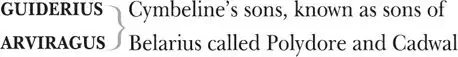

The Tragedy of Cymbeline
CYMBELINE , King of Britain
INN OGEN , his daughter by a former queen, later disguised as Fidele
QUEEN , his second wife
CLOTEN , her son, Cymbeline's stepson
POSTHUMUS Leonatus, husband to Innogen
PISANIO , his servant
CORNELIUS , a doctor
LADY attendant on Innogen, named Helen
Two LORDS attendant on Cloten
Two GENTLEMEN
Two British CAPTAINS
Two JAILERS
BELARIUS , a banished lord, living in Wales under the name Morgan

PHILARIO, an Italian, Posthumus' host in Rome
IACHIMO , an Italian nobleman, friend to Philario
A FRENCHMAN
A Dutchman
A Spaniard
Caius LUCIUS , general of the Roman army
SOOTHSAYER , named Philharmonus
Two Roman SENATORS
A Roman TRIBUNE
A Roman CAPTAIN
JUPITER
Ghost of SICILIUS LEONATUS , Posthumus' father
Ghost of Posthumus' MOTHER
Ghosts of Posthumus' two BROTHERS
Lords, Attendants, Messengers, Musicians, Roman Tribunes, British and Roman Captains, Soldiers
Act 1
Scene 1 1 / running scene 1
Enter two Gentlemen
FIRST GENTLEMAN You do not meet a man but frowns 2 . Our bloods 3
No more obey the heavens than our courtiers
Still seem as does the king 4 .
SECOND GENTLEMAN But what's the matter?
FIRST GENTLEMAN His daughter, and the heir of's kingdom, whom
He purposed to 5 his wife's sole son — a widow
That late 6 he married — hath referred herself
Unto 7 a poor but worthy gentleman. She's wedded,
Her husband banished, she imprisoned, all
Is outward sorrow, though I think the king
Be touched at very heart 8 .
SECOND GENTLEMAN None but the king?
FIRST GENTLEMAN He that hath lost her 9 too: so is the queen,
That most desired the match. But not a courtier,
Although they wear their faces to the bent 10
Of the king's looks, hath a heart that is not
Glad at the thing they scowl at.
SECOND GENTLEMAN And why so?
FIRST GENTLEMAN He that hath missed 11 the princess is a thing 12
Too bad for bad report: and he that hath her —
I mean, that married her, alack, good man,
And therefore banished — is a creature 13 such
As, to seek through the regions of the earth
For one his like 14 , there would be something failing 15
In him that should compare. I do not think
So fair an outward 16 and such stuff 17 within
Endows a man but he 18 .
SECOND GENTLEMAN You speak him far 19 .
FIRST GENTLEMAN I do extend, sir, within himself 20 ,
Crush him together rather than unfold
His measure 21 duly.
SECOND GENTLEMAN What's his name and birth 22 ?
FIRST GENTLEMAN I cannot delve him to the root 23 : his father
Was called Sicilius, who did join his honour 24
Against the Romans with Cassibelan 25 ,
But had his titles by 26 Tenantius 27 whom
He served with glory and admired success:
So gained the sur-addition 28 Leonatus 29 .
And had, besides this gentleman in question,
Two other sons, who in the wars o'th'time
Died with their swords in hand. For which their father,
Then old and fond of issue 30 , took such sorrow
That he quit being, and his gentle lady,
Big of 31 this gentleman, our theme, deceased
As he was born. The king he takes the babe
To his protection, calls him Posthumus Leonatus,
Breeds him, and makes him of his bedchamber 32 ,
Puts to him all the learnings 33 that his time 34
Could make him the receiver of, which he took
As we do air, fast 35 as 'twas ministered,
And in's spring became a harvest 36 : lived in court —
Which rare 37 it is to do — most praised, most loved:
A sample 38 to the youngest, to th'more mature
A glass 39 that feated them 40 , and to the graver 41 ,
A child that guided dotards 42 . To his mistress,
For whom he now is banished, her own price 43
Proclaims 44 how 45 she esteemed him; and his virtue
By her election may be truly read 46 ,
What kind of man he is.
SECOND GENTLEMAN I honour him even 47 out of your report.
But pray you tell me, is she sole child to th'king?
FIRST GENTLEMAN His only child.
He had two sons — if this be worth your hearing,
Mark it — the eldest of them at three years old,
I'th'swathing 48 clothes the other, from their nursery
Were stol'n, and to this hour no guess in knowledge Which way they went.
SECOND GENTLEMAN How long is this ago?
FIRST GENTLEMAN Some twenty years.
SECOND GENTLEMAN That a king's children should be so conveyed 49 ,
So slackly 50 guarded, and the search so slow
That could not trace them.
FIRST GENTLEMAN Howsoe'er 'tis strange 51 ,
Or that the negligence may well be laughed at,
Yet is it true, sir.
SECOND GENTLEMAN I do well believe you.
FIRST GENTLEMAN We must forbear 52 . Here comes the gentleman,
The queen and princess.
Exeunt
Enter the Queen, Posthumus 53 and Innogen 54
QUEEN No, be assured you shall not find me, daughter,
After the slander 55 of most stepmothers,
Evil-eyed unto you. You're my prisoner, but
Your jailer shall deliver you the keys
That lock up your restraint 56 . For you, Posthumus,
So soon as I can win 57 th'offended king,
I will be known your advocate: marry 58 , yet
The fire of rage is in him, and 'twere good
You leaned unto 59 his sentence, with what patience
Your wisdom may inform you 60 .
POSTHUMUS Please 61 your highness,
I will from hence 62 today.
QUEEN You know the peril 63 .
I'll fetch a 64 turn about the garden, pitying 65
The pangs of barred affections 66 , though the king
Hath charged 67 you should not speak together.
Exit
INNOGEN O dissembling 68 courtesy! How fine this tyrant
Can tickle where she wounds! My dearest husband,
I something fear my father's wrath, but nothing —
Always reserved my holy duty 69 — what
His rage can do on me. You must be gone,
And I shall here abide the hourly shot 70
Of angry eyes: not comforted to live,
But that there is this jewel in the world
That I may see again.
POSTHUMUS My queen, my mistress:
O lady, weep no more, lest I give cause
To be suspected of more tenderness
Than doth become a man 71 . I will remain
The loyal'st husband that did e'er plight troth 72 .
My residence in Rome, at one Philario's,
Who to my father was a friend, to me
Known but by letter: thither 73 write, my queen,
And with mine eyes I'll drink the words you send,
Though ink be made of gall 74 .
Enter Queen
QUEEN Be brief, I pray you:
If the king come, I shall incur I know not
How much of his displeasure.— Yet I'll move him
Aside
To walk this way: I never do him wrong,
But he does buy 75 my injuries to be friends:
Pays dear for my offences.
[Exit]
POSTHUMUS Should we be taking leave
As long a term 76 as yet we have to live,
The loathness 77 to depart would grow. Adieu.
INNOGEN Nay, stay a little:
Were you but riding forth to air yourself,
Such parting were too petty 78 . Look here, love,
This diamond was my mother's; take it, heart,
Gives a ring
But keep it till you woo another wife,
When Innogen is dead.
POSTHUMUS How, how? Another?
You gentle gods, give me but this I have,
And cere 79 up my embracements from a next
With bonds of death. Remain, remain thou here
Puts on the ring
While sense 80 can keep it on: and sweetest, fairest,
As I my poor self did exchange for you 81
To your so infinite loss, so in our trifles 82
I still win of you. For my sake wear this,
It is a manacle of love. I'll place it
Upon this fairest prisoner 83 .
Puts a bracelet on her arm
INNOGEN O, the gods!
When shall we see 84 again?
Enter Cymbeline and Lords
POSTHUMUS Alack 85 , the king!
CYMBELINE Thou basest 86 thing, avoid hence 87 , from my sight:
If after this command thou fraught 88 the court
With thy unworthiness, thou diest. Away,
Thou'rt poison to my blood.
POSTHUMUS The gods protect you,
And bless the good remainders 89 of the court:
I am gone.
Exit
INNOGEN There cannot be a pinch 90 in death
More sharp than this is.
CYMBELINE O disloyal thing,
That shouldst repair 91 my youth, thou heap'st
A year's age on me.
INNOGEN I beseech you, sir,
Harm not yourself with your vexation,
I am senseless of 92 your wrath; a touch more rare 93
Subdues all pangs, all fears.
CYMBELINE Past grace? Obedience?
INNOGEN Past hope and in despair: that way past grace 94 .
CYMBELINE That mightst have had the sole son of my queen.
INNOGEN O, blest that I might not: I chose an eagle,
And did avoid a puttock 95 .
CYMBELINE Thou took'st a beggar, wouldst have made my throne
A seat for baseness.
INNOGEN No, I rather added a lustre to it.
CYMBELINE O thou vile one!
INNOGEN Sir,
It is your fault that I have loved Posthumus:
You bred him as my playfellow, and he is
A man worth any woman: overbuys me
Almost the sum he pays 96 .
CYMBELINE What? Art thou mad?
INNOGEN Almost, sir: heaven restore me! Would I were
A neatherd's 97 daughter, and my Leonatus
Our neighbour shepherd's son.
Enter Queen
CYMBELINE Thou foolish thing!—
They were again together: you have done
To Queen
Not after 98 our command.— Away with her,
And pen her up.
QUEEN Beseech 99 your patience: peace,
Dear lady daughter, peace. Sweet sovereign,
Leave us to ourselves, and make yourself some comfort
Out of your best advice 100 .
CYMBELINE Nay, let her languish 101
A drop of blood a day, and being aged,
Die of this folly.
Exeunt [Cymbeline and Lords]
Enter Pisanio
QUEEN Fie, you must give way 102 .
Here is your servant.— How now, sir? What news?
PISANIO My lord your son drew 103 on my master.0
QUEEN Ha?
No harm I trust is done?
PISANIO There might have been,
But that my master rather played than fought,
And had no help of anger 104 : they were parted
By gentlemen at hand.
QUEEN I am very glad on't.
INNOGEN Your son's my father's friend, he takes his part 105
To draw upon an exile.— O brave sir!—
I would they were in Afric 106 both together,
Myself by with a needle, that I might prick
The goer-back 107 .—Why came you from your master?
PISANIO On his command: he would not suffer 108 me
To bring him to the haven 109 : left these notes
Of what commands I should be subject to,
When't pleased you to employ me.
QUEEN This hath been
Your faithful servant: I dare lay 110 mine honour
He will remain so.
PISANIO I humbly thank your highness.
QUEEN Pray walk awhile.
To Innogen
INNOGEN About some half hour hence, pray you speak with me.
To Pisanio
You shall, at least, go see my lord aboard.
For this time leave me.
Exeunt
Scene 2 / running scene 1 continues
Enter Cloten and two Lords
FIRST LORD Sir, I would advise you to shift a shirt 111 ; the violence of action hath made you reek as a sacrifice 112 : where 113 air comes out, air comes in: there's none abroad 114 so wholesome as that you vent.
CLOTEN If my shirt were bloody, then to 115 shift it. Have I hurt him?
SECOND LORD No, faith: not so much as 116 his patience.
Aside
FIRST LORD Hurt him? His body's a passable carcass 117 if he be not hurt. It is a thoroughfare for steel if it be not hurt.
SECOND LORD His steel was in debt, it went o'th'backside the town 118 .
Aside
CLOTEN The villain would not stand me 119 .
SECOND LORD No, but he fled forward still, toward your face.
Aside
FIRST LORD Stand you? You have land enough of your own: but he added to your having, gave you some ground.
SECOND LORD As many inches as you have oceans 120 . Puppies 121 !
Aside
CLOTEN I would they had not come between us.
SECOND LORD So would I, till you had measured how long a fool you were upon the ground 122 .
Aside
CLOTEN And that she should love this fellow, and refuse me!
SECOND LORD If it be a sin to make a true election 123 , she is damned.
Aside
FIRST LORD Sir, as I told you always: her beauty and her brain go not together. She's a good sign 124 , but I have seen small reflection 125 of her wit 126 .
SECOND LORD She shines not upon fools, lest the reflection should hurt her.
Aside
CLOTEN Come, I'll to my chamber: would there had 127 been some hurt done.
SECOND LORD I wish not so, unless it had been the fall of an ass 128 , which is no great hurt.
Aside
CLOTEN You'll go with us?
FIRST LORD I'll attend your lordship.
CLOTEN Nay, come, let's go together.
SECOND LORD Well 129 , my lord.
Exeunt
Scene 3 / running scene 1 continues
Enter Innogen and Pisanio
INNOGEN I would thou grew'st unto 130 the shores o'th'haven,
And questioned'st every sail 131 : if he should write,
And I not have it, 'twere a paper lost,
As offered mercy 132 is. What was the last
That he spake 133 to thee?
PISANIO It was his queen, his queen.
INNOGEN Then waved his handkerchief?
PISANIO And kissed it, madam.
INNOGEN Senseless 134 linen, happier therein than I:
And that was all?
PISANIO No, madam: for so long
As he could make me 135 with this eye, or ear,
Distinguish him from others, he did keep 136
The deck, with glove, or hat, or handkerchief,
Still waving, as 137 the fits and stirs of's mind 138
Could best express how slow his soul sailed on 139 ,
How swift his ship.
INNOGEN Thou shouldst have made him
As little as a crow 140 , or less, ere left 141
To after-eye 142 him.
PISANIO Madam, so I did.
INNOGEN I would have broke mine eyestrings 143 , cracked them, but
To look upon him, till the diminution
Of space 144 had pointed 145 him sharp as my needle:
Nay, followed him, till he had melted from
The smallness of a gnat to air: and then
Have turned mine eye, and wept. But, good Pisanio,
When shall we hear from him?
PISANIO Be assured, madam,
With his next vantage 146 .
INNOGEN I did not take my leave of him, but had
Most pretty things to say: ere I could tell him
How I would think on him at certain hours,
Such thoughts and such: or I could make him swear
The shes 147 of Italy should not betray
Mine interest 148 and his honour: or have charged him,
At the sixth hour of morn, at noon, at midnight 149 ,
T'encounter 150 me with orisons 151 , for then
I am in heaven for him: or ere I could
Give him that parting kiss, which I had set
Betwixt two charming 152 words, comes in my father,
And like the tyrannous breathing of the north 153 ,
Shakes all our buds from growing.
Enter a Lady
LADY The queen, madam,
Desires your highness' company.
INNOGEN Those things I bid you do, get them dispatched.
I will attend the queen.
PISANIO Madam, I shall.
Exeunt
Scene 4 154 / running scene 2
Enter Philario 155 , Iachimo 156 , a Frenchman, a Dutchman and a Spaniard
IACHIMO Believe it, sir, I have seen him in Britain; he was then of a crescent note 157 , expected to prove so worthy as since he hath been allowed the name of 158 . But I could then have looked on him without the help of admiration 159 , though the catalogue of his endowments 160 had been tabled 161 by his side and I to peruse him by items.
PHILARIO You speak of him when he was less furnished than now he is with that which makes him both without and within.
FRENCHMAN I have seen him in France: we had very many there could behold the sun with as firm eyes as he 162 .
IACHIMO This matter of marrying his king's daughter, wherein he must be weighed 163 rather by her value than his own, words him, I doubt not, a great deal from the matter 164 .
FRENCHMAN And then his banishment.
IACHIMO Ay, and the approbation 165 of those that weep this lamentable divorce 166 under her 167 colours are wonderfully to extend him, be it but 168 to fortify 169 her judgement, which else an easy battery 170 might lay flat, for taking a beggar without less quality. But how comes it he is to sojourn 171 with you? How creeps acquaintance 172 ?
PHILARIO His father and I were soldiers together, to whom I have been often bound for no less than my life.
Enter Posthumus
Here comes the Briton. Let him be so entertained amongst you as suits 173 with gentlemen of your knowing 174 to a stranger of his quality. I beseech you all be better known to this gentleman, whom I commend to you as a noble friend of mine. How worthy he is I will leave to appear hereafter, rather than story him in his own hearing 175 .
FRENCHMAN Sir, we have known together 176 in Orleans.
POSTHUMUS Since when I have been debtor to you for courtesies, which I will be ever to pay, and yet pay still 177 .
FRENCHMAN Sir, you o'errate my poor kindness, I was glad I did atone 178 my countryman and you: it had been pity you should have been put together 179 , with so mortal 180 a purpose as then each bore, upon importance of so slight and trivial a nature.
POSTHUMUS By your pardon, sir, I was then a young traveller, rather shunned to go even with what I heard than in my every action to be guided by others' experiences 181 : but upon my mended judgement — if I offend not to say it is mended — my quarrel was not altogether slight.
FRENCHMAN Faith, yes, to be put to the arbitrament of 182 swords, and by such two that would by all likelihood have confounded one the other, or have fallen both.
IACHIMO Can we, with manners, ask what was the difference?
FRENCHMAN Safely, I think: 'twas a contention in public, which may, without contradiction, suffer the report 183 . It was much like an argument that fell out 184 last night, where each of us fell in praise of our country mistresses 185 . This gentleman at that time vouching 186 — and upon warrant of bloody affirmation — his to be more fair, virtuous, wise, chaste, constant, qualified and less attemptable 187 than any the rarest of our ladies in France.
IACHIMO That lady is not now living; or this gentleman's opinion, by this, worn out 188 .
POSTHUMUS She holds 189 her virtue still, and I my mind 190 .
IACHIMO You must not so far prefer her 'fore ours of Italy.
POSTHUMUS Being so far provoked as I was in France, I would abate her nothing 191 , though I profess myself 192 her adorer, not her friend.
IACHIMO As fair and as good — a kind of hand-in-hand comparison 193 — had been something too fair and too good for any lady in Britain. If she went before 194 others I have seen as that diamond of yours outlustres many I have beheld, I could not but believe she excelled many: but I have not seen the most precious diamond that is, nor you the lady.
POSTHUMUS I praised her as I rated 195 her: so do I my stone.
IACHIMO What do you esteem 196 it at?
POSTHUMUS More than the world enjoys 197 .
IACHIMO Either your unparagoned 198 mistress is dead, or she's outprized by a trifle 199 .
POSTHUMUS You are mistaken: the one may be sold or 200 given, or if there were wealth enough for the purchase, or merit for the gift. The other is not a thing for sale, and only the gift of the gods.
IACHIMO Which the gods have given you?
POSTHUMUS Which by their graces I will keep.
IACHIMO You may wear her in title yours 201 : but you know strange fowl light upon neighbouring ponds 202 . Your ring 203 may be stolen too, so your brace 204 of unprizable estimations 205 , the one is but frail 206 and the other casual 207 . A cunning thief, or a that-way-accomplished courtier 208 , would hazard the winning both of first and last.
POSTHUMUS Your Italy contains none so accomplished a courtier to convince 209 the honour of my mistress, if in the holding or loss of that you term her frail. I do nothing doubt you have store 210 of thieves, notwithstanding, I fear not my ring.
PHILARIO Let us leave here 211 , gentlemen.
POSTHUMUS Sir, with all my heart. This worthy signior, I thank him, makes no stranger of me, we are familiar at first 212 .
IACHIMO With five times so much conversation, I should get ground of your fair mistress, make her go back, even to the yielding 213 , had I admittance and opportunity to friend 214 .
POSTHUMUS No, no.
IACHIMO I dare thereupon pawn the moiety 215 of my estate, to 216 your ring, which in my opinion o'ervalues it something 217 : but I make my wager rather against your confidence than her reputation. And to bar your offence 218 herein too, I durst attempt it against any lady in the world.
POSTHUMUS You are a great deal abused 219 in too bold a persuasion 220 , and I doubt not you sustain what you're worthy of 221 by your attempt.
IACHIMO What's that?
POSTHUMUS A repulse, though your attempt, as you call it, deserve more: a punishment too.
PHILARIO Gentlemen, enough of this, it came in 222 too suddenly. Let it die as it was born, and I pray you be better acquainted.
IACHIMO Would I had put my estate 223 and my neighbour's on th'approbation 224 of what I have spoke.
POSTHUMUS What lady would you choose to assail?
IACHIMO Yours, whom in constancy you think stands so safe. I will lay you ten thousand ducats 225 to your ring, that commend 226 me to the court where your lady is, with no more advantage than the opportunity of a second conference 227 , and I will bring from thence that honour of hers which you imagine so reserved 228 .
POSTHUMUS I will wage 229 against your gold, gold to it: my ring I hold dear as my finger,'tis part of it.
IACHIMO You are a friend, and therein the wiser 230 : if you buy ladies' flesh at a million a dram 231 , you cannot preserve 232 it from tainting. But 233 I see you have some religion in you, that 234 you fear.
POSTHUMUS This is but a custom in your tongue 235 : you bear a graver 236 purpose I hope.
IACHIMO I am the master of my speeches, and would undergo 237 what's spoken, I swear.
POSTHUMUS Will you? I shall but lend my diamond till your return: let there be covenants drawn between's 238 . My mistress exceeds in goodness the hugeness of
your unworthy thinking. I dare you to this match: here's my ring.
PHILARIO I will have it no lay 239 .
IACHIMO By the gods, it is one. If I bring you no sufficient testimony 240 that I have enjoyed the dearest bodily part of your mistress, my ten thousand ducats are yours, so is your diamond too. If I come off 241 , and leave her in such honour as you have trust in, she your jewel, this your jewel and my gold are yours, provided I have your commendation 242 for my more free entertainment 243 .
POSTHUMUS I embrace these conditions, let us have articles betwixt us 244 . Only thus far you shall answer: if you make your voyage upon her 245 and give me directly to understand you have prevailed, I am no further your enemy, she is not worth our debate. If she remain unseduced, you not making it appear otherwise, for your ill opinion and th'assault you have made to her chastity, you shall answer me with your sword.
IACHIMO Your hand, a covenant 246 : we will have these things set down by lawful counsel, and straight away for Britain, lest the bargain should catch cold and starve 247 : I will fetch my gold and have our two wagers recorded.
POSTHUMUS Agreed.
[Exeunt Posthumus and Iachimo]
FRENCHMAN Will this hold 248 , think you?
PHILARIO Signior Iachimo will not from it 249 . Pray let us follow 'em.
Exeunt
Scene 5 250 / running scene 3
Enter Queen, Ladies and Cornelius
QUEEN Whiles yet the dew's on ground 251 , gather those flowers.
Make haste. Who has the note 252 of them?
LADY I, madam.
QUEEN Dispatch 253 .
Exeunt Ladies
Now, master doctor, have you brought those drugs?
CORNELIUS Pleaseth your highness, ay: here they are, madam:
Presents a small box
But I beseech your grace, without offence 254 —
My conscience bids me ask — wherefore 255 you have
Commanded of me these most poisonous compounds 256 ,
Which are the movers of 257 a languishing 258 death:
But though slow, deadly 259 ?
QUEEN I wonder, doctor,
Thou ask'st me such a question: have I not been
Thy pupil long? Hast thou not learned 260 me how
To make perfumes? Distil? Preserve? 261 Yea so 262 ,
That our great king himself doth woo me oft
For my confections 263 ? Having thus far proceeded —
Unless thou think'st me devilish — is't not meet 264
That I did amplify my judgement in
Other conclusions 265 ? I will try 266 the forces 267
Of these thy compounds on such creatures as
We count not worth the hanging, but none human,
To try the vigour 268 of them, and apply
Allayments 269 to their act 270 , and by them gather
Their several 271 virtues and effects.
CORNELIUS Your highness
Shall from this practice but make hard your heart:
Besides, the seeing these effects will be
Both noisome and infectious 272 .
QUEEN O, content thee 273 .—
Enter Pisanio
Here comes a flattering rascal, upon him
Aside
Will I first work: he's for his master,
And enemy to my son.— How now, Pisanio?—
Doctor, your service for this time is ended,
Take your own way.
CORNELIUS I do suspect you, madam,
Aside
But you shall do no harm.
QUEEN Hark thee, a word.
To Pisanio
CORNELIUS I do not like her. She doth think she has
Aside
Strange 274 ling'ring poisons 275 : I do know her spirit,
And will not trust one of her malice with
A drug of such damned nature. Those she has
Will stupefy and dull the sense awhile,
Which first, perchance, she'll prove 276 on cats and dogs,
Then afterward up higher 277 : but there is
No danger in what show 278 of death it makes,
More than the locking-up 279 the spirits a time,
To be more fresh, reviving 280 . She is fooled
With a most false effect: and I the truer
So to be false with her.
QUEEN No further service, doctor,
Until I send for thee.
CORNELIUS I humbly take my leave.
Exit
QUEEN Weeps she still, say'st thou? Dost thou think in time
She will not quench 281 , and let instructions 282 enter
Where folly now possesses? Do thou work 283 :
When thou shalt bring me word she loves my son,
I'll tell thee on the instant thou art then
As great as is thy master: greater, for
His fortunes all lie speechless, and his name
Is at last gasp 284 . Return he cannot, nor
Continue where he is: to shift his being 285
Is to exchange one misery with another,
And every day that comes comes to decay
A day's work in him 286 . What shalt thou expect
To be depender 287 on a thing that leans 288 ?
Who cannot be new built, nor has no friends
So much as but to prop him?
She drops the box and Pisanio picks it up
Thou takest up
Thou know'st not what: but take it for thy labour,
It is a thing I made, which hath the king
Five times redeemed from death. I do not know
What is more cordial 289 . Nay, I prithee, take it,
It is an earnest 290 of a farther good
That I mean to thee. Tell thy mistress how
The case stands with her: do't, as from thyself 291 ;
Think what a chance thou changest on 292 , but think
Thou hast thy mistress still 293 , to boot 294 , my son,
Who shall take notice of thee 295 . I'll move the king
To any shape of thy preferment, such
As thou'lt desire 296 : and then myself, I chiefly,
That set thee on to this desert 297 , am bound
To load 298 thy merit richly. Call my women.
Think on my words.—
Exit Pisanio
A sly and constant 299 knave,
Not to be shaked 300 : the agent for his master,
And the remembrancer 301 of her to hold
The handfast 302 to her lord. I have given him that,
Which if he take, shall quite unpeople 303 her
Of liegers 304 for her sweet 305 : and which she after,
Except she bend her humour 306 , shall be assured
To taste of too.—
Enter Pisanio and Ladies
With flowers
So, so: well done, well done:
The violets, cowslips and the primroses
Bear to my closet 307 .— Fare thee well, Pisanio.
Think on my words.
Exeunt Queen and Ladies
PISANIO And shall do:
But when to my good lord I prove untrue,
I'll choke myself: there's all I'll do for you.
Exit
Scene 6 / running scene 3 continues
Enter Innogen alone
INNOGEN A father cruel and a stepdame 308 false,
A foolish suitor to a wedded lady,
That hath her husband banished 309 : O, that husband,
My supreme crown of grief, and those repeated
Vexations of it! Had I been thief-stol'n 310 ,
As my two brothers, happy: but most miserable
Is the desire that's glorious 311 . Blest be those,
How mean 312 soe'er, that have their honest wills 313 ,
Which seasons 314 comfort. Who may this be? Fie! 315
Enter Pisanio and Iachimo
PISANIO Madam, a noble gentleman of Rome,
Comes from my lord with letters.
IACHIMO Change you 316 , madam:
The worthy Leonatus is in safety
And greets your highness dearly.
Presents a letter
INNOGEN Thanks good sir,
You're kindly welcome.
IACHIMO All of her that is out of door 317 most rich!
Aside
If she be furnished 318 with a mind so rare 319 ,
She is alone th'Arabian bird 320 , and I
Have lost the wager. Boldness be my friend:
Arm me audacity 321 from head to foot,
Or like the Parthian I shall flying fight 322 ,
Rather, directly fly 323 .
INNOGEN Reads 'He is one of the noblest note 324 , to whose kindnesses I am most infinitely tied. Reflect 325 upon him accordingly, as you value your trust 326 . Leonatus.'So far 327 I read aloud.
But even the very middle of my heart
Is warmed by th'rest, and takes it thankfully.
You are as welcome, worthy sir, as I
Have words to bid you, and shall find it so
In all that I can do.
IACHIMO Thanks, fairest lady.—
What, are men mad? Hath nature given them eyes
To see this vaulted arch 328 and the rich crop
Of sea and land, which 329 can distinguish 'twixt
The fiery orbs 330 above and the twinned 331 stones
Upon th'unnumbered 332 beach, and can we not
Partition 333 make with spectacles so precious 334
'Twixt fair and foul?
INNOGEN What makes your admiration 335 ?
IACHIMO It cannot be i'th'eye: for apes and monkeys,
'Twixt two such shes 336 , would chatter this way 337 and
Contemn 338 with mows 339 the other. Nor i'th'judgement:
For idiots in this case of favour would
Be wisely definite 340 . Nor i'th'appetite 341 :
Sluttery 342 , to such neat 343 excellence opposed,
Should make desire vomit emptiness 344 ,
Not so allured 345 to feed 346 .
INNOGEN What is the matter, trow 347 ?
IACHIMO The cloyèd 348 will 349 ,
That satiate yet unsatisfied desire, that tub
Both filled and running 350 , ravening 351 first the lamb,
Longs after for the garbage 352 .
INNOGEN What, dear sir,
Thus raps 353 you? Are you well?
IACHIMO Thanks, madam, well.— Beseech you, sir,
To Pisanio
Desire my man's abode 354 where I did leave him:
He's strange 355 and peevish 356 .
PISANIO I was going, sir,
To give him welcome.
Exit
INNOGEN Continues well my lord? His health, beseech you?
IACHIMO Well, madam.
INNOGEN Is he disposed to mirth? I hope he is.
IACHIMO Exceeding pleasant: none a stranger there
So merry and so gamesome 357 : he is called
The Briton reveller.
INNOGEN When he was here
He did incline to sadness 358 , and oft-times
Not knowing why.
IACHIMO I never saw him sad.
There is a Frenchman his companion, one
An 359 eminent monsieur, that it seems much loves
A Gallian 360 girl at home. He furnaces
The thick sighs 361 from him, whiles the jolly Briton —
Your lord, I mean — laughs from's free lungs 362 : cries 'O,
Can my sides hold, to think that man, who knows
By history, report or his own proof 363 ,
What woman is, yea, what she cannot choose
But must be, will's free hours languish
For assurèd bondage?'
INNOGEN Will my lord say so?
IACHIMO Ay, madam, with his eyes in flood with laughter:
It is a recreation to be by
And hear him mock the Frenchman. But, heavens know,
Some men are much to blame.
INNOGEN Not he, I hope.
IACHIMO Not he: but yet heaven's bounty towards him might
Be used more thankfully 364 . In himself 'tis 365 much;
In you, which I account 366 his, beyond all talents 367 .
Whilst I am bound to wonder, I am bound
To pity too.
INNOGEN What do you pity, sir?
IACHIMO Two creatures heartily.
INNOGEN Am I one, sir?
You look on me: what wreck discern you in me
Deserves your pity?
IACHIMO Lamentable! What,
To hide me 368 from the radiant sun, and solace
I'th'dungeon by a snuff 369 ?
INNOGEN I pray you, sir,
Deliver with more openness your answers
To my demands. Why do you pity me?
IACHIMO That others do —
I was about to say, enjoy 370 your — but
It is an office 371 of the gods to venge 372 it,
Not mine to speak on't.
INNOGEN You do seem to know
Something of me, or what concerns me; pray you,
Since doubting things go ill 373 often hurts more
Than to be sure they do — for certainties
Either are past remedies, or, timely knowing 374 ,
The remedy then born 375 — discover to me
What both you spur and stop 376 .
IACHIMO Had 377 I this cheek
To bathe my lips upon: this hand, whose touch,
Whose every touch, would force the feeler's 378 soul
To th'oath of loyalty: this object 379 , which
Takes prisoner the wild motion 380 of mine eye,
Firing 381 it only here: should I, damned then,
Slaver 382 with lips as common 383 as the stairs
That mount the Capitol 384 : join grips with hands
Made hard with hourly falsehood — falsehood, as
With labour 385 — then by-peeping 386 in an eye
Base and illustrous 387 as the smoky light
That's fed with 388 stinking tallow 389 : it were fit 390
That all the plagues of hell should at one time
Encounter such revolt 391 .
INNOGEN My lord, I fear,
Has forgot Britain.
IACHIMO And himself. Not I
Inclined to this intelligence pronounce 392
The beggary of his change: but 'tis your graces
That from my mutest conscience to my tongue
Charms this report out.
INNOGEN Let me hear no more.
IACHIMO O dearest soul: your cause doth strike my heart
With pity that doth make me sick. A lady
So fair, and fastened to an empery 393
Would make the great'st king double 394 , to be partnered 395
With tomboys 396 hired with that self-exhibition 397
Which your own coffers yield: with diseased ventures 398
That play 399 with all infirmities 400 for gold
Which rottenness can lend nature: such boiled stuff 401
As well might poison poison. Be revenged,
Or she that bore you was no queen, and you
Recoil from your great stock 402 .
INNOGEN Revenged?
How should I be revenged? If this be true —
As I have such a heart that both mine ears
Must not in haste abuse — if it be true,
How should I be revenged?
IACHIMO Should he make me
Live like Diana's priest 403 , betwixt cold 404 sheets,
Whiles he is vaulting 405 variable 406 ramps 407 ,
In your despite 408 , upon your purse 409 — revenge it.
I dedicate myself to your sweet pleasure,
More noble than that runagate 410 to your bed,
And will continue fast 411 to your affection,
Still close as sure.
INNOGEN What ho, Pisanio!
Calls
IACHIMO Let me my service tender on your lips 412 .
INNOGEN Away, I do condemn mine ears that have
So long attended 413 thee 414 . If thou wert honourable
Thou wouldst have told this tale for virtue, not
For such an end thou seek'st, as base as strange.
Thou wrong'st a gentleman who is as far
From thy report as thou from honour, and
Solicit'st here a lady that disdains
Thee and the devil alike.— What ho, Pisanio!
The king my father shall be made acquainted
Of thy assault: if he shall think it fit,
A saucy 415 stranger in his court to mart 416
As in a Romish stew 417 , and to expound
His beastly mind to us 418 , he hath a court
He little cares for, and a daughter who
He not respects at all.— What ho, Pisanio!
IACHIMO O happy Leonatus I may say,
The credit 419 that thy lady hath of thee
Deserves thy trust, and thy most perfect goodness
Her assured credit. Blessèd live you long,
A lady to the worthiest sir that ever
Country called his; and you his mistress, only
For the most worthiest fit. Give me your pardon.
I have spoke this to know if your affiance 420
Were deeply rooted, and shall make your lord
That which he is new o'er 421 : and he is one
The truest mannered 422 , such a holy witch 423
That he enchants societies into him:
Half all men's hearts are his.
INNOGEN You make amends.
IACHIMO He sits 'mongst men like a descended god;
He hath a kind of honour sets him off
More than a mortal seeming. Be not angry,
Most mighty princess, that I have adventured
To try your taking 424 of a false report, which hath
Honoured with confirmation your great judgement
In the election of a sir so rare 425 ,
Which you know cannot err. The love I bear him
Made me to fan 426 you thus, but the gods made you,
Unlike all others, chaffless 427 . Pray your pardon.
INNOGEN All's well, sir: take my power i'th'court for yours.
IACHIMO My humble thanks. I had almost forgot
T'entreat your grace but 428 in a small request,
And yet of moment 429 too, for it concerns
Your lord: myself and other noble friends
Are partners in the business.
INNOGEN Pray what is't?
IACHIMO Some dozen Romans of us and your lord —
The best feather of our wing 430 — have mingled sums 431
To buy a present for the emperor:
Which I, the factor 432 for the rest, have done
In France: 'tis plate 433 of rare device 434 , and jewels
Of rich and exquisite form, their value's great,
And I am something curious 435 , being strange 436 ,
To have them in safe stowage: may it please you
To take them in protection?
INNOGEN Willingly:
And pawn 437 mine honour for their safety, since
My lord hath interest 438 in them. I will keep them
In my bedchamber.
IACHIMO They are in a trunk
Attended by my men: I will make bold
To send them to you, only for this night:
I must aboard tomorrow.
INNOGEN O, no, no.
IACHIMO Yes, I beseech: or I shall short 439 my word
By length'ning my return. From Gallia 440
I crossed the seas on purpose and on promise
To see your grace.
INNOGEN I thank you for your pains:
But not away tomorrow.
IACHIMO O, I must, madam.
Therefore I shall beseech you, if you please
To greet your lord with writing, do't tonight.
I have outstood 441 my time, which is material 442
To th'tender 443 of our present.
INNOGEN I will write:
Send your trunk to me, it shall safe be kept,
And truly yielded you. You're very welcome.
Exeunt
Act 2
Scene 1 / running scene 4
Enter Cloten and the two Lords
CLOTEN Was there ever man had such luck? When I kissed the jack 444 upon an upcast 445 , to be hit away! I had a hundred pound on't: and then a whoreson jackanapes 446 must take me up 447 for swearing, as if I borrowed mine oaths 448 of 449 him, and might not spend them at my pleasure 450 .
FIRST LORD What got he by that? You have broke his pate 451 with your bowl.
SECOND LORD If his wit had been like him that broke it, it would have run all out 452 .
Aside
CLOTEN When a gentleman 453 is disposed to swear, it is not for any standers-by to curtail 454 his oaths. Ha?
SECOND LORD No my lord.— Nor crop the ears of them.
Aside
CLOTEN Whoreson dog! I give him satisfaction? Would he had been one of my rank 455 .
SECOND LORD To have smelled like a fool.
Aside
CLOTEN I am not vexed more at anything in th'earth: a pox 456 on't 457 ! I had rather not be so 458 noble as I am: they dare not fight with me, because of the queen my mother: every jack-slave 459 hath his bellyful of fighting, and I must go up and down like a cock 460 that nobody can match.
SECOND LORD You are cock and capon 461 too, and you crow, cock, with your comb 462 on.
Aside
CLOTEN Sayest thou 463 ?
SECOND LORD It is not fit your lordship should undertake 464 every companion 465 that you give offence to.
CLOTEN No, I know that: but it is fit I should commit offence 466 to my inferiors.
SECOND LORD Ay, it is fit for your lordship only 467 .
CLOTEN Why, so I say.
FIRST LORD Did you hear of a stranger that's come to court tonight?
CLOTEN A stranger, and I not know on't?
SECOND LORD He's a strange fellow himself, and knows it not.
Aside
FIRST LORD There's an Italian come, and 'tis thought one of Leonatus' friends.
CLOTEN Leonatus? A banished rascal; and he's another, whatsoever 468 he be. Who told you of this stranger?
FIRST LORD One of your lordship's pages.
CLOTEN Is it fit I went to look upon him? Is there no derogation 469 in't?
SECOND LORD You cannot derogate 470 , my lord.
CLOTEN Not easily, I think.
SECOND LORD You are a fool granted, therefore your issues 471 , being foolish, do not derogate.
Aside
CLOTEN Come, I'll go see this Italian: what I have lost today at bowls I'll win tonight of him. Come, go.
SECOND LORD I'll attend your lordship.—
Exeunt [Cloten and First Lord]
That such a crafty devil as is his mother
Should yield the world this ass: a woman that
Bears all down 472 with her brain, and this her son
Cannot take two from twenty, for his heart 473 ,
And leave eighteen. Alas, poor princess,
Thou divine Innogen, what thou endur'st,
Betwixt 474 a father by thy stepdame governed,
A mother 475 hourly coining 476 plots, a wooer
More hateful than the foul expulsion 477 is
Of thy dear husband, than that horrid act
Of the divorce he'd make 478 ! The heavens hold firm
The walls of thy dear honour, keep unshaked
That temple, thy fair mind, that thou mayst stand,
T'enjoy thy banished lord and this great land.
Exit
Scene 2 / running scene 5
Enter Innogen in her bed, and a Lady
A trunk is brought in
INNOGEN Who's there? My woman Helen?
LADY Please you, madam.
INNOGEN What hour is it?
LADY Almost midnight, madam.
INNOGEN I have read three hours then: mine eyes are weak 479 .
Fold down the leaf 480 where I have left 481 : to bed.
Gives her the book
Take not away the taper 482 , leave it burning:
And if thou canst awake by four o'th'clock,
I prithee call me.— Sleep hath seized me wholly.
[Exit Lady]
To your protection I commend me, gods,
From fairies 483 and the tempters of the night 484 .
Guard me, beseech ye.
Sleeps
Iachimo from the trunk
IACHIMO The crickets sing 485 , and man's o'er-laboured sense 486
Repairs itself by rest. Our Tarquin 487 thus
Did softly press the rushes 488 , ere 489 he wakened
The chastity he wounded. Cytherea 490 ,
How bravely thou becom'st 491 thy bed; fresh lily 492 ,
And whiter than the sheets: that I might touch,
But kiss, one kiss! Rubies 493 unparagoned 494 ,
How dearly 495 they do't 496 ! 'Tis her breathing that
Perfumes the chamber thus: the flame o'th'taper
Bows toward her, and would underpeep her lids 497
To see th'enclosèd lights 498 , now canopied 499
Under these windows 500 , white and azure 501 laced 502
With blue of heaven's own tinct 503 . But my design 504 :
To note the chamber. I will write all down.
Such and such pictures, there the window, such
Writes
Th'adornment 505 of her bed; the arras 506 , figures 507 ,
Why, such and such: and the contents 508 o'th'story.
Ah, but some natural notes 509 about 510 her body,
Above 511 ten thousand meaner 512 movables 513
Would testify t'enrich mine inventory 514 .
O sleep, thou ape 515 of death, lie dull 516 upon her,
And be her sense 517 but as a monument 518
Thus in a chapel lying. Come off, come off;
Takes off her bracelet
As slippery as the Gordian knot 519 was hard.
'Tis mine, and this will witness outwardly 520 ,
As strongly as the conscience does within,
To th'madding 521 of her lord. On her left breast
A mole cinque-spotted 522 : like the crimson drops 523
I'th'bottom of a cowslip 524 . Here's a voucher 525
Stronger than ever law could make; this secret 526
Will force him think I have picked 527 the lock and ta'en
The treasure of her honour. No more: to what end?
Why should I write this down that's riveted,
Screwed to my memory? She hath been reading late,
The tale of Tereus 528 . Here the leaf's turned down
Where Philomel gave up 529 . I have enough.
To th'trunk again, and shut the spring 530 of it.
Swift, swift, you dragons of the night 531 , that dawning
May bare the raven's eye 532 ! I lodge in fear:
Though this 533 a heavenly angel, hell is here.
Clock strikes
One, two, three: time, time!
Exit [into the trunk]
Bed and trunk removed
Scene 3 / running scene 5 continues
Enter Cloten and Lords
FIRST LORD Your lordship is the most patient man in loss, the most coldest 534 that ever turned up ace 535 .
CLOTEN It would make any man cold 536 to lose.
FIRST LORD But not every man patient after 537 the noble temper 538 of your lordship. You are most hot and furious when you win.
CLOTEN Winning will put any man into courage. If I could get this foolish Innogen, I should have gold enough. It's almost morning, is't not?
FIRST LORD Day, my lord.
CLOTEN I would this music would come: I am advised to give her music o' mornings, they say it will penetrate 539 .—
Enter Musicians
Come on, tune: if you can penetrate her with your fingering 540 , so 541 : we'll try with tongue 542 too: if none will do, let her remain 543 : but I'll never give o'er. First, a very excellent good-conceited thing 544 ; after, a wonderful sweet air 545 , with admirable rich words to it, and then let her consider.
Song
Sung by either Cloten or a Musician
Hark, hark, the lark at heaven's gate sings,
And Phoebus 546 'gins 547 arise,
His steeds to water at those springs 548
On chaliced 549 flowers that lies:
And winking 550 Mary-buds 551 begin to ope their golden eyes
With everything that pretty is, my lady sweet, arise:
Arise, arise.
CLOTEN So, get you gone: if this penetrate, I will consider your music the better: if it do not, it is a vice in her ears which horsehairs 552 and calves' guts 553 , nor the voice of unpaved 554 eunuch to boot 555 , can never amend.
[Exeunt Musicians]
Enter Cymbeline and Queen
SECOND LORD Here comes the king.
CLOTEN I am glad I was up so late, for that's the reason I was up so early: he cannot choose but take this service I have done fatherly 556 .— Good morrow to your majesty and to my gracious mother.
CYMBELINE Attend you here 557 the door of our stern daughter? Will she not forth?
CLOTEN I have assailed her with musics, but she vouchsafes 558 no notice.
CYMBELINE The exile of her minion 559 is too new,
She hath not yet forgot him: some more time
Must wear 560 the print of his remembrance on't,
And then she's yours.
QUEEN You are most bound 561 to th'king,
Who lets go by no vantages 562 that may
Prefer 563 you to his daughter: frame yourself
To orderly solicits 564 , and be friended
With aptness of the season 565 : make denials 566
Increase your services: so seem, as if
You were inspired to do those duties which
You tender to her: that you in all obey her,
Save when command to your dismission 567 tends,
And therein you are senseless 568 .
CLOTEN Senseless? Not so.
[Enter a Messenger]
MESSENGER So like you 569 , sir, ambassadors from Rome;
The one is Caius Lucius.
CYMBELINE A worthy fellow,
Albeit 570 he comes on angry purpose now;
But that's no fault of his: we must receive 571 him
According to the honour of his sender 572 ,
And towards himself, his goodness forspent 573 on us,
We must extend our notice 574 . Our dear son,
When you have given good morning to your mistress,
Attend the queen and us. We shall have need
T'employ you towards this Roman.— Come, our queen.
Exeunt [all but Cloten]
CLOTEN If she be up, I'll speak with her: if not,
Let her lie still and dream.— By your leave, ho!—
Knocks
I know her women are about her: what
If I do line 575 one of their hands? 'Tis gold
Which buys admittance — oft it doth — yea, and makes
Diana's rangers 576 false 577 themselves, yield up
Their deer to th'stand o'th'stealer 578 : and 'tis gold
Which makes the true 579 man killed and saves the thief:
Nay, sometime hangs both thief and true man: what
Can it not do and undo? I will make
One of her women lawyer to me 580 , for
I yet not 581 understand the case 582 myself.—
Knocks
By your leave.
Enter a Lady
LADY Who's there that knocks?
CLOTEN A gentleman.
LADY No more?
CLOTEN Yes, and a gentlewoman's son.
LADY That's more
Than some whose tailors are as dear as yours
Can justly boast of 583 : what's your lordship's pleasure?
CLOTEN Your lady's person: is she ready?
LADY Ay,
To keep 584 her chamber.
CLOTEN There is gold for you,
Gives money
Sell me your good report 585 .
LADY How, my good name? Or to report of you
What I shall think is good? The princess.
Enter Innogen
CLOTEN Good morrow, fairest: sister 586 , your 587 sweet hand.
[Exit Lady]
INNOGEN Good morrow, sir. You lay out 588 too much pains
For purchasing but 589 trouble: the thanks I give
Is telling you that I am poor of thanks,
And scarce can spare them.
CLOTEN Still I swear I love you.
INNOGEN If you but said so, 'twere as deep 590 with me:
If you swear still 591 , your recompense is still
That I regard it not.
CLOTEN This is no answer.
INNOGEN But that you shall not say I yield being silent 592 ,
I would not speak. I pray you spare me: faith,
I shall unfold 593 equal discourtesy
To your best kindness: one of your great knowing 594
Should learn, being taught, forbearance.
CLOTEN To leave you in your madness, 'twere my sin:
I will not.
INNOGEN Fools cure not mad folks.
CLOTEN Do you call me fool?
INNOGEN As I am mad, I do:
If you'll be patient, I'll no more be mad.
That cures us both. I am much sorry, sir,
You put me 595 to forget a lady's manners
By being so verbal 596 : and learn now, for all,
That I, which 597 know my heart, do here pronounce
By th'very truth of it, I care not for you,
And am so near the lack of charity
To accuse myself I hate you, which I had rather
You felt than make't my boast 598 .
CLOTEN You sin against
Obedience, which you owe your father. For
The contract you pretend 599 with that base wretch 600 ,
One bred of alms 601 and fostered with cold dishes,
With scraps o'th'court, it is no contract, none:
And though it be allowed in meaner parties 602 —
Yet who than he more mean? — to knit their souls,
On whom there is no more dependency
But brats and beggary, in self-figured knot 603 ,
Yet you are curbed from that enlargement 604 by
The consequence o'th'crown 605 , and must not foil 606
The precious note 607 of it with a base slave,
A hilding 608 for a livery 609 , a squire's cloth 610 ,
A pantler 611 ; not so eminent.
INNOGEN Profane fellow,
Wert thou the son of Jupiter, and no more
But what thou art besides, thou wert 612 too base
To be his groom 613 : thou wert dignified enough,
Even to the point of envy 614 , if 'twere made
Comparative for your virtues 615 , to be styled 616
The under-hangman 617 of his kingdom, and hated
For being preferred so well 618 .
CLOTEN The south-fog 619 rot him!
INNOGEN He never can meet more mischance than come
To be but named of thee 620 . His meanest garment
That ever hath but clipped 621 his body is dearer
In my respect than all the hairs above thee,
Were they all made such men 622 .— How now, Pisanio?
Enter Pisanio
CLOTEN His garment? Now the devil—
INNOGEN To Dorothy my woman hie thee presently.
To Pisanio
CLOTEN His garment?
INNOGEN I am sprited 623 with 624 a fool,
Frighted and angered worse: go bid my woman
Search for a jewel that too casually
Hath left mine arm: it was thy master's. 'Shrew 625 me
If I would lose it for a revenue
Of any king's in Europe. I do think
I saw't this morning: confident I am.
Last night 'twas on mine arm; I kissed it.
I hope it be not gone to tell my lord
That I kiss aught 626 but he.
PISANIO 'Twill not be lost.
INNOGEN I hope so: go and search.
[Exit Pisanio]
CLOTEN You have abused me:
His meanest garment?
INNOGEN Ay, I said so, sir:
If you will make't an action 627 , call witness to't.
CLOTEN I will inform your father.
INNOGEN Your mother too:
She's my good lady, and will conceive, I hope,
But the worst of me 628 . So, I leave you, sir,
To th'worst of discontent.
Exit
CLOTEN I'll be revenged:
His meanest garment? Well.
Exit
Scene 4 629 / running scene 6
Enter Posthumus and Philario
POSTHUMUS Fear it not, sir: I would I were so sure
To win 630 the king as I am bold 631 her honour
Will remain hers.
PHILARIO What means 632 do you make to him?
POSTHUMUS Not any: but abide the change of time,
Quake in the present winter's state 633 and wish
That warmer days would come: in these seared 634 hopes
I barely gratify 635 your love; they failing 636 ,
I must die much your debtor.
PHILARIO Your very goodness and your company
O'erpays all I can do. By this 637 your king
Hath heard of 638 great Augustus: Caius Lucius
Will do's commission throughly 639 . And I think
He'll 640 grant the tribute: send th'arrearages 641 ,
Or look upon 642 our Romans, whose remembrance 643
Is yet 644 fresh in their grief.
POSTHUMUS I do believe —
Statist 645 though I am none, nor like to be —
That this will prove 646 a war; and you shall hear
The legions now in Gallia sooner landed
In our not-fearing Britain than have tidings
Of any penny tribute paid. Our countrymen
Are men more ordered 647 than when Julius Caesar
Smiled at their lack of skill, but found their courage
Worthy his frowning 648 at. Their discipline,
Now mingled with their courages, will make known
To their approvers 649 they are people such
That mend upon the world 650 .
Enter Iachimo
PHILARIO See Iachimo.
POSTHUMUS The swiftest harts 651 have posted 652 you by land,
And winds of all the corners 653 kissed your sails,
To make your vessel nimble.
PHILARIO Welcome, sir.
POSTHUMUS I hope the briefness of your answer 654 made 655
The speediness of your return.
IACHIMO Your lady
Is one of the fairest that I have looked upon—
POSTHUMUS And therewithal 656 the best, or let her beauty
Look through a casement 657 to allure false hearts,
And be false with them.
IACHIMO Here are letters for you.
Gives letters
POSTHUMUS Their tenor 658 good, I trust.
IACHIMO 'Tis very like 659 .
PHILARIO Was Caius Lucius in the Britain court
When you were there?
IACHIMO He was expected then,
But not approached 660 .
POSTHUMUS All is well yet.
Sparkles this stone as it was wont 661 , or is't not
Shows the ring
Too dull for your good wearing?
IACHIMO If I had lost it,
I should have lost the worth of it in gold.
I'll make a journey twice as far t'enjoy
A second night of such sweet shortness which
Was mine in Britain, for the ring is won.
POSTHUMUS The stone's too hard to come by.
IACHIMO Not a whit 662 ,
Your lady being so easy.
POSTHUMUS Make not, sir,
Your loss your sport 663 : I hope you know that we
Must not continue friends.
IACHIMO Good sir, we must
If you keep covenant 664 . Had I not brought
The knowledge 665 of your mistress home, I grant
We were to question further 666 , but I now
Profess myself the winner of her honour,
Together with your ring, and not the wronger
Of her or you, having proceeded but
By both your wills 667 .
POSTHUMUS If you can make't apparent
That you have tasted 668 her in bed, my hand 669
And ring is yours. If not, the foul opinion
You had of her pure honour gains or loses
Your sword or mine 670 , or masterless leaves both
To who shall find them 671 .
IACHIMO Sir, my circumstances 672 ,
Being so near the truth, as I will make them,
Must first induce you to believe: whose strength
I will confirm with oath, which I doubt not
You'll give me leave to spare 673 , when you shall find
You need it not.
POSTHUMUS Proceed.
IACHIMO First, her bedchamber —
Where I confess I slept not, but profess
Had that was well worth watching 674 — it was hanged
With tapestry of silk and silver 675 , the story
Proud Cleopatra when she met her Roman
And Cydnus 676 swelled above the banks, or 677 for
The press 678 of boats, or pride 679 . A piece of work
So bravely 680 done, so rich, that it did strive
In workmanship and value, which I wondered
Could be so rarely 681 and exactly wrought,
Since the true life on't was—
POSTHUMUS This is true:
And this you might have heard of here, by me,
Or by some other.
IACHIMO More particulars
Must justify my knowledge.
POSTHUMUS So they must,
Or do your honour injury.
IACHIMO The chimney
Is south the chamber, and the chimney-piece 682
Chaste Dian bathing 683 : never saw I figures
So likely to report themselves 684 ; the cutter 685
Was as another nature dumb, outwent her 686 ,
Motion and breath left out 687 .
POSTHUMUS This is a thing
Which you might from relation likewise reap 688 ,
Being, as it is, much spoke of.
IACHIMO The roof o'th'chamber
With golden cherubins is fretted 689 . Her andirons 690 —
I had forgot them — were two winking 691 Cupids
Of silver, each on one foot standing, nicely 692
Depending on their brands 693 .
POSTHUMUS This is her honour!
Let it be granted you have seen all this — and praise
Be given to your remembrance 694 — the description
Of what is in her chamber nothing saves 695
The wager you have laid.
IACHIMO Then if you can
Shows the bracelet
Be pale, I beg but leave 696 to air 697 this jewel: see,
And now 'tis up 698 again: it must be married
To that your diamond, I'll keep them.
POSTHUMUS Jove!
Once more let me behold it: is it that
Which I left with her?
IACHIMO Sir — I thank her — that.
She stripped it from her arm: I see her yet 699 :
Her pretty action did outsell 700 her gift,
And yet enriched it too: she gave it me, and said
POSTHUMUS Maybe she plucked it off
To send it me.
IACHIMO She writes so to you, doth she?
POSTHUMUS O no, no, no, 'tis true. Here, take this too,
Gives the ring
It is a basilisk 703 unto mine eye,
Kills me to look on't. Let there be no honour
Where there is beauty: truth, where semblance 704 : love,
Where there's another man. The vows of women
Of no more bondage 705 be to where they are made
Than they are to their virtues, which is nothing.
O, above measure false!
PHILARIO Have patience, sir,
And take your ring again, 'tis not yet won:
It may be probable 706 she lost it: or
Who knows if one of her women, being corrupted 707 ,
Hath stol'n it from her?
POSTHUMUS Very true,
And so 708 I hope he came by't. Back 709 my ring,
Takes back the ring
Render to me some corporal sign 710 about her
More evident 711 than this: for this was stol'n.
IACHIMO By Jupiter, I had it from her arm.
POSTHUMUS Hark you, he swears: by Jupiter he swears.
'Tis true, nay, keep the ring, 'tis true: I am sure
She would not lose it: her attendants are
All sworn 712 and honourable: they induced to steal it?
And by a stranger? No, he hath enjoyed her 713 :
The cognizance 714 of her incontinency 715
Is this: she hath bought the name of whore thus dearly 716 .
There, take thy hire 717 , and all the fiends of hell
Gives the ring again
Divide themselves between you 718 !
PHILARIO Sir, be patient:
This is not strong enough to be believed
Of one persuaded 719 well of.
POSTHUMUS Never talk on't:
She hath been colted 720 by him.
IACHIMO If you seek
For further satisfying, under her breast —
Worthy the pressing — lies a mole, right proud
Of that most delicate lodging. By my life,
I kissed it, and it gave me present 721 hunger
To feed again, though full. You do remember
This stain 722 upon her?
POSTHUMUS Ay, and it doth confirm
Another stain, as big as hell can hold,
Were there no more but it.
IACHIMO Will you hear more?
POSTHUMUS Spare your arithmetic, never count the turns 723 :
Once, and a million 724 !
IACHIMO I'll be sworn.
POSTHUMUS No swearing.
If you will swear you have not done't, you lie,
And I will kill thee if thou dost deny
Thou'st 725 made me cuckold 726 .
IACHIMO I'll deny nothing.
POSTHUMUS O, that I had her here, to tear her limb-meal 727 !
I will go there and do't, i'th'court, before
Her father. I'll do something.
Exit
PHILARIO Quite besides 728
The government 729 of patience. You have won:
Let's follow him and pervert 730 the present wrath
He hath against himself.
IACHIMO With all my heart.
Exeunt
Enter Posthumus
POSTHUMUS Is there no way for men to be, but women
Must be half-workers 731 ? We are all bastards 732 ,
And that most venerable 733 man, which I
Did call my father, was I know not where
When I was stamped 734 . Some coiner 735 with his tools
Made me a counterfeit: yet my mother seemed
The Dian of that time: so doth my wife
The nonpareil 736 of this. O, vengeance, vengeance!
Me of my lawful pleasure 737 she restrained,
And prayed me oft forbearance 738 : did it with
A pudency 739 so rosy 740 , the sweet view on't 741
Might well have warmed old Saturn 742 , that I thought her
As chaste as unsunned snow. O, all the devils!
This yellow 743 Iachimo in an hour — wast not? —
Or less — at first 744 ? Perchance he spoke not, but
Like a full-acorned boar 745 , a German 746 one,
Cried 'O!' and mounted; found no opposition
But what he looked for 747 should oppose, and she
Should from encounter 748 guard. Could I find out
The woman's part 749 in me — for there's no motion 750
That tends to vice in man, but I affirm
It is the woman's part: be it lying, note it,
The woman's: flattering, hers: deceiving, hers:
Lust and rank 751 thoughts, hers, hers: revenges, hers:
Ambitions, covetings 752 , change of prides 753 , disdain,
Nice longing 754 , slanders, mutability 755 ,
All faults that may be named, nay, that hell knows,
Why, hers, in part or all: but rather all,
For even to vice
They are not constant, but are changing still 756
One vice, but of a minute old, for one
Not half so 757 old as that. I'll write against them,
Detest them, curse them: yet 'tis greater skill 758
In a true hate, to pray they have their will 759 :
The very devils cannot plague them better.
Exit
Act 3
Scene 1 760 / running scene 7
Enter in state Cymbeline, Queen, Cloten and Lords at one door, and at another, Caius Lucius and Attendants
CYMBELINE Now say, what would Augustus Caesar with us?
LUCIUS When Julius Caesar — whose remembrance 761 yet 762
Lives in men's eyes and will to ears and tongues
Be theme 763 and hearing ever — was in this Britain
And conquered it, Cassibelan, thine uncle —
Famous in Caesar's praises no whit less
Than in his feats deserving it 764 — for him,
And his succession 765 , granted Rome a tribute,
Yearly three thousand pounds 766 , which by thee lately
Is left untendered 767 .
QUEEN And to kill the marvel 768 ,
Shall be 769 so ever.
CLOTEN There be many Caesars
Ere such another Julius: Britain's
A world by itself, and we will nothing pay
For wearing our own noses.
QUEEN That opportunity
Which then they had to take from's 770 , to resume
We have again 771 . Remember, sir, my liege 772 ,
The kings your ancestors, together with
The natural bravery of your isle 773 , which stands
As Neptune's 774 park 775 , ribbed and paled 776 in
With oaks unscalable and roaring waters,
With sands that will not bear 777 your enemies' boats,
But suck them up to th'topmast 778 . A kind of conquest
Caesar made here, but made not here his brag
Of 'came, and saw, and overcame' 779 : with shame —
The first that ever touched him — he was carried
From off our coast, twice beaten: and his shipping —
Poor ignorant baubles 780 — on our terrible seas
Like eggshells moved upon their surges, cracked
As easily gainst our rocks. For joy whereof
The famed Cassibelan, who was once at point 781 —
O giglot 782 fortune! — to master 783 Caesar's sword,
Made Lud's town 784 with rejoicing fires bright,
And Britons strut with courage.
CLOTEN Come, there's no more tribute to be paid: our kingdom is stronger than it was at that time, and, as I said, there is no more such Caesars. Other of them may have crooked 785 noses, but to owe 786 such straight 787 arms, none.
CYMBELINE Son, let your mother end.
CLOTEN We have yet many among us can grip 788 as hard as Cassibelan: I do not say I am one, but I have a hand. Why tribute? Why should we pay tribute? If Caesar can hide the sun from us with a blanket, or put the moon in his pocket, we will pay him tribute for light: else 789 , sir, no more tribute, pray you now.
CYMBELINE You must know,
To Lucius
Till the injurious 790 Romans did extort
This tribute from us, we were free. Caesar's ambition,
Which swelled so much that it did almost stretch
The sides o'th'world, against all colour 791 here
Did put the yoke upon's; which to shake off
Becomes 792 a warlike people, whom we reckon
Ourselves to be. We do say then to Caesar,
Our ancestor was that Mulmutius 793 which 794
Ordained our laws, whose use 795 the sword of Caesar
Hath too much mangled, whose repair 796 and franchise 797
Shall, by the power we hold, be our good deed,
Though Rome be therefore angry. Mulmutius made our laws
Who was the first of Britain which did put
His brows within a golden crown and called
Himself a king.
LUCIUS I am sorry, Cymbeline,
That I am to pronounce Augustus Caesar —
Caesar, that hath more kings his servants than
Thyself domestic officers — thine enemy:
Receive it from me, then. War and confusion 798
In Caesar's name pronounce 799 I gainst thee: look
For fury not to be resisted. Thus defied 800 ,
I thank thee for myself.
CYMBELINE Thou art welcome, Caius.
Thy Caesar knighted me; my youth I spent
Much under him: of him I gathered honour,
Which he to seek of me again, perforce 801 ,
Behoves me keep at utterance 802 . I am perfect 803
That the Pannonians and Dalmatians 804 for
Their liberties are now in arms, a precedent 805
Which not to read 806 would show the Britons cold 807 :
So Caesar shall not find them.
LUCIUS Let proof speak 808 .
CLOTEN His majesty bids you welcome. Make pastime 809 with us a day or two, or longer: if you seek us afterwards in other terms, you shall find us in our saltwater girdle 810 : if you beat us out of it, it is yours: if you fall in the adventure 811 , our crows 812 shall fare the better for you: and there's an end.
LUCIUS So 813 , sir.
CYMBELINE I know your master's pleasure 814 , and he mine:
All the remain 815 is 'Welcome'.
Exeunt
Scene 2 / running scene 7 continues
Enter Pisanio, reading of a letter
PISANIO How? 816 Of adultery? Wherefore 817 write you not
What monster's her accuser? Leonatus,
O master, what a strange infection
Is fall'n into thy ear! What false Italian,
As poisonous-tongued as handed 818 , hath prevailed
On thy too ready hearing? Disloyal? No.
She's punished for her truth 819 , and undergoes,
More goddess-like than wife-like, such assaults
As would take in 820 some virtue 821 . O my master,
Thy mind to her is now as low as were
Thy fortunes. How? That I should murder her,
Upon 822 the love and truth and vows which I
Have made to thy command? I, her? Her blood?
If it be so to do good service, never
Let me be counted serviceable. How look I,
That I should seem to lack humanity
So much as this fact 823 comes to? 'Do't: the letter
Reads
That I have sent her, by her own command
Shall give thee opportunity.' O damned paper,
Black as the ink that's on thee! Senseless bauble 824 ,
Art thou a fedary 825 for this act, and look'st
So virgin-like without? Lo, here she comes.
Enter Innogen
I am ignorant in 826 what I am commanded.
INNOGEN How now, Pisanio?
PISANIO Madam, here is a letter from my lord.
INNOGEN Who, thy lord? That is my lord, Leonatus!
O, learned indeed were that astronomer 827
That knew the stars as I his characters 828 —
He'd lay the future open. You good gods,
Let what is here contained relish 829 of love,
Of my lord's health, of his content: yet not 830
That we two are asunder, let that grieve him;
Some griefs are med'cinable 831 , that is one of them,
For it doth physic love 832 : of his content,
All but in that. Good wax 833 , thy leave 834 : blest be
Opens the seal
You bees that make these locks of counsel! 835 Lovers
And men in dangerous bonds pray not alike:
Though forfeiters 836 you cast in prison, yet
You clasp young Cupid's 837 tables 838 . Good news, gods!
'Justice and your father's wrath, should he take me in his dominion, could not be so cruel to me, as you, O the dearest of creatures, would even renew 839 me with your eyes. Take notice that I am in Cambria 840 , at Milford Haven 841 : what your own love will out of this advise you, follow. So he wishes you all happiness, that remains loyal to his vow, and your increasing in love, Leonatus Posthumus.'
Reads
O, for a horse with wings! Hear'st thou, Pisanio?
He is at Milford Haven: read, and tell me
How far 'tis thither. If one of mean affairs 842
May plod it in a week, why may not I
Glide thither in a day? Then, true Pisanio,
Who long'st like me to see thy lord; who long'st —
O, let me bate 843 — but not like me: yet long'st
But in a fainter kind 844 . O, not like me,
For mine's 845 beyond, beyond: say, and speak thick 846 —
Love's counsellor should fill the bores of hearing 847 ,
To th'smothering 848 of the sense — how far it is
To this same blessèd Milford. And by th'way 849
Tell me how Wales was made so happy as
T'inherit such a haven. But first of all,
How we may steal 850 from hence: and for the gap
That we shall make in time, from our hence-going
And our return, to excuse 851 : but first, how get hence 852 .
Why should excuse be born or e'er begot 853 ?
We'll talk of that hereafter. Prithee, speak,
How many score 854 of miles may we well 855 ride
'Twixt hour and hour 856 ?
PISANIO One score 'twixt sun 857 and sun,
Madam, 's enough for you: and too much too.
INNOGEN Why, one that rode to's execution, man,
Could never go so slow: I have heard of riding wagers 858 ,
Where horses have been nimbler than the sands
That run i'th'clock's behalf 859 . But this is foolery:
Go, bid my woman feign 860 a sickness, say
She'll home 861 to her father; and provide me presently 862
A riding-suit, no costlier than would fit 863
A franklin's 864 housewife.
PISANIO Madam, you're best 865 consider.
INNOGEN I see before me 866 , man: nor here, nor 867 here,
Nor what ensues 868 , but 869 have a fog in them
That I cannot look through. Away, I prithee,
Do as I bid thee: there's no more to say:
Accessible is none 870 but Milford way.
Exeunt
Scene 3 871 / running scene 8
Enter Belarius, Guiderius and Arviragus
From their cave
BELARIUS A goodly day not to keep house 872 with such 873
Whose roof's as low as ours. Stoop, boys: this gate 874
Instructs you how t'adore the heavens 875 , and bows you
To a morning's holy office 876 . The gates of monarchs
Are arched so high that giants may jet 877 through
And keep their impious turbans 878 on, without
Good morrow to the sun. Hail, thou fair heaven!
We house i'th'rock, yet use 879 thee not so hardly 880
As prouder livers 881 do.
GUIDERIUS Hail, heaven!
ARVIRAGUS Hail, heaven!
BELARIUS Now for our mountain sport. Up to yond hill,
Your legs are young: I'll tread these flats 882 . Consider,
When you above perceive me like a crow,
That it is place 883 which lessens and sets off 884 ,
And you may then revolve 885 what tales I have told you
Of courts, of princes, of the tricks 886 in war.
This service is not service, so being done,
But being so allowed 887 . To apprehend thus 888
Draws us a profit from all things we see:
And often, to our comfort, shall we find
The sharded 889 beetle in a safer hold 890
Than is the full-winged eagle. O, this life
Is nobler than attending 891 for 892 a check 893 ,
Richer than doing nothing for a robe 894 ,
Prouder than rustling in unpaid-for silk:
Such 895 gain the cap of him that makes 'em fine 896 ,
Yet keeps his book uncrossed 897 : no life to 898 ours.
GUIDERIUS Out of your proof 899 you speak: we poor unfledged 900
Have never winged from view o'th'nest, nor know not
What air's from home 901 . Haply 902 this life is best,
If quiet life be best: sweeter to you
That have a sharper known, well corresponding
With your stiff 903 age; but unto us it is
A cell of ignorance, travelling abed 904 ,
A prison for a debtor that not dares
To stride a limit 905 .
ARVIRAGUS What should we speak of
When we are old as you? When we shall hear
The rain and wind beat dark December, how,
In this our pinching 906 cave, shall we discourse
The freezing hours away? We have seen nothing:
We are beastly 907 : subtle as the fox for prey,
Like 908 warlike as the wolf for what we eat:
Our valour is to chase what flies 909 : our cage
We make a choir, as doth the prisoned bird,
And sing our bondage freely.
BELARIUS How you speak!
Did you but know the city's usuries 910 ,
And felt them knowingly 911 : the art 912 o'th'court,
As hard to leave as keep 913 , whose top to climb
Is certain falling, or so slipp'ry that
The fear's as bad as falling: the toil o'th'war,
A pain 914 that only seems to seek out danger
I'th'name of fame and honour, which dies i'th'search,
And hath as oft 915 a sland'rous epitaph
As record of fair act 916 . Nay, many times
Doth ill deserve 917 by doing well: what's worse,
Must curtsy at the censure 918 . O boys, this story
The world may read in me: my body's marked
With Roman swords, and my report 919 was once
First with the best of note 920 . Cymbeline loved me,
And when a soldier was the theme 921 , my name
Was not far off: then was I as 922 a tree
Whose boughs did bend with fruit. But in one night,
A storm, or robbery — call it what you will —
Shook down my mellow hangings 923 , nay, my leaves,
And left me bare to weather 924 .
GUIDERIUS Uncertain favour 925 !
BELARIUS My fault being nothing — as I have told you oft —
But that two villains, whose false oaths prevailed
Before my perfect 926 honour, swore to Cymbeline
I was confederate with the Romans: so
Followed my banishment, and this 927 twenty years
This rock and these demesnes 928 have been my world
Where I have lived at 929 honest freedom, paid
More pious debts to heaven than in all
The fore-end 930 of my time 931 . But up to th'mountains!
This is not hunters' language. He that strikes
The venison 932 first shall be the lord o'th'feast,
To him the other two shall minister 933 ,
And we will fear no poison, which attends
In place of greater state 934 . I'll meet you in the valleys.
Exeunt [Guid. and Arv.]
How hard it is to hide the sparks of nature 935 !
These boys know little they are sons to th'king,
Nor Cymbeline dreams that they are alive.
They think they are mine, and though trained up thus meanly 936
I'th'cave wherein they bow 937 , their thoughts do hit 938
The roofs of palaces and nature prompts them
In simple and low things to prince 939 it much
Beyond the trick 940 of others. This Polydore,
The heir of Cymbeline and Britain, who
The king his father called Guiderius — Jove!
When on my three-foot 941 stool I sit, and tell
The warlike feats I have done, his spirits fly out
Into my story: say 942 'Thus mine enemy fell,
And thus I set my foot on's neck', even then
The princely blood flows in his cheek, he sweats,
Strains his young nerves 943 , and puts himself in posture
That acts my words. The younger brother, Cadwal,
Once Arviragus, in as like a figure 944
Strikes life into my speech, and shows much more 945
His own conceiving 946 . Hark, the game is roused 947 !
A horn sounds
O Cymbeline, heaven and my conscience knows
Thou didst unjustly banish me: whereon 948 ,
At three and two years old, I stole these babes,
Thinking to bar 949 thee of succession 950 , as
Thou reft'st 951 me of my lands. Euriphile,
Thou wast their nurse 952 , they took thee for their mother,
And every day do honour to her 953 grave:
Myself, Belarius, that am Morgan called,
They take for natural father. The game is up.
Exit
Scene 4 954 / running scene 9
Enter Pisanio and Innogen
Innogen in a riding-suit
INNOGEN Thou told'st me when we came from horse 955 the place
Was near at hand: ne'er longed my mother so
To see me first as I have now 956 . Pisanio, man,
Where is Posthumus? What is in thy mind
That makes thee stare thus? Wherefore breaks that sigh
From th'inward of thee? One but painted thus 957
Would be interpreted a thing perplexed 958
Beyond self-explication 959 . Put thyself
Into a 'haviour of less fear 960 , ere 961 wildness
Vanquish my staider 962 senses. What's the matter?
Why tender'st thou 963 that paper 964 to me with
A look untender? If't be summer 965 news,
Smile to't before 966 : if winterly 967 , thou need'st
But 968 keep that count'nance still. My husband's hand 969 ?
That drug-damned Italy 970 hath out-craftied 971 him,
And he's at some hard point 972 . Speak, man, thy tongue
May take off some extremity 973 , which to read
Would be even mortal 974 to me.
PISANIO Please you read,
And you shall find me, wretched man, a thing
The most disdained of fortune.
INNOGEN Reads 'Thy mistress, Pisanio, hath played the strumpet in my bed: the testimonies 975 whereof lies bleeding in me 976 . I speak not out of weak surmises, but from proof as strong as my grief 977 , and as certain as I expect my revenge. That part thou, Pisanio, must act for me, if thy faith be not tainted 978 with the breach of hers; let thine own hands take away her life: I shall give thee opportunity at Milford Haven. She hath my letter for the purpose: where, if thou fear to strike, and to make me certain it is done, thou art the pander 979 to her dishonour, and equally to me disloyal.'
PISANIO What 980 shall I need to draw my sword? The paper
Aside
Hath cut her throat already. No, 'tis slander,
Whose edge is sharper than the sword, whose tongue
Outvenoms 981 all the worms of Nile 982 , whose breath
Rides on the posting winds 983 , and doth belie 984
All corners of the world. Kings, queens and states 985 ,
Maids, matrons, nay, the secrets of the grave
This viperous slander enters. What cheer, madam?
INNOGEN False to his bed? What is it to be false?
To lie in watch there, and to think on him?
To weep 'twixt clock 986 and clock? If sleep charge 987 nature,
To break it with a fearful dream of him,
And cry myself awake? That's false to's bed, is it?
PISANIO Alas, good lady.
INNOGEN I false? Thy conscience witness 988 : Iachimo,
Thou didst accuse him of incontinency 989 .
Thou then looked'st like a villain: now methinks
Thy favour's 990 good enough. Some jay 991 of Italy,
Whose mother was her painting 992 , hath betrayed him:
Poor I am stale 993 , a garment out of fashion,
And for I am richer than to hang by th'walls 994 ,
I must be ripped 995 : to pieces with me! O,
Men's vows are women's traitors. All good seeming 996 ,
By thy revolt 997 , O husband, shall be thought
Put on for villainy; not born where't grows 998 ,
But worn 999 a bait 1000 for ladies.
PISANIO Good madam, hear me.
INNOGEN True honest men being heard like 1001 false Aeneas 1002
Were in his time thought false: and Sinon's 1003 weeping
Did scandal 1004 many a holy tear, took pity
From most true wretchedness 1005 . So thou, Posthumus,
Wilt lay the leaven 1006 on all proper men;
Goodly and gallant shall be false and perjured
From thy great fail 1007 .— Come, fellow, be thou honest,
To Pisanio
Do thou thy master's bidding. When thou see'st him,
A little witness 1008 my obedience. Look,
I draw the sword myself: take it, and hit
Draws sword and gives it to Pisanio
The innocent mansion 1009 of my love, my heart.
Fear not, 'tis empty of all things but grief:
Thy master is not there, who was indeed
The riches of it. Do his bidding, strike.
Thou mayst be valiant in a better cause,
But now thou seem'st a coward.
PISANIO Hence, vile instrument 1010 ,
Throws away sword
Thou shalt not damn my hand!
INNOGEN Why, I must die:
And if I do not by thy hand, thou art
No servant of thy master's. Against self-slaughter 1011
There is a prohibition so divine
That cravens 1012 my weak hand. Come, here's my heart:
Something's afore't 1013 : soft 1014 , soft, we'll no defence 1015 ,
Obedient as the scabbard 1016 . What is here?
Takes letters from her bosom
The scriptures of the loyal Leonatus,
All turned to heresy 1017 ? Away, away,
Throws letters away
Corrupters of my faith 1018 , you shall no more
Be stomachers 1019 to my heart! Thus may poor fools
Believe false teachers: though those that are betrayed
Do feel the treason sharply, yet the traitor
Stands in worse case of woe 1020 . And thou, Posthumus,
That didst set up 1021 my disobedience gainst the king
My father, and make me put into contempt the suits 1022
Of princely 1023 fellows, shalt hereafter find
It is no act of common passage, but
A strain of rareness 1024 : and I grieve myself
To think, when thou shalt be disedged 1025 by her
That now thou tirest 1026 on, how thy memory
Will then be panged 1027 by me. Prithee 1028 dispatch 1029 ,
The lamb entreats the butcher. Where's thy knife?
Thou art too slow to do thy master's bidding
When I desire it too.
PISANIO O gracious lady:
Since I received command to do this business
I have not slept one wink.
INNOGEN Do't, and to bed then.
PISANIO I'll wake mine eyeballs out first 1030 .
INNOGEN Wherefore then
Didst undertake it? Why hast thou abused 1031
So many miles with a pretence? This place?
Mine action and thine own? Our horses' labour?
The time inviting thee 1032 ? The perturbed court
For my being absent, whereunto 1033 I never
Purpose 1034 return? Why hast thou gone so far
To be unbent 1035 when thou hast ta'en thy stand 1036 ,
Th'elected 1037 deer before thee?
PISANIO But to win time
To lose so bad employment, in the which
I have considered of a course 1038 : good lady,
Hear me with patience.
INNOGEN Talk thy tongue weary, speak:
I have heard I am a strumpet 1039 , and mine ear,
Therein false struck 1040 , can take 1041 no greater wound,
Nor tent 1042 to bottom 1043 that. But speak.
PISANIO Then, madam,
I thought you would not back 1044 again.
INNOGEN Most like 1045 ,
Bringing me here to kill me.
PISANIO Not so, neither:
But if I were as wise as honest, then
My purpose would prove 1046 well: it cannot be
But that my master is abused 1047 . Some villain,
Ay, and singular 1048 in his art, hath done you both
This cursèd injury.
INNOGEN Some Roman courtesan 1049 .
PISANIO No, on my life:
I'll give but notice you are dead, and send him
Some bloody sign of it, for 'tis commanded
I should do so: you shall be missed at court,
And that will well confirm it.
INNOGEN Why, good fellow,
What shall I do the while? Where bide 1050 ? How live?
Or in my life what comfort, when I am
Dead to my husband?
PISANIO If you'll back to th'court—
INNOGEN No court, no father, nor no more ado
With that harsh, noble, simple nothing,
That Cloten, whose love-suit hath been to me
As fearful as a siege.
PISANIO If not at court,
Then not in Britain must you bide.
INNOGEN Where then?
Hath Britain all the sun that shines? Day? Night?
Are they not but 1051 in Britain? I'th'world's volume 1052
Our Britain seems as of it, but not in't:
In a great pool a swan's nest 1053 . Prithee, think
There's livers 1054 out of Britain.
PISANIO I am most glad
You think of other place: th'ambassador,
Lucius the Roman, comes to Milford Haven
Tomorrow. Now, if you could wear a mind 1055
Dark as your fortune is, and but disguise
That 1056 which, t'appear itself, must not yet be
But by self-danger 1057 , you should tread a course
Pretty and full of view 1058 : yea, haply 1059 , near
The residence of Posthumus; so nigh 1060 , at least,
That though his actions were not visible, yet
Report should render 1061 him hourly to your ear
As truly as he moves.
INNOGEN O, for such means,
Though peril to my modesty 1062 , not death on't 1063 ,
I would adventure 1064 .
PISANIO Well then, here's the point:
You must forget to be a woman: change
Command into obedience 1065 , fear and niceness 1066 —
The handmaids 1067 of all women, or more truly
Woman it 1068 pretty self — into a waggish 1069 courage,
Ready in gibes 1070 , quick-answered 1071 , saucy and
As quarrellous 1072 as the weasel: nay, you must
Forget 1073 that rarest treasure of your cheek 1074 ,
Exposing it — but O, the harder heart!
Alack, no remedy — to the greedy touch
Of common-kissing Titan 1075 , and forget
Your laboursome and dainty trims 1076 , wherein
You made great Juno 1077 angry.
INNOGEN Nay, be brief.
I see into thy end 1078 , and am almost
A man already.
PISANIO First, make yourself but like one.
Forethinking 1079 this, I have already fit 1080 —
↓ Gives a bag of clothes ↓
'Tis in my cloak-bag — doublet 1081 , hat, hose 1082 , all
That answer to 1083 them: would you in their serving 1084 ,
And with what imitation you can borrow
From youth of such a season 1085 , 'fore noble Lucius
Present yourself, desire his service 1086 : tell him
Wherein you're happy 1087 — which will make him know 1088 ,
If that his head have ear in music 1089 — doubtless
With joy he will embrace you, for he's honourable,
And, doubling that, most holy. Your means abroad 1090 :
You have me rich, and I will never fail
Beginning nor supplyment 1091 .
INNOGEN Thou art all the comfort
The gods will diet 1092 me with. Prithee away,
There's more to be considered: but we'll even 1093
All that good time will give us. This attempt
I am soldier to 1094 , and will abide 1095 it with
A prince's courage. Away, I prithee.
PISANIO Well, madam, we must take a short 1096 farewell,
Lest being missed, I be suspected of
Your carriage 1097 from the court. My noble mistress,
Here is a box, I had it from the queen,
What's in't is precious: if you are sick at sea,
Or stomach-qualmed at land, a dram of this
Will drive away distemper 1098 . To some shade 1099 ,
And fit you 1100 to your manhood: may the gods
Direct you to the best.
INNOGEN Amen: I thank thee.
Exeunt
Scene 5 1101 / running scene 10
Enter Cymbeline, Queen, Cloten, Lucius and Lords
CYMBELINE Thus far 1102 , and so farewell.
LUCIUS Thanks, royal sir:
My emperor hath wrote, I must from hence,
And am right sorry that I must report ye
My master's enemy.
CYMBELINE Our subjects, sir,
Will not endure his yoke; and for ourself 1103
To show less sovereignty than they, must needs 1104
Appear unkinglike.
LUCIUS So 1105 , sir: I desire of you
A conduct 1106 over land, to Milford Haven.
Madam, all joy befall 1107 your grace, and you.
CYMBELINE My lords, you are appointed for that office 1108 :
The due of honour 1109 in no point 1110 omit.
So farewell, noble Lucius.
LUCIUS Your hand, my lord.
CLOTEN Receive it friendly: but from this time forth
I wear it as your enemy.
LUCIUS Sir, the event 1111
Is yet to name the winner. Fare you well.
CYMBELINE Leave not the worthy Lucius, good my lords,
Till he have crossed the Severn 1112 . Happiness.
Exeunt Lucius and others
QUEEN He goes hence frowning: but it honours us 1113
That we have given him cause 1114 .
CLOTEN 'Tis all the better,
Your valiant Britons have their wishes in it.
CYMBELINE Lucius hath wrote already to the emperor
How it goes here. It fits us 1115 therefore ripely 1116
Our chariots and our horsemen be in readiness:
The powers that he already hath in Gallia
Will soon be drawn to head 1117 , from whence he moves
His war for Britain.
QUEEN 'Tis not sleepy business,
But must be looked to speedily and strongly.
CYMBELINE Our expectation that it would be thus
Hath made us forward 1118 . But, my gentle queen,
Where is our daughter? She hath not appeared
Before the Roman, nor to us hath tendered
The duty of the day 1119 . She looks us 1120 like
A thing more made of malice than of duty,
We have noted it. Call her before us, for
We have been too slight in sufferance 1121 .
[Exit one or more]
QUEEN Royal sir,
Since the exile of Posthumus, most retired 1122 Hath her life been: the cure whereof, my lord,
'Tis time must do. Beseech your majesty,
Forbear 1123 sharp speeches to her. She's a lady
So tender of 1124 rebukes that words are strokes,
And strokes death to her.
Enter a Messenger
CYMBELINE Where is she, sir? How
Can her contempt be answered 1125 ?
MESSENGER Please you, sir,
Her chambers are all locked, and there's no answer
That will be given to th'loud'st of noise we make.
QUEEN My lord, when last I went to visit her,
She prayed me to excuse her keeping close 1126 ,
Whereto constrained by her infirmity 1127 ,
She should that duty leave unpaid to you
Which daily she was bound to proffer 1128 this
She wished me to make known, but our great court
Made me to blame in memory.
CYMBELINE Her doors locked?
Not seen of late? Grant heavens that which I fear
Prove false.
Exit
QUEEN Son, I say, follow the king.
CLOTEN That man of hers, Pisanio, her old servant
I have not seen these two days.
Exit
QUEEN Go, look after.—
Pisanio, thou that stand'st so for 1129 Posthumus!
He hath a drug of mine: I pray his absence
Proceed by 1130 swallowing that, for he believes
It is a thing most precious. But for her,
Where is she gone? Haply 1131 despair hath seized her:
Or, winged with fervour of her love, she's flown
To her desired Posthumus: gone she is
To death or to dishonour, and my end 1132
Can make good use of either. She being down,
I have the placing 1133 of the British crown.—
Enter Cloten
How now, my son?
CLOTEN 'Tis certain she is fled:
Go in and cheer the king, he rages, none
Dare come about him.
QUEEN All the better: may
Aside
This night forestall him of the coming day 1134 .
Exit Queen
CLOTEN I love and hate her 1135 : for 1136 she's fair and royal,
And that 1137 she hath all courtly parts 1138 more exquisite
Than lady, ladies, woman — from every one
The best she hath 1139 , and she, of all compounded 1140 ,
Outsells 1141 them all — I love her therefore: but
Disdaining me, and throwing favours on
The low Posthumus, slanders 1142 so her judgement
That what's else rare 1143 is choked: and in that point
I will conclude to hate her, nay, indeed,
To be revenged upon her. For when fools shall—
Enter Pisanio
Who is here?— What, are you packing 1144 , sirrah 1145 ?
Come hither: ah, you precious pander 1146 ! Villain,
Where is thy lady? In a word, or else
Thou art straightway with the fiends 1147 .
Threatens him
PISANIO O, good my lord!
CLOTEN Where is thy lady? Or, by Jupiter,
I will not ask again. Close 1148 villain,
I'll have this secret from thy heart, or rip
Thy heart to find it. Is she with Posthumus,
From whose so many weights 1149 of baseness cannot
A dram 1150 of worth be drawn?
PISANIO Alas, my lord,
How can she be with him? When was she missed?
He is in Rome.
CLOTEN Where is she, sir? Come nearer 1151 :
No further halting 1152 : satisfy me home 1153 ,
What is become of her?
PISANIO O my all-worthy lord!
CLOTEN All-worthy villain,
Discover 1154 where thy mistress is at once,
At the next word: no more of 'worthy lord!'
Speak, or thy silence on the instant is
Thy condemnation and thy death.
PISANIO Then, sir,
This paper is the history of my knowledge
Touching 1155 her flight.
Shows a letter
CLOTEN Let's see't: I will pursue her
Even to Augustus' throne.
PISANIO Or this, or perish 1156 .
Aside
She's far enough, and what he learns by this
May prove his travel 1157 , not her danger.
CLOTEN Hum!
PISANIO I'll write to my lord she's dead: O Innogen,
Aside
Safe mayst thou wander, safe return again!
CLOTEN Sirrah, is this letter true?
PISANIO Sir, as I think.
CLOTEN It is Posthumus' hand, I know't. Sirrah, if thou wouldst not be a villain, but do me true service, undergo 1158 those employments 1159 wherein I should have cause to use thee with a serious 1160 industry 1161 , that is, what villainy soe'er I bid thee do, to perform it directly and truly, I would think thee an honest man: thou shouldst neither want 1162 my means for thy relief 1163 , nor my voice for thy preferment 1164 .
PISANIO Well, my good lord.
CLOTEN Wilt thou serve me? For since patiently and constantly thou hast stuck to the bare fortune of that beggar Posthumus, thou canst not in the course 1165 of gratitude but 1166 be a diligent follower of mine. Wilt thou serve me?
PISANIO Sir, I will.
CLOTEN Give me thy hand, here's my purse. Hast 1167 any of thy late 1168 master's garments in thy possession?
PISANIO I have, my lord, at my lodging, the same suit he wore when he took leave of my lady and mistress.
CLOTEN The first service thou dost me, fetch that suit hither: let it be thy first service, go.
PISANIO I shall, my lord.
Exit
CLOTEN Meet thee at Milford Haven! — I forgot to ask him one thing, I'll remember't anon. — Even there, thou villain Posthumus, will I kill thee. I would these garments were come. She said upon a time 1169 — the bitterness of it I now belch from my heart — that she held the very garment of Posthumus in more respect than my noble and natural person, together with the adornment of my qualities. With that suit upon my back will I ravish her: first kill him, and in her eyes 1170 ; there shall she see my valour, which will then be a torment to her contempt. He on the ground, my speech of insultment 1171 ended on his dead body, and when my lust hath dined — which, as I say, to vex her I will execute in the clothes that she so praised — to the court I'll knock 1172 her back, foot 1173 her home again. She hath despised me rejoicingly, and I'll be merry in my revenge.—
Enter Pisanio
With Posthumus' clothes
Be those the garments?
PISANIO Ay, my noble lord.
CLOTEN How long is't since she went to Milford Haven?
PISANIO She can scarce be there yet.
CLOTEN Bring this apparel to my chamber. That is the second thing that I have commanded thee. The third is that thou wilt be a voluntary mute 1174 to my design. Be but duteous, and true preferment shall tender 1175 itself to thee. My revenge is now at Milford: would I had wings to follow it. Come, and be true.
Exit
PISANIO Thou bid'st me to my loss 1176 : for true 1177 to thee
Were to prove false, which I will never be,
To him that is most true. To Milford go,
And find not her whom thou pursuest. Flow, flow,
You heavenly blessings, on her. This fool's speed
Be crossed 1178 with slowness; labour be his meed 1179 .
Exit
Scene 6 1180 / running scene 11
Enter Innogen alone
In boy's clothes
INNOGEN I see a man's life is a tedious one:
I have tired 1181 myself, and for two nights together
Have made the ground my bed. I should be sick,
But that my resolution helps me. Milford,
When from the mountain-top Pisanio showed thee,
Thou wast within a ken 1182 . O Jove, I think
Foundations fly the wretched 1183 : such, I mean,
Where they should be relieved. Two beggars told me
I could not miss my way. Will poor folks lie,
That have afflictions on them, knowing 'tis
A punishment or trial 1184 ? Yes; no wonder,
When rich ones scarce 1185 tell true. To lapse in fullness 1186
Is sorer 1187 than to lie for need, and falsehood
Is worse in kings than beggars. My dear lord,
Thou art one o'th'false ones. Now I think on 1188 thee
My hunger's gone; but even before 1189 , I was
At point 1190 to sink for food. But what is this?
Here is a path to't: 'tis some savage hold 1191 :
I were best 1192 not call; I dare not call: yet famine,
Ere clean it o'erthrow nature 1193 , makes it 1194 valiant.
Plenty and peace breeds cowards: hardness ever
Of hardiness is mother 1195 . Ho! Who's here?
If anything that's civil, speak: if savage,
Take or lend 1196 . Ho! No answer? Then I'll enter.
Best 1197 draw my sword; and if mine enemy
But fear the sword like me, he'll scarcely look on't.
Draws
Such a foe, good heavens 1198 !
Exit [into the cave]
Enter Belarius, Guiderius and Arviragus
BELARIUS You, Polydore, have proved best woodman 1199 and
Are master of the feast: Cadwal and I
Will play the cook and servant: 'tis our match 1200 .
The sweat of industry would dry and die
But for the end it works to 1201 . Come, our stomachs
Will make what's homely 1202 savoury: weariness
Can snore upon the flint 1203 when resty sloth 1204
Finds the down 1205 pillow hard. Now peace be here,
Poor house, that keep'st thyself 1206 .
GUIDERIUS I am throughly 1207 weary.
ARVIRAGUS I am weak with toil, yet strong in appetite.
GUIDERIUS There is cold meat i'th'cave, we'll browse 1208 on that
Whilst what we have killed be cooked.
BELARIUS Stay; come not in:
Looks into the cave
But that 1209 it eats our victuals 1210 , I should think
Here were a fairy.
GUIDERIUS What's the matter, sir?
BELARIUS By Jupiter, an angel! Or if not,
An earthly paragon 1211 . Behold divineness
No elder than a boy.
Enter Innogen
INNOGEN Good masters, harm me not:
Before I entered here, I called, and thought
To have begged or bought what I have took: good 1212 troth,
I have stol'n nought 1213 , nor would not, though I had found
Gold strewed i'th'floor 1214 . Here's money for my meat:
Offers money
I would have left it on the board 1215 so 1216 soon
As I had made my meal, and parted 1217
With prayers for the provider.
GUIDERIUS Money, youth?
ARVIRAGUS All gold and silver rather turn to dirt,
As 'tis no better reckoned 1218 but of 1219 those
Who worship dirty gods.
INNOGEN I see you're angry:
Know, if you kill me for my fault, I should 1220
Have died had I not made 1221 it.
BELARIUS Whither bound 1222 ?
INNOGEN To Milford Haven.
BELARIUS What's your name?
INNOGEN Fidele 1223 , sir: I have a kinsman who
Is bound for Italy; he embarked at Milford,
To whom being going, almost spent 1224 with hunger,
I am fall'n in 1225 this offence.
BELARIUS Prithee, fair youth,
Think us no churls 1226 : nor measure our good minds
By this rude 1227 place we live in. Well encountered!
'Tis almost night: you shall have better cheer 1228
Ere you depart, and thanks 1229 to stay and eat it.
Boys, bid him welcome.
GUIDERIUS Were you a woman, youth,
I should woo hard 1230 but be 1231 your groom in honesty 1232 :
Ay, bid for you as I'd buy 1233 .
ARVIRAGUS I'll make't my comfort
He is a man, I'll love him as my brother:
And such a welcome as I'd give to him
After long absence, such is yours. Most welcome!
Be sprightly 1234 , for you fall 'mongst friends.
INNOGEN 'Mongst friends
If brothers 1235 .— Would it had been so that they
Aside
Had been my father's sons, then had my prize
Been less, and so more equal ballasting 1236
To thee, Posthumus.
BELARIUS He wrings 1237 at some distress.
GUIDERIUS Would I could free't 1238 .
ARVIRAGUS Or I, whate'er it be,
What pain it cost, what danger. Gods!
BELARIUS Hark, boys.
They whisper aside
INNOGEN Great men
To herself
That had a court no bigger than this cave,
That did attend themselves 1239 and had the virtue
Which their own conscience sealed them 1240 — laying by 1241
That nothing-gift 1242 of differing multitudes 1243 —
Could not out-peer 1244 these twain 1245 . Pardon me, gods,
I'd change my sex to be companion with them,
Since Leonatus' 1246 false.
BELARIUS It shall be so:
Boys, we'll go dress our hunt 1247 . Fair youth, come in:
Discourse is heavy, fasting 1248 : when we have supped
We'll mannerly 1249 demand 1250 thee of thy story,
So far as thou wilt speak it.
GUIDERIUS Pray draw near.
ARVIRAGUS The night to th'owl and morn to th'lark less welcome 1251 .
INNOGEN Thanks, sir.
ARVIRAGUS I pray draw near.
Exeunt
Scene 7 1252 / running scene 12
Enter two Roman Senators and Tribunes
FIRST SENATOR This is the tenor 1253 of the emperor's writ 1254 :
That since the common men 1255 are now in action
Gainst the Pannonians and Dalmatians 1256 ,
And that the legions now in Gallia are
Full 1257 weak to undertake our wars against
The fall'n-off 1258 Britons, that we do incite 1259
The gentry to this business. He creates
Lucius proconsul: and to you the tribunes,
For this immediate levy, he commands 1260
His absolute commission 1261 . Long live Caesar!
TRIBUNE Is Lucius general of the forces?
SECOND SENATOR Ay.
TRIBUNE Remaining now in Gallia?
FIRST SENATOR With those legions
Which I have spoke of, whereunto your levy
Must be supplyant 1262 : the words of your commission
Will tie you to the numbers and the time
Of their dispatch.
TRIBUNE We will discharge our duty.
Exeunt
Act 4
Scene 1 1263 / running scene 13
Enter Cloten alone
CLOTEN I am near to th'place where they should meet, if Pisanio have mapped it truly. How fit 1264 his garments serve me! Why should his mistress, who was made by him that made the tailor, not be fit 1265 too? The rather — saving reverence of the word 1266 — for 'tis said a woman's fitness comes by fits 1267 . Therein I must play the workman 1268 . I dare speak it to myself, for it is not vainglory 1269 for a man and his glass 1270 to confer in his own chamber; I mean, the lines of my body are as well drawn as his: no less young, more strong, not beneath him in fortunes, beyond him in the advantage of the time 1271 , above him in birth, alike conversant 1272 in general services 1273 , and more remarkable in single oppositions 1274 ; yet this imperceiverant 1275 thing loves him in my despite 1276 . What mortality 1277 is! Posthumus, thy head, which now is growing upon thy shoulders, shall within this hour be off, thy mistress enforced 1278 , thy garments cut to pieces before thy face: and all this done, spurn 1279 her home to her father, who may haply 1280 be a little angry for my so rough usage 1281 : but my mother, having power of 1282 his testiness 1283 , shall turn all into my commendations 1284 . My horse is tied up safe. Out, sword, and to a sore 1285 purpose! Fortune 1286 put them into my hand. This is the very description of their meeting-place, and the fellow dares not deceive me.
Draws
Exit
Scene 2 / running scene 14
Enter Belarius, Guiderius, Arviragus and Innogen from the cave
Innogen disguised as Fidele
BELARIUS You are not well: remain here in the cave,
To Innogen
We'll come to you after hunting.
ARVIRAGUS Brother, stay here:
To Innogen
Are we not brothers?
INNOGEN So man and man should be,
But clay and clay differs in dignity,
Whose dust is both alike. I am very sick.
GUIDERIUS Go you to hunting, I'll abide with him.
INNOGEN So sick I am not, yet I am not well:
But not so citizen 1287 a wanton 1288 as
To seem to die ere 1289 sick: so please you, leave me,
Stick to your journal 1290 course: the breach of custom 1291
Is breach of all. I am ill, but your being by me
Cannot amend me 1292 . Society 1293 is no comfort
To one not sociable: I am not very sick,
Since I can reason of 1294 it: pray you trust me here,
I'll rob none 1295 but myself, and let me die,
Stealing so poorly 1296 .
GUIDERIUS I love thee: I have spoke it,
How much the quantity, the weight 1297 as much,
As I do love my father.
BELARIUS What? How? How?
ARVIRAGUS If it be sin to say so, sir, I yoke me 1298
In my good brother's fault: I know not why
I love this youth, and I have heard you say
Love's reason's without reason. The bier at door 1299 ,
And a demand who is't shall die, I'd say
'My father, not this youth.'
BELARIUS O noble strain 1300 !
Aside
O worthiness of nature, breed 1301 of greatness!
Cowards father cowards, and base things sire base:
Nature hath meal and bran 1302 , contempt and grace. I
'm not their father, yet who this should be
Doth miracle itself, loved before me 1303 .—
'Tis the ninth hour o'th'morn.
Aloud
ARVIRAGUS Brother, farewell.
INNOGEN I wish ye sport.
ARVIRAGUS You health.— So please you, sir 1304 .
INNOGEN These are kind creatures.
Aside
Gods, what lies I have heard!
Our courtiers say all's savage but 1305 at court;
Experience, O, thou disprov'st report!
Th'imperious seas breeds monsters; for the dish
Poor tributary 1306 rivers as sweet fish:
I am sick still, heart-sick. Pisanio,
I'll now taste of thy drug.
Drinks
GUIDERIUS I could not stir 1307 him:
He said he was gentle 1308 , but unfortunate;
Dishonestly afflicted 1309 , but yet honest.
ARVIRAGUS Thus did he answer me, yet said hereafter
I might know more.
BELARIUS To th'field 1310 , to th'field!
We'll leave you for this time, go in and rest.
ARVIRAGUS We'll not be long away.
BELARIUS Pray be not sick,
For you must be our housewife.
INNOGEN Well or ill,
I am bound 1311 to you.
Exit [into the cave]
BELARIUS And shalt be ever.
This youth, howe'er distressed 1312 , appears he hath had
Good ancestors.
ARVIRAGUS How angel-like he sings!
GUIDERIUS But his neat cookery! He cut our roots 1313 in characters 1314 ,
And sauced our broths as 1315 Juno 1316 had been sick
And he her dieter 1317 .
ARVIRAGUS Nobly he yokes 1318
A smiling with a sigh, as if the sigh
Was that 1319 it was for not being such a smile:
The smile mocking the sigh, that it would fly
From so divine a temple, to commix 1320
With winds that sailors rail 1321 at.
GUIDERIUS I do note
That grief and patience, rooted in him both,
Mingle their spurs 1322 together.
ARVIRAGUS Grow 1323 patience,
And let the stinking elder, grief, untwine
His perishing root with 1324 the increasing vine.
BELARIUS It is great morning 1325 . Come away.— Who's there?
Enter Cloten
CLOTEN I cannot find those runagates 1326 , that villain
Hath mocked 1327 me. I am faint.
BELARIUS 'Those runagates'?
Means he not us? I partly know him, 'tis
Cloten, the son o'th'queen. I fear some ambush.
I saw him not these many years, and yet
I know 'tis he. We are held 1328 as outlaws: hence!
GUIDERIUS He is but 1329 one: you and my brother search
What companies 1330 are near: pray you away,
Let me alone with him.
[Exeunt Belarius and Arviragus]
CLOTEN Soft 1331 , what are you
That fly 1332 me thus? Some villain mountaineers?
I have heard of such. What slave art thou?
GUIDERIUS A thing
More slavish did I ne'er than answering
A slave without a knock 1333 .
CLOTEN Thou art a robber,
A law-breaker, a villain: yield thee, thief.
GUIDERIUS To who? To thee? What art thou? Have not I
An arm as big as thine? A heart as big?
Thy words I grant are bigger, for I wear not
My dagger in my mouth 1334 . Say what thou art,
Why I should yield to thee?
CLOTEN Thou villain base,
Know'st me not by my clothes 1335 ?
GUIDERIUS No, nor thy tailor, rascal,
Who is thy grandfather: he made those clothes,
Which, as it seems, make thee.
CLOTEN Thou precious varlet 1336 ,
My tailor made them not.
GUIDERIUS Hence, then, and thank
The man that gave them thee. Thou art some fool,
I am loath 1337 to beat thee.
CLOTEN Thou injurious 1338 thief,
Hear but my name, and tremble.
GUIDERIUS What's thy name?
CLOTEN Cloten, thou villain.
GUIDERIUS Cloten, thou double villain be thy name,
I cannot tremble at it: were it toad, or adder, spider,
'Twould move me sooner.
CLOTEN To thy further fear,
Nay, to thy mere confusion 1339 , thou shalt know
I am son to th'queen.
GUIDERIUS I am sorry for't: not seeming 1340
So 1341 worthy as thy birth.
CLOTEN Art not afeard?
GUIDERIUS Those that I reverence, those I fear, the wise:
At fools I laugh, not fear them.
CLOTEN Die the death:
When I have slain thee with my proper 1342 hand,
I'll follow those that even now fled hence,
And on the gates of Lud's town set your heads 1343 :
Yield, rustic mountaineer.
Fight and exeunt
Enter Belarius and Arviragus
BELARIUS No company's abroad 1344 ?
ARVIRAGUS None in the world: you did mistake him, sure 1345 .
BELARIUS I cannot tell: long is it since I saw him,
But time hath nothing blurred those lines of favour 1346
Which then he wore: the snatches 1347 in his voice
And burst of speaking were as his: I am absolute 1348
'Twas very 1349 Cloten.
ARVIRAGUS In this place we left them.
I wish my brother make good time with 1350 him,
You say he is so fell 1351 .
BELARIUS Being scarce made up,
I mean to man 1352 , he had not apprehension 1353
Of roaring terrors: for defect of judgement 1354
Is oft the cause of fear.
Enter Guiderius
With Cloten's head
But see thy brother.
GUIDERIUS This Cloten was a fool, an empty purse,
There was no money in't: not Hercules 1355
Could have knocked out his brains, for he had none:
Yet I not doing this 1356 , the fool had borne
My head, as I do his.
BELARIUS What hast thou done?
GUIDERIUS I am perfect 1357 what: cut off one Cloten's head,
Son to the queen, after 1358 his own report,
Who called me traitor, mountaineer, and swore
With his own single hand he'd take us 1359 in,
Displace our heads where — thank the gods — they grow,
And set them on Lud's town.
BELARIUS We are all undone.
GUIDERIUS Why, worthy father, what have we to lose
But that he swore to take, our lives? The law
Protects not us 1360 , then why should we be tender 1361
To let an arrogant piece of flesh threat 1362 us,
Play judge and executioner all himself,
For 1363 we do fear the law? What company
Discover you abroad?
BELARIUS No single soul
Can we set eye on, but in all safe 1364 reason
He must have some attendants. Though his humour 1365
Was nothing but mutation 1366 , ay, and that
From one bad thing to worse, not frenzy,
Not absolute madness could so far have raved
To bring him here alone: although perhaps
It may be heard at court that such as we
Cave 1367 here, hunt here, are outlaws, and in time
May make some stronger head 1368 , the which he hearing —
As it is like him 1369 — might break out 1370 and swear
He'd fetch us 1371 in, yet is't not probable
To come 1372 alone, either he so undertaking,
Or they so suffering 1373 : then on good ground we fear,
If we do fear this body hath a tail 1374
More perilous than the head.
ARVIRAGUS Let ord'nance 1375
Come as the gods foresay 1376 it: howsoe'er 1377 ,
My brother hath done well.
BELARIUS I had no mind 1378
To hunt this day: the boy Fidele's sickness
Did make my way long forth 1379 .
GUIDERIUS With his own sword,
Which he did wave against my throat, I have ta'en
His head from him: I'll throw't into the creek
Behind our rock, and let it to 1380 the sea
And tell the fishes he's the queen's son, Cloten:
That's all I reck 1381 .
Exit
BELARIUS I fear 'twill be revenged:
Would, Polydore, thou hadst not done't, though valour
Becomes thee well enough.
ARVIRAGUS Would I had done't,
So 1382 the revenge alone pursued me! Polydore,
I love thee brotherly, but envy much
Thou hast robbed me of this deed: I would 1383 revenges
That possible strength 1384 might meet 1385 would seek us through
And put us to our answer 1386 .
BELARIUS Well, 'tis done:
We'll hunt no more today, nor seek for danger
Where there's no profit. I prithee, to our rock,
You and Fidele play the cooks: I'll stay
Till hasty 1387 Polydore return, and bring him
To dinner presently.
ARVIRAGUS Poor sick Fidele!
I'll willingly to him: to gain 1388 his colour
I'd let a parish of such Clotens' blood 1389 ,
And praise myself for charity.
Exit [into the cave]
BELARIUS O thou goddess,
Thou divine Nature, thou thyself thou blazon'st 1390
In these two princely boys! They are as gentle
As zephyrs 1391 blowing below the violet,
Not wagging 1392 his sweet head; and yet as rough,
Their royal blood enchafed 1393 , as the rud'st 1394 wind,
That by the top doth take the mountain pine,
And make him stoop to th'vale. 'Tis wonder
That an invisible instinct should frame 1395 them
To royalty unlearned, honour untaught,
Civility not seen from other 1396 , valour
That wildly 1397 grows in them, but yields a crop
As if it had been sowed. Yet still it's strange
What Cloten's being here to us portends,
Or what his death will bring us.
Enter Guiderius
GUIDERIUS Where's my brother?
I have sent Cloten's clotpoll 1398 down the stream
In embassy to his mother; his body's hostage
For his return.
Solemn music
BELARIUS My ingenious 1399 instrument!
Hark, Polydore, it sounds: but what occasion 1400
Hath Cadwal now to give it motion 1401 ? Hark!
GUIDERIUS Is he at home?
BELARIUS He went hence even now.
GUIDERIUS What does he mean? Since death of my dear'st mother
It did not speak 1402 before. All solemn things
Should answer 1403 solemn accidents 1404 . The matter?
Triumphs 1405 for nothing and lamenting toys 1406
Is jollity for apes 1407 and grief for boys 1408 .
Is Cadwal mad?
Enter Arviragus, with Innogen dead, bearing her in his arms
BELARIUS Look, here he comes,
And brings the dire occasion in his arms
Of what we blame him for.
ARVIRAGUS The bird is dead
That we have made so much on 1409 . I had rather
Have skipped from sixteen years of age to sixty,
To have turned my leaping time into a crutch 1410 ,
Than have seen this.
GUIDERIUS O sweetest, fairest lily!
My brother wears thee not the one half so well 1411
As when thou grew'st thyself.
BELARIUS O melancholy,
Who ever yet could sound thy bottom 1412 ? Find 1413
The ooze 1414 to show what coast thy sluggish 1415 crare 1416
Might easiliest 1417 harbour in 1418 ? Thou blessèd thing,
Jove knows what man thou mightst have made: but, ay,
Thou died'st a most rare 1419 boy, of melancholy.
How found you him?
ARVIRAGUS Stark 1420 , as you see:
Thus smiling, as some fly had tickled slumber 1421 ,
Not as death's dart being laughed at 1422 : his right cheek
Reposing on a cushion.
GUIDERIUS Where?
ARVIRAGUS O'th'floor:
His arms thus leagued 1423 , I thought he slept, and put
My clouted brogues 1424 from off my feet, whose rudeness 1425
Answered my steps too loud 1426 .
GUIDERIUS Why, he but 1427 sleeps:
If he be gone, he'll make his grave a bed 1428 :
With female fairies will his tomb be haunted,
And worms will not come to thee.
ARVIRAGUS With fairest flowers
Whilst summer lasts and I live here, Fidele,
I'll sweeten thy sad grave: thou shalt not lack
The flower that's like thy face, pale primrose, nor
The azured 1429 harebell 1430 , like thy veins: no, nor
The leaf of eglantine 1431 , whom not to slander,
Out-sweetened not thy breath: the ruddock 1432 would
With charitable bill — O bill sore shaming
Those rich-left heirs that let their fathers lie
Without a monument! — bring thee all this,
Yea, and furred moss besides, when flowers are none,
To winter-ground 1433 thy corpse—
GUIDERIUS Prithee, have done,
And do not play in wench-like 1434 words with that
Which is so serious. Let us bury him,
And not protract with admiration 1435 what
Is now due debt 1436 . To th'grave.
ARVIRAGUS Say, where shall's 1437 lay him?
GUIDERIUS By good Euriphile, our mother.
ARVIRAGUS Be't so:
And let us, Polydore, though now our voices
Have got the mannish crack 1438 , sing him to th'ground
As once 1439 our mother: use like 1440 note and words,
Save 1441 that Euriphile must be Fidele.
GUIDERIUS Cadwal,
I cannot sing: I'll weep, and word 1442 it with thee,
For notes of sorrow out of tune are worse
Than priests and fanes 1443 that lie.
ARVIRAGUS We'll speak it, then.
BELARIUS Great griefs, I see, med'cine the less 1444 , for Cloten
Is quite forgot. He was a queen's son, boys,
And though he came 1445 our enemy, remember
He was paid 1446 for that: though mean and mighty rotting
Together have one dust 1447 , yet reverence 1448 ,
That angel of the world, doth make distinction
Of place 'tween high and low. Our foe was princely,
And though you took his life as being our foe,
Yet bury him as a prince.
GUIDERIUS Pray you fetch him hither.
Thersites 1449 ' body is as good as Ajax 1450 '
When neither are alive.
ARVIRAGUS If you'll go fetch him,
We'll say our song the whilst. Brother, begin.
[Exit Belarius]
GUIDERIUS Nay, Cadwal, we must lay his head to th'east 1451 .
My father hath a reason for't.
ARVIRAGUS 'Tis true.
GUIDERIUS Come on then, and remove 1452 him.
ARVIRAGUS So, begin.
Song
Spoken or chanted, not sung?
GUIDERIUS Fear no more the heat o'th'sun,
Nor the furious winter's rages,
Thou thy worldly task hast done,
Home 1453 art gone, and ta'en thy wages 1454 .
Golden 1455 lads and girls all must,
As 1456 chimney-sweepers, come to dust.
ARVIRAGUS Fear no more the frown o'th'great,
Thou art past the tyrant's stroke,
Care no more to clothe and eat,
To thee the reed is as the oak.
The sceptre, learning, physic 1457 , must
All follow this and come to dust.
GUIDERIUS Fear no more the lightning flash,
ARVIRAGUS Nor th'all-dreaded thunder-stone 1458 .
GUIDERIUS Fear not slander, censure rash.
ARVIRAGUS Thou hast finished joy and moan.
BOTH All lovers young, all lovers must
Consign to thee 1459 and come to dust.
GUIDERIUS No exorcizer 1460 harm thee,
ARVIRAGUS Nor no witchcraft charm 1461 thee.
GUIDERIUS Ghost unlaid forbear thee 1462 .
ARVIRAGUS Nothing ill come near thee.
BOTH Quiet consummation 1463 have,
And renownèd be thy grave.
Enter Belarius with the body of Cloten
GUIDERIUS We have done our obsequies 1464 : come, lay him down.
BELARIUS Here's a few flowers, but 'bout midnight more:
The herbs that have on them cold dew o'th'night
Are strewings fitt'st for graves: upon their faces 1465 .
You were as flowers, now withered: even so
These herblets shall 1466 , which we upon you strew.
Come on, away, apart upon our knees 1467 :
The ground that gave them first 1468 has them again:
Their pleasures here are past, so is their pain.
Exeunt [all but Innogen]
INNOGEN Yes, sir, to Milford Haven, which is the way?
Awakes
I thank you: by yond bush? Pray how far thither?
'Od's pittikins 1469 : can it be six mile yet?
I have gone 1470 all night: faith, I'll lie down and sleep.
Sees Cloten's body
But soft, no bedfellow 1471 ! O gods and goddesses!
These flowers are like the pleasures of the world,
This bloody man the care on't 1472 . I hope I dream:
For so 1473 I thought I was a cave-keeper,
And cook to honest creatures. But 'tis not so:
'Twas but a bolt 1474 of nothing, shot at nothing,
Which the brain makes of fumes 1475 . Our very eyes
Are sometimes like our judgements, blind. Good faith,
I tremble still with fear: but if there be
Yet left in heaven as small a drop of pity
As a wren's eye 1476 , feared gods, a part 1477 of it!
The dream's here still: even when I wake it is
Without me 1478 , as within me: not imagined, felt 1479 .
A headless man? The garments of Posthumus?
I know the shape of's leg: this is his hand:
His foot mercurial: his martial thigh:
The brawns 1480 of Hercules: but his jovial face 1481 —
Murder in heaven! How? 'Tis gone. Pisanio,
All curses madded 1482 Hecuba 1483 gave the Greeks,
And mine to boot, be darted 1484 on thee! Thou,
Conspired 1485 with that irregulous 1486 devil, Cloten,
Hath here cut off my lord. To write and read
Be henceforth treacherous! Damned Pisanio
Hath with his forgèd letters — damned Pisanio —
From this most bravest 1487 vessel 1488 of 1489 the world
Struck the main-top 1490 ! O Posthumus, alas,
Where is thy head? Where's that? Ay me! Where's that?
Pisanio might have killed thee at the heart,
And left this head on. How should this be, Pisanio?'
Tis he and Cloten: malice and lucre 1491 in them
Have laid 1492 this woe here. O, 'tis pregnant 1493 , pregnant!
The drug he gave me, which he said was precious
And cordial to me, have I not found it
Murd'rous to th'senses? That confirms it home 1494 :
This is Pisanio's deed, and Cloten: O,
Give colour to my pale cheek with thy blood 1495 ,
That we the horrider 1496 may seem to those
Which chance 1497 to find us! O my lord, my lord!
Embraces the body
Enter Lucius, Captains and a Soothsayer 1498
CAPTAIN To them the legions garrisoned in Gallia 1499
After 1500 your will have crossed the sea, attending 1501
You here at Milford Haven with your ships:
They are in readiness.
LUCIUS But what from Rome?
CAPTAIN The senate hath stirred up the confiners 1502
And gentlemen of Italy, most willing spirits,
That promise noble service: and they come
Under the conduct of bold Iachimo,
Siena's 1503 brother.
LUCIUS When expect you them?
CAPTAIN With the next benefit 1504 o'th'wind.
LUCIUS This forwardness 1505
Makes our hopes fair. Command our present numbers
Be mustered: bid the captains look to't. Now, sir,
What have you dreamed of late of this war's purpose 1506 ?
SOOTHSAYER Last night the very gods showed me a vision —
I fast 1507 , and prayed for their intelligence 1508 — thus:
I saw Jove's bird, the Roman eagle, winged 1509
From the spongy 1510 south to this part of the west,
There vanished in the sunbeams: which portends 1511 —
Unless my sins abuse my divination 1512 —
Success to th'Roman host 1513 .
LUCIUS Dream often so,
And never false.— Soft ho, what trunk 1514 is here?
Sees Cloten's body
Without his 1515 top? The ruin speaks 1516 that sometime
It was a worthy building. How, a page?
Or 1517 dead or sleeping on him? But dead rather:
For nature doth abhor 1518 to make his bed
With the defunct 1519 , or sleep upon the dead.
Let's see the boy's face.
CAPTAIN He's alive, my lord.
LUCIUS He'll then instruct us of 1520 this body. Young one,
Inform us of thy fortunes, for it seems
They crave to be demanded 1521 : who is this
Thou mak'st thy bloody pillow? Or who was he
That, otherwise than noble nature did,
Hath altered that good picture 1522 ? What's thy interest
In this sad wreck 1523 ? How came't? Who is 1524 't?
What art thou?
INNOGEN I am nothing; or if not,
Nothing to be were better. This was my master,
A very valiant Briton, and a good,
That here by mountaineers lies slain. Alas,
There is no more such masters: I may wander
From east to occident 1525 , cry out for service 1526 ,
Try many, all good, serve truly, never
Find such another master.
LUCIUS 'Lack 1527 , good youth,
Thou mov'st no less with thy complaining 1528 than
Thy master in bleeding: say his name, good friend.
INNOGEN Richard du Champ.— If I do lie and do
Aside
No harm by it, though the gods hear, I hope
They'll pardon it.— Say you 1529 , sir?
LUCIUS Thy name?
INNOGEN Fidele, sir.
LUCIUS Thou dost approve thyself the very same 1530 :
Thy name well fits thy faith, thy faith thy name.
Wilt take thy chance with me? I will not say
Thou shalt be so well mastered, but be sure
No less beloved. The Roman emperor's letters,
Sent by a consul to me, should not sooner
Than thine own worth prefer 1531 thee: go with me.
INNOGEN I'll follow, sir. But first, an't 1532 please the gods,
I'll hide my master from the flies, as deep
As these poor pickaxes 1533 can dig: and when
With wildwood leaves and weeds I ha' strewed his grave,
And on it said a century of 1534 prayers,
Such as I can 1535 , twice o'er, I'll weep and sigh,
And leaving so his service, follow you,
So please you entertain me 1536 .
LUCIUS Ay, good youth,
And rather father thee than master thee.
My friends,
The boy hath taught us manly duties: let us
Find out the prettiest daisied plot we can,
And make him with our pikes 1537 and partisans 1538
A grave: come, arm him 1539 . Boy, he is preferred 1540
By thee to us, and he shall be interred
As soldiers can 1541 . Be cheerful, wipe thine eyes:
Some falls are means the happier to arise.
Exeunt
Scene 3 1542 / running scene 15
Enter Cymbeline, Lords and Pisanio [with Attendants]
CYMBELINE Again 1543 , and bring me word how 'tis with 1544 her.
[Exit an Attendant]
A fever with the absence of 1545 her son,
A madness of which her life's in danger: heavens,
How deeply you at once do touch 1546 me! Innogen,
The great part of my comfort, gone: my queen
Upon a desperate bed 1547 , and in a time
When fearful wars point at me: her son gone,
So needful for this present 1548 . It strikes me, past
The hope of comfort. But for thee, fellow,
Who needs must know of her departure and
Dost seem so ignorant, we'll enforce it from thee 1549
By a sharp torture.
PISANIO Sir, my life is yours,
I humbly set it at your will: but for my mistress,
I nothing know 1550 where she remains, why gone,
Nor when she purposes 1551 return. Beseech your highness,
Hold 1552 me your loyal servant.
FIRST LORD Good my liege,
The day that she was missing he was here:
I dare be bound he's true, and shall perform
All parts of his subjection 1553 loyally. For Cloten,
There wants 1554 no diligence in seeking him,
And will 1555 no doubt be found.
CYMBELINE The time is troublesome.—
We'll slip you for a season 1556 , but our jealousy 1557
To Pisanio
Does yet depend 1558 .
FIRST LORD So please your majesty,
The Roman legions, all from Gallia drawn,
Are landed on your coast with a supply
Of Roman gentlemen 1559 by the senate sent.
CYMBELINE Now for 1560 the counsel of my son and queen!
I am amazed with matter 1561 .
FIRST LORD Good my liege,
Your preparation can affront 1562 no less
Than what you hear of. Come more 1563 , for more you're ready:
The want is but 1564 to put those powers in motion
That long to move.
CYMBELINE I thank you: let's withdraw
And meet the time as it seeks us. We fear not
What can from Italy annoy 1565 us, but
We grieve at chances 1566 here. Away.
Exeunt [all but Pisanio]
PISANIO I heard no letter 1567 from my master since
I wrote him Innogen was slain. 'Tis strange:
Nor hear I from my mistress, who did promise
To yield me often tidings. Neither know I
What is betid 1568 to Cloten, but remain
Perplexed in all. The heavens still must work.
Wherein I am false I am honest: not true, to be true.
These present wars shall find 1569 I love my country,
Even to the note o'th'king 1570 , or I'll fall 1571 in them.
All other doubts, by time let them be cleared:
Fortune brings in some boats that are not steered 1572 .
Exit
Scene 4 1573 / running scene 16
Enter Belarius, Guiderius and Arviragus
GUIDERIUS The noise 1574 is round about us.
BELARIUS Let us from it.
ARVIRAGUS What pleasure, sir, find we in life, to lock it 1575
From action and adventure?
GUIDERIUS Nay, what hope
Have we in hiding us? This way 1576 the Romans
Must or for 1577 Britons slay us or receive us
For barbarous and unnatural revolts
During their use 1578 , and slay us after.
BELARIUS Sons,
We'll higher to the mountains, there secure us 1579 .
To the king's party there's no going: newness
Of Cloten's death — we being not known, not 1580 mustered 1581
Among the bands — may drive us to a render 1582
Where we have lived, and so extort from's 1583 that
Which we have done, whose answer 1584 would be death
Drawn on with 1585 torture.
GUIDERIUS This is, sir, a doubt
In such a time nothing becoming you,
Nor satisfying us.
ARVIRAGUS It is not likely
That when they hear the Roman horses neigh,
Behold their quartered fires 1586 , have both their eyes
And ears so cloyed importantly 1587 as now,
That they will waste their time upon our note 1588 ,
To know from whence we are.
BELARIUS O, I am known
Of 1589 many in the army: many years,
Though Cloten then 1590 but young, you see, not wore 1591 him
From my remembrance 1592 . And besides, the king
Hath not deserved my service nor your loves,
Who find in my exile the want of breeding 1593 ,
The certainty 1594 of this hard life, aye hopeless 1595
To have the courtesy 1596 your cradle 1597 promised,
But to be still 1598 hot summer's tanlings 1599 and
The shrinking 1600 slaves of winter.
GUIDERIUS Than be so,
Better to cease to be. Pray, sir, to th'army:
I and my brother are not known; yourself
So out of thought 1601 , and thereto so o'ergrown 1602 ,
Cannot be questioned 1603 .
ARVIRAGUS By this sun that shines,
I'll thither: what thing is't 1604 that I never
Did see man die, scarce ever looked on blood
But that of coward hares, hot 1605 goats and venison 1606 !
Never bestrid a horse, save one that had
A rider like myself, who ne'er wore rowel 1607
Nor iron 1608 on his heel! I am ashamed
To look upon the holy sun, to have
The benefit of his blest beams, remaining
So long a poor unknown.
GUIDERIUS By heavens, I'll go:
If you will bless me, sir, and give me leave,
I'll take the better care 1609 : but if you will not,
The hazard therefore due 1610 fall on me by
The hands of Romans.
ARVIRAGUS So say I, amen.
BELARIUS No reason I, since of your lives you set
So slight a valuation, should reserve
My cracked 1611 one to more care. Have with you, boys!
If in your country 1612 wars you chance to die,
That is my bed too, lads, and there I'll lie.
Lead, lead.— The time seems long, their blood thinks scorn
Aside
Till it fly out 1613 and show them princes born.
Exeunt
Act 5
Scene 1 1614 / running scene 17
Enter Posthumus alone
With a bloody handkerchief
POSTHUMUS Yea, bloody cloth 1615 , I'll keep thee: for I wished
Thou shouldst be coloured thus. You married ones,
If each of you should take this course 1616 , how many
Must murder wives much better than themselves
For wrying 1617 but a little? O Pisanio,
Every good servant does not 1618 all commands:
No bond but 1619 to do just ones. Gods, if you
Should have 1620 ta'en vengeance on my faults, I never
Had lived to put on this 1621 : so had you saved
The noble Innogen to repent 1622 , and struck
Me, wretch, more worth 1623 your vengeance. But alack,
You snatch some hence for little faults; that's love,
To have them fall 1624 no more: you some permit
To second 1625 ills with ills, each elder 1626 worse,
And make them dread it 1627 , to the doer's thrift 1628 .
But Innogen is your own: do your best wills,
And make me blest to obey. I am brought hither
Among th'Italian gentry, and to fight
Against my lady's kingdom: 'tis enough
That, Britain, I have killed thy mistress: peace,
I'll give no wound to thee. Therefore, good heavens,
Hear patiently my purpose: I'll disrobe me
Of these Italian weeds 1629 and suit 1630 myself
As does a Briton peasant: so I'll fight
Against the part 1631 I come with: so I'll die
For thee, O Innogen, even for whom my life
Is every breath a death: and thus, unknown,
Pitied 1632 nor hated, to the face of peril
Myself I'll dedicate. Let me make men know
More valour in me than my habits 1633 show.
Gods, put the strength o'th'Leonati in me!
To shame the guise 1634 o'th'world, I will begin
The fashion, less without and more within 1635 .
Exit
Scene 2 / running scene 18
Enter Lucius, Iachimo and the Roman army at one door: and the Briton army at another: Leonatus Posthumus following like a poor soldier. They march over and go out. Then enter again, in skirmish, Iachimo and Posthumus: he vanquisheth and disarmeth Iachimo, and then leaves him
IACHIMO The heaviness and guilt within my bosom 1636
Takes off 1637 my manhood: I have belied 1638 a lady,
The princess of this country, and the air on't 1639
Revengingly enfeebles me; or could 1640 this carl 1641 ,
A very drudge of nature's 1642 , have subdued me
In my profession 1643 ? Knighthoods and honours, borne
As I wear mine, are titles but of scorn 1644 .
If that thy gentry, Britain, go before 1645
This lout as he exceeds our lords, the odds 1646
Is that we scarce are men and you are gods.
Exit
The battle continues, the Britons fly, Cymbeline is taken: then enter, to his rescue, Belarius, Guiderius and Arviragus
BELARIUS Stand, stand, we have th'advantage of the ground.
The lane is guarded: nothing routs 1647 us but
The villainy of our fears.
GUIDERIUS and ARVIRAGUS Stand, stand and fight.
Enter Posthumus and seconds 1648 the Britons. They rescue Cymbeline, and exeunt. Then enter Lucius, Iachimo and Innogen
LUCIUS Away, boy, from the troops, and save thyself:
For friends kill friends, and the disorder's such
As 1649 war were hoodwinked 1650 .
IACHIMO 'Tis their fresh supplies.
LUCIUS It is a day turned strangely: or betimes
Let's reinforce, or fly 1651 .
Exeunt
Scene 3 / running scene 18 continues
Enter Posthumus and a Briton Lord
LORD Cam'st thou from where they made the stand?
POSTHUMUS I did.
Though you, it seems, come from the fliers 1652 .
LORD I did.
POSTHUMUS No blame be to you, sir, for all was lost,
But 1653 that the heavens fought: the king himself
Of his wings 1654 destitute, the army broken,
And but 1655 the backs of Britons seen, all flying
Through a strait 1656 lane: the enemy full-hearted 1657 ,
Lolling the tongue 1658 with slaught'ring, having work
More plentiful than tools to do't, struck down
Some mortally 1659 , some slightly touched 1660 , some falling
Merely through fear, that the strait pass was dammed 1661
With dead men hurt behind, and cowards living
To die with lengthened 1662 shame.
LORD Where was this lane?
POSTHUMUS Close by the battle, ditched and walled with turf,
Which gave advantage to an ancient 1663 soldier,
An honest one, I warrant, who deserved
So long a breeding as his white beard came to 1664
In doing this for's country. Athwart the lane,
He, with two striplings 1665 — lads more like to run
The country base 1666 than to commit such slaughter,
With faces fit for masks 1667 , or rather fairer
Than those for preservation cased, or shame —
Made good 1668 the passage, cried to those that fled,
'Our Britain's harts 1669 die flying, not our men:
To darkness fleet souls that fly backwards 1670 . Stand,
Or we are Romans, and will give you that 1671
Like beasts 1672 which you shun beastly 1673 , and may save
But to look back in frown 1674 : stand, stand.' These three,
Three thousand confident, in act as many 1675 —
For three performers are the file 1676 when all
The rest do nothing — with this word 'Stand, stand',
Accommodated 1677 by the place, more charming 1678
With their own nobleness, which could have turned
A distaff 1679 to a lance, gilded pale looks 1680 ;
Part 1681 shame, part spirit renewed, that some, turned coward
But by example 1682 — O, a sin in war,
Damned in the first beginners! — 'gan to look
The way that they did 1683 , and to grin 1684 like lions
Upon the pikes o'th'hunters 1685 . Then began
A stop i'th'chaser 1686 ; a retire 1687 : anon 1688
A rout, confusion thick: forthwith they fly
Chickens the way which they stooped eagles 1689 : slaves,
The strides they victors made 1690 : and now our cowards,
Like fragments in hard voyages, became
The life o'th'need 1691 : having found the back door open
Of the unguarded hearts 1692 , heavens, how they wound!
Some slain before, some dying, some their friends
O'erborne i'th'former wave 1693 , ten chased by one,
Are now each one the slaughter-man of twenty 1694 :
Those that would die or ere resist 1695 are grown 1696
The mortal bugs 1697 o'th'field 1698 .
LORD This was strange chance:
A narrow lane, an old man, and two boys.
POSTHUMUS Nay, do not wonder at it 1699 : you are made
Rather to wonder at the things you hear
Than to work any 1700 . Will you rhyme upon't 1701 ,
And vent 1702 it for a mock'ry 1703 ? Here is one:
'Two boys, an old man — twice a boy 1704 — a lane,
Preserved the Britons, was the Romans' bane 1705 .'
LORD Nay, be not angry, sir.
POSTHUMUS 'Lack, to what end 1706 ?
Who dares not stand 1707 his foe, I'll be his friend:
For if he'll do as he is made 1708 to do,
I know he'll quickly fly my friendship 1709 too.
You have put me into rhyme.
LORD Farewell, you're angry.
Exit
POSTHUMUS Still going 1710 ? This is a lord! O noble misery 1711 ,
To be i'th'field and ask 'What news?' of me.
Today how many would have given their honours 1712
To have saved their carcasses? Took heel to do't 1713 ,
And yet died too 1714 . I, in mine own woe charmed 1715 ,
Could not find death where I did hear him groan,
Nor feel him where he struck. Being an ugly monster,
'Tis strange he hides him in fresh cups, soft beds,
Sweet words, or hath more ministers 1716 than we
That draw his knives i'th'war. Well, I will find him:
For being now a favourer to the Briton 1717 ,
No more a Briton, I have resumed again
The part 1718 I came in. Fight I will no more,
But yield me to the veriest 1719 hind 1720 that shall
Once touch my shoulder 1721 . Great the slaughter is
Here made 1722 by th'Roman 1723 ; great the answer 1724 be 1725
Britons must take. For me, my ransom's death,
On either side 1726 I come to spend 1727 my breath,
Which neither here I'll keep 1728 nor bear again 1729 ,
But end it by some means for Innogen.
Enter two Captains and Soldiers
FIRST CAPTAIN Great Jupiter be praised, Lucius is taken.
'Tis thought the old man and his sons were angels.
SECOND CAPTAIN There was a fourth man, in a silly habit 1730 ,
That gave th'affront 1731 with them.
FIRST CAPTAIN So 'tis reported:
But none of 'em can be found. Stand, who's there?
POSTHUMUS A Roman,
Who had not now been drooping here, if seconds 1732
Had answered 1733 him.
SECOND CAPTAIN Lay hands on him: a dog,
A leg of Rome shall not return 1734 to tell
What crows have pecked them here: he brags his service
As if he were of note 1735 : bring him to th'king.
Enter Cymbeline, Belarius, Guiderius, Arviragus, Pisanio and Roman Captives [with Jailers]. The Captains present Posthumus to Cymbeline, who delivers him over to a Jailer
[Exeunt all but Posthumus and two Jailers]
FIRST JAILER You shall not now be stol'n, you have locks upon you;
So graze as you find pasture 1736 .
SECOND JAILER Ay, or a stomach 1737 .
[Exeunt Jailers]
POSTHUMUS Most welcome bondage, for thou art a way,
I think, to liberty: yet am I better
Than one that's sick o'th'gout, since he had rather
Groan so in perpetuity 1738 than be cured
By th'sure physician, death, who is the key
T'unbar 1739 these locks. My conscience, thou art fettered
More than my shanks 1740 and wrists: you good gods give me
The penitent instrument to pick that bolt 1741 ,
Then free for ever 1742 . Is't enough I am sorry?
So children temporal 1743 fathers do appease;
Gods are more full of mercy. Must 1744 I repent,
I cannot do it better than in gyves 1745 ,
Desired more than constrained 1746 : to satisfy 1747 ,
If of my freedom 'tis the main part 1748 , take
No stricter render 1749 of me than my all.
I know you are more clement 1750 than vile men 1751 ,
Who of 1752 their broken debtors 1753 take a third,
A sixth, a tenth, letting them thrive again
On their abatement 1754 : that's not my desire.
For Innogen's dear life take mine, and though
'Tis not so dear, yet 'tis a life; you coined 1755 it.
'Tween man and man they weigh not every stamp 1756 :
Though light 1757 , take pieces 1758 for the figure's sake 1759 .
You rather mine, being yours 1760 : and so, great powers,
If you will take this audit 1761 , take this life,
And cancel these cold bonds 1762 . O Innogen,
I'll speak to thee in silence.
Sleeps
Solemn music. Enter, as in an apparition, Sicilius Leonatus, father to Posthumus, an old man, attired like a warrior, leading in his hand an ancient matron, his wife and mother to Posthumus, with music before them. Then, after other music, follows the two young Leonati, brothers to Posthumus, with wounds as they died in the wars. They circle Posthumus round as he lies sleeping
SICILIUS No more, thou thunder-master 1763 , show
Thy spite on mortal flies 1764 :
With Mars fall out, with Juno chide,
That 1765 thy adulteries
Rates 1766 and revenges.
Hath my poor boy done aught 1767 but well,
Whose face I never saw?
I died whilst in the womb he stayed
Attending nature's law 1768 ,
Whose father then — as men report
Thou orphans' father art —
Thou shouldst have been, and shielded him
From this earth-vexing smart 1769 .
MOTHER Lucina 1770 lent not me her aid,
But took 1771 me in my throes 1772 ,
That 1773 from me was Posthumus ripped 1774 ,
Came crying 'mongst his foes,
A thing of pity.
SICILIUS Great nature, like his ancestry,
Moulded the stuff 1775 so fair,
That he deserved the praise o'th'world,
As great Sicilius' heir.
FIRST BROTHER When once 1776 he was mature for man 1777 ,
In Britain where was he
That could stand up his parallel,
Or fruitful 1778 object be
In eye of Innogen, that best
Could deem his dignity 1779 ?
MOTHER With marriage wherefore 1780 was he mocked,
To be exiled, and thrown
From Leonati seat 1781 , and cast
From her his dearest one,
Sweet Innogen?
SICILIUS Why did you suffer 1782 Iachimo,
Slight 1783 thing of Italy,
To taint 1784 his nobler heart and brain
With needless jealousy,
And to become the geck 1785 and scorn
O'th'other's villainy?
SECOND BROTHER For this from stiller seats 1786 we came,
Our parents and us twain,
That striking in our country's cause
Fell bravely and were slain,
Our fealty 1787 and Tenantius' right 1788
With honour to maintain.
FIRST BROTHER Like hardiment 1789 Posthumus hath
To Cymbeline performed:
Then, Jupiter, thou king of gods,
Why hast thou thus adjourned 1790
The graces 1791 for his merits due,
Being all to dolours 1792 turned?
SICILIUS Thy crystal 1793 window ope 1794 , look out,
No longer exercise
Upon a valiant race 1795 thy harsh
And potent injuries.
MOTHER Since, Jupiter, our son is good,
Take off his miseries.
SICILIUS Peep through thy marble mansion 1796 , help,
Or we poor ghosts will cry
To th'shining synod of the rest 1797
Against thy deity.
BROTHERS Help, Jupiter, or we appeal 1798 ,
And from thy justice fly.
Jupiter descends in thunder and lightning, sitting upon an eagle: he throws a thunderbolt. The Ghosts fall on their knees
JUPITER No more you petty spirits of region low 1799
Offend our hearing: hush! How dare you ghosts
Accuse the thunderer, whose bolt, you know,
Sky-planted 1800 , batters all rebelling coasts?
Poor shadows of Elysium 1801 , hence, and rest
Upon your never-withering banks of flowers.
Be not with mortal accidents 1802 oppressed,
No care of yours it is, you know 'tis ours.
Whom best I love, I cross, to make my gift
The more delayed, delighted 1803 . Be content,
Your low-laid son our godhead will uplift:
His comforts thrive, his trials well are spent 1804 .
Our jovial star 1805 reigned at his birth, and in
Our temple was he married. Rise, and fade.
He shall be lord of Lady Innogen,
And happier much by his affliction made.
This tablet 1806 lay upon his breast, wherein
Our pleasure his full fortune doth confine 1807 .
And so away: no further with your din
Express impatience, lest you stir up mine.
Mount, eagle, to my palace crystalline.
Ascends
SICILIUS He came in thunder, his celestial breath
Was sulphurous 1808 to smell: the holy eagle
Stooped as to foot us 1809 : his ascension is
More sweet 1810 than our blest fields: his royal bird
Prunes 1811 the immortal wing and claws his beak 1812
As when 1813 his god is pleased.
ALL Thanks, Jupiter.
SICILIUS The marble pavement 1814 closes, he is entered
His radiant roof. Away, and to be blest,
Let us with care perform his great behest 1815 .
[The Ghosts] vanish
POSTHUMUS Sleep, thou hast been a grandsire, and begot
Wakes
A father to me: and thou hast created
A mother and two brothers. But, O scorn 1816 ,
Gone! They went hence so 1817 soon as they were born:
And so I am awake. Poor wretches that depend
On greatness' favour 1818 dream as I have done,
Wake and find nothing. But, alas, I swerve 1819 :
Many dream not to find, neither deserve 1820 ,
And yet are steeped in favours; so am I,
That have this golden chance and know not why.
What fairies haunt this ground? A book 1821 ? O rare 1822 one,
Be not, as is our fangled 1823 world, a garment
Nobler than that it covers. Let thy effects 1824
So follow, to be most unlike our courtiers,
As good 1825 as promise.
Reads
'Whenas 1826 a lion's whelp 1827 shall, to himself unknown, without seeking find, and be embraced by a piece 1828 of tender air 1829 : and when from a stately cedar shall be lopped branches, which being dead many years, shall after revive, be jointed 1830 to the old stock 1831 , and freshly grow, then shall Posthumus end his miseries, Britain be
fortunate and flourish in peace and plenty.'
'Tis still a dream, or else such stuff 1832 as madmen
Tongue, and brain not 1833 : either both 1834 or nothing,
Or senseless speaking, or a speaking such
As sense cannot untie. Be what it is,
The action of my life is like it, which 1835 I'll keep,
If but for sympathy.
Enter Jailer
JAILER Come, sir, are you ready for death?
POSTHUMUS Over-roasted rather: ready long ago.
JAILER Hanging is the word, sir: if you be ready for that, you are well cooked.
POSTHUMUS So, if I prove a good repast to the spectators, the dish pays the shot 1836 .
JAILER A heavy reckoning 1837 for you, sir. But the comfort is you shall be called to no more payments, fear no more tavern-bills, which are as often the sadness of parting as the procuring of mirth: you come in faint for want of meat, depart reeling with too much drink: sorry that you have paid 1838 too much, and sorry that you are paid too much: purse and brain both empty: the brain the heavier for being too light 1839 , the purse too light, being drawn of heaviness 1840 . Of 1841 this contradiction 1842 you shall now be quit 1843 . O, the charity of a penny cord 1844 ! It sums up 1845 thousands in a trice 1846 : you have no true debitor and creditor 1847 but it: of what's past, is, and to come, the discharge 1848 : your neck, sir, is pen, book and counters 1849 ; so the acquittance 1850 follows.
POSTHUMUS I am merrier to die than thou art to live.
FIRST JAILER Indeed, sir, he that sleeps feels not the toothache: but a man that were to sleep your sleep, and a hangman to help him to bed, I think he would change places with his officer 1851 : for look you, sir, you know not which way you shall go.
POSTHUMUS Yes indeed do I, fellow.
FIRST JAILER Your death 1852 has eyes in's head then: I have not seen him so pictured 1853 : you must either be directed by some that take upon them 1854 to know, or to take upon yourself that which I am sure you do not know, or jump the after-inquiry 1855 on your own peril: and how you shall speed 1856 in your journey's end, I think you'll never return to tell on 1857 .
POSTHUMUS I tell thee, fellow, there are none want 1858 eyes to direct them the way I am going, but such as wink 1859 and will not use them.
FIRST JAILER What an infinite mock 1860 is this, that a man should have the best use of eyes to see the way of blindness! I am sure hanging's the way of winking 1861 .
Enter a Messenger
MESSENGER Knock off his manacles, bring your prisoner to the king.
POSTHUMUS Thou bring'st good news, I am called to be made free.
FIRST JAILER I'll be hanged then.
POSTHUMUS Thou shalt be then freer than a jailer: no bolts 1862 for the dead.
[Exeunt Posthumus and Messenger]
FIRST JAILER Unless a man would marry a gallows and beget young gibbets, I never saw one so prone 1863 : yet on my conscience, there are verier 1864 knaves desire to live, for all 1865 he be a Roman: and there be some of them too that die against their wills; so should I, if I were one. I would we were all of one mind, and one mind good: O, there were desolation 1866 of jailers and gallowses! I speak against my present profit 1867 , but my wish hath a preferment 1868 in't.
Exit
Scene 4 / running scene 18 continues
Enter Cymbeline, Belarius, Guiderius, Arviragus, Pisanio and Lords
CYMBELINE Stand by my side, you whom the gods have made
Preservers of my throne: woe is my heart
That the poor soldier that so richly 1869 fought,
Whose rags shamed gilded arms, whose naked 1870 breast
Stepped before 1871 targes of proof 1872 , cannot be found:
He shall be happy that can find him, if
Our grace 1873 can make him so.
BELARIUS I never saw
Such noble fury in so poor a thing,
Such precious deeds in one that promised nought
But beggary and poor looks.
CYMBELINE No tidings of him?
PISANIO He hath been searched 1874 among the dead and living,
But no trace of him.
CYMBELINE To my grief, I am
The heir of his reward 1875 ,— which I will add
To Belarius and his sons
To you, the liver, heart and brain 1876 of Britain,
By whom I grant 1877 she lives. 'Tis now the time
To ask of whence you are 1878 . Report it.
BELARIUS Sir,
In Cambria 1879 are 1880 we born, and gentlemen:
Further to boast were neither true nor modest,
Unless I add we are honest.
CYMBELINE Bow your knees:
They kneel
Arise my knights o'th'battle 1881 , I create you
Companions to our person, and will fit 1882 you
With dignities becoming your estates 1883 .
They rise
Enter Cornelius and Ladies
There's business 1884 in these faces: why so sadly
Greet you our victory? You look like Romans,
And not o'th'court of Britain.
CORNELIUS Hail, great king!
To sour your happiness, I must report
The queen is dead.
CYMBELINE Who worse than a physician
Would this report become? But I consider
By med'cine life may be prolonged, yet death
Will seize the doctor too. How ended she?
CORNELIUS With horror, madly dying, like her life,
Which, being cruel to the world, concluded
Most cruel to herself. What she confessed
I will report, so please you. These her women
Can trip me 1885 if I err, who with wet cheeks
Were present when she finished.
CYMBELINE Prithee, say.
CORNELIUS First, she confessed she never loved you, only
Affected 1886 greatness got by 1887 you, not you:
Married your royalty, was wife to your place,
Abhorred your person.
CYMBELINE She alone knew this;
And, but 1888 she spoke it dying, I would not
Believe her lips in opening 1889 it. Proceed.
CORNELIUS Your daughter, whom she bore in hand 1890 to love
With such integrity, she did confess
Was as a scorpion to her sight, whose life,
But that her flight prevented it, she had
Ta'en off 1891 by poison.
CYMBELINE O most delicate 1892 fiend!
Who is't can read a woman? Is there more?
CORNELIUS More, sir, and worse. She did confess she had
For you a mortal mineral 1893 , which being took,
Should by the minute 1894 feed on life, and, ling'ring,
By inches waste you 1895 . In which time, she purposed 1896
By watching 1897 , weeping, tendance 1898 , kissing, to
O'ercome you with her show 1899 ; and in time,
When she had fitted 1900 you with her craft, to work
Her son into th'adoption of the crown 1901 :
But, failing of her end 1902 by his strange absence,
Grew shameless-desperate, opened 1903 , in despite
Of heaven and men, her purposes, repented
The evils she hatched were not effected: so
Despairing died.
CYMBELINE Heard you all this, her women?
LADY We did, so please your highness.
CYMBELINE Mine eyes
Were not in fault, for she was beautiful,
Mine ears 1904 , that heard her flattery, nor my heart,
That thought her like her seeming 1905 . It had been vicious 1906
To have mistrusted her: yet, O my daughter,
That it was folly in me thou mayst say,
And prove it in thy feeling 1907 . Heaven mend all!
Enter Lucius, Iachimo, [the Soothsayer] and other Roman prisoners, [Posthumus] Leonatus behind, and Innogen
Thou com'st not, Caius, now for tribute. That
The Britons have razed out 1908 , though with the loss
Of many a bold one: whose kinsmen have made suit 1909
That their 1910 good souls may be appeased with slaughter
Of you their captives, which ourself have granted,
So think of your estate 1911 .
LUCIUS Consider, sir, the chance of war. The day
Was yours by accident: had it gone with us 1912 ,
We should not, when the blood was cool, have threatened
Our prisoners with the sword. But since the gods
Will have it thus, that nothing but our lives
May be called 1913 ransom, let it come: sufficeth 1914
A Roman with a Roman's heart can suffer:
Augustus lives to think on't 1915 : and so much
For my peculiar care 1916 . This one thing only
I will entreat: my boy, a Briton born,
Let him be ransomed: never master had
A page so kind, so duteous, diligent,
So tender over his occasions 1917 , true,
So feat 1918 , so nurse-like: let his virtue join
With my request, which I'll make bold your highness
Cannot deny: he hath done no Briton harm,
Though he have served a Roman. Save him, sir,
And 1919 spare no blood beside.
CYMBELINE I have surely seen him:
His favour 1920 is familiar to me. Boy,
Thou hast looked thyself into my grace 1921 ,
And art mine own. I know not why, wherefore,
To say 'Live, boy.' Ne'er thank thy master 1922 : live,
And ask of Cymbeline what boon 1923 thou wilt,
Fitting my bounty and thy state 1924 , I'll give it,
Yea, though thou do demand a prisoner,
The noblest ta'en.
INNOGEN I humbly thank your highness.
LUCIUS I do not bid thee beg my life, good lad,
And yet I know thou wilt.
INNOGEN No, no, alack,
There's other work in hand: I see a thing
Bitter to me as death: your life, good master,
Must shuffle 1925 for itself.
LUCIUS The boy disdains me,
He leaves me, scorns me: briefly 1926 die their joys
That place them on the truth 1927 of girls and boys.
Why stands he so perplexed 1928 ?
Innogen looks closely at Iachimo
CYMBELINE What wouldst thou, boy?
I love thee more and more: think more and more
What's best to ask. Know'st him thou look'st on? Speak,
Wilt have him live? Is he thy kin? Thy friend?
INNOGEN He is a Roman, no more kin to me
Than I to your highness, who, being born your vassal 1929 ,
Am something nearer 1930 .
CYMBELINE Wherefore ey'st him so 1931 ?
INNOGEN I'll tell you, sir, in private, if you please
To give me hearing.
CYMBELINE Ay, with all my heart,
And lend my best attention. What's thy name?
INNOGEN Fidele, sir.
CYMBELINE Thou'rt my good youth, my page:
I'll be thy master: walk with me, speak freely.
Cymbeline and Innogen converse apart
BELARIUS Is not this boy revived from death?
ARVIRAGUS One sand another
Not more resembles that sweet rosy lad
Who died, and was Fidele. What think you?
GUIDERIUS The same dead thing alive.
BELARIUS Peace, peace, see further: he eyes 1932 us not, forbear 1933 .
Creatures may be alike: were't he, I am sure
He would have spoke to us.
GUIDERIUS But we see him dead 1934 .
BELARIUS Be silent: let's see further.
PISANIO It is my mistress:
Aside
Since she is living, let the time run on
To good or bad.
CYMBELINE Come, stand thou by our side,
Cymbeline and Innogen come forward
Make thy demand aloud.— Sir, step you forth,
To Iachimo
Give answer to this boy, and do it freely
Or by our greatness and the grace of it,
Which is our honour, bitter torture shall
Winnow 1935 the truth from falsehood. On, speak to him.
INNOGEN My boon is that this gentleman may render 1936
Of whom he had this ring.
Points to the ring
POSTHUMUS What's that to him?
Aside
CYMBELINE That diamond upon your finger, say,
To Iachimo
How came it yours?
IACHIMO Thou'lt torture me 1937 to leave unspoken that
Which to be spoke would torture thee.
CYMBELINE How? Me?
IACHIMO I am glad to be constrained to utter that
Which torments me to conceal. By villainy
I got this ring: 'twas Leonatus' jewel,
Whom thou didst banish: and — which more may grieve thee,
As it doth me — a nobler sir ne'er lived
'Twixt sky and ground. Wilt thou hear more, my lord?
CYMBELINE All that belongs to this 1938 .
IACHIMO That paragon, thy daughter,
For whom my heart drops blood, and my false spirits
Quail to remember — give me leave, I faint.
CYMBELINE My daughter? What of her? Renew thy strength:
I had rather thou shouldst live while nature will 1939
Than die ere 1940 I hear more: strive, man, and speak.
IACHIMO Upon a time — unhappy was the clock
That struck the hour! — it was in Rome — accursed
The mansion where! — 'twas at a feast — O, would
Our viands 1941 had been poisoned, or at least
Those which I heaved to head 1942 ! — the good Posthumus —
What should I say? He was too good to be
Where ill men were, and was the best of all
Amongst the rar'st 1943 of good ones — sitting sadly 1944 ,
Hearing us praise our loves of Italy
For beauty that made barren 1945 the swelled boast
Of him that best could speak: for feature 1946 , laming 1947
The shrine 1948 of Venus 1949 or straight-pight 1950 Minerva 1951 ,
Postures beyond 1952 brief nature 1953 : for condition 1954 ,
A shop 1955 of all the qualities that man
Loves woman for, besides that hook of wiving 1956 ,
Fairness which strikes the eye—
CYMBELINE I stand on fire 1957 .
Come to the matter 1958 .
IACHIMO All too soon I shall,
Unless thou wouldst grieve quickly. This Posthumus,
Most like a noble lord in love and one
That had a royal lover, took his hint 1959 ,
And not dispraising whom we praised — therein
He was as calm as virtue — he began
His mistress' picture, which by his tongue being made,
And then a mind put in't 1960 , either our brags
Were cracked of 1961 kitchen-trulls 1962 , or his description
Proved us unspeaking sots 1963 .
CYMBELINE Nay, nay, to th'purpose 1964 .
IACHIMO Your daughter's chastity — there it begins.
He spake of her as Dian 1965 had hot 1966 dreams
And she 1967 alone were cold: whereat I, wretch,
Made scruple 1968 of his praise, and wagered with him
Pieces of gold gainst this, which then he wore
Upon his honoured finger, to attain
In suit 1969 the place of's bed and win this ring
By hers and mine adultery. He, true knight,
No lesser of her honour confident
Than I did truly find her, stakes this ring,
And would so had it been a carbuncle 1970
Of Phoebus' wheel 1971 , and might so 1972 safely had it
Been all the worth of's car 1973 . Away to Britain
Post 1974 I in this design: well may you, sir,
Remember me at court, where I was taught
Of 1975 your chaste daughter the wide difference
'Twixt amorous and villainous. Being thus quenched
Of hope, not longing, mine Italian brain
'Gan in your duller Britain 1976 operate
Most vilely: for my vantage 1977 , excellent.
And, to be brief, my practice so prevailed
That I returned with simular 1978 proof enough
To make the noble Leonatus mad
By wounding his belief in her renown 1979
With tokens thus, and thus 1980 : averring 1981 notes
Of chamber-hanging, pictures, this her bracelet —
Shows the bracelet
O, cunning, how I got it! — nay, some marks
Of secret on her person, that he could not
But think her bond of chastity quite cracked 1982 ,
I having ta'en the forfeit 1983 . Whereupon —
Methinks I see him now—
POSTHUMUS Ay, so thou dost,
Comes forward
Italian fiend! Ay me, most credulous fool,
Egregious murderer, thief, anything 1984
That's due to all the villains past, in being 1985 ,
To come! O, give me cord 1986 , or knife, or poison,
Some upright justicer 1987 ! Thou, king, send out
For torturers ingenious 1988 : it is I
That all th'abhorrèd 1989 things o'th'earth amend 1990
By being worse than they. I am Posthumus,
That killed thy daughter — villain-like, I lie —
That caused a lesser villain than myself,
A sacrilegious thief 1991 , to do't. The temple
Of virtue was she; yea, and she herself 1992 .
Spit, and throw stones, cast mire upon me, set
The dogs o'th'street to bay 1993 me: every villain
Be called Posthumus Leonatus, and
Be villainy less than 'twas 1994 ! O Innogen!
My queen, my life, my wife: O Innogen,
Innogen, Innogen!
INNOGEN Peace, my lord, hear, hear.
She runs to him?
POSTHUMUS Shall's have 1995 a play of this? Thou scornful page,
There lie thy part 1996 .
He strikes her and she falls
PISANIO O, gentlemen, help!
Mine and your mistress: O, my lord Posthumus,
You ne'er killed Innogen till now. Help, help!
Mine honoured lady.
CYMBELINE Does the world go round?
POSTHUMUS How comes these staggers 1997 on me?
PISANIO Wake, my mistress!
CYMBELINE If this be so, the gods do mean to strike me
To death with mortal 1998 joy.
PISANIO How fares my mistress?
INNOGEN O, get thee from my sight,
Thou gavest me poison: dangerous fellow, hence!
Breathe not where princes are.
CYMBELINE The tune 1999 of Innogen.
PISANIO Lady, the gods throw stones of sulphur 2000 on me if
That box I gave you was not thought by me
A precious thing: I had it from the queen.
CYMBELINE New matter still.
INNOGEN It poisoned me.
CORNELIUS O gods!
I left out one thing which the queen confessed,
Which must approve 2001 thee honest. 'If Pisanio
Have', said she, 'given his mistress that confection 2002
Which I gave him for cordial 2003 , she is served
As I would serve a rat.'
CYMBELINE What's this, Cornelius?
CORNELIUS The queen, sir, very oft importuned me
To temper 2004 poisons for her, still pretending 2005
The satisfaction of her knowledge only
In killing creatures vile, as cats and dogs,
Of no esteem 2006 . I, dreading that her purpose
Was of more danger, did compound for her
A certain stuff which, being ta'en, would cease 2007
The present power of life, but in short time
All offices of nature 2008 should again
Do their due functions. Have you ta'en of it?
INNOGEN Most like 2009 I did, for I was dead.
BELARIUS My boys,
There was our error.
GUIDERIUS This is sure 2010 Fidele.
INNOGEN Why did you throw your wedded lady from you?
Think that you are upon a rock, and now
Throw me again.
Embraces him
POSTHUMUS Hang there like fruit, my soul,
Till the tree 2011 die.
CYMBELINE How now, my flesh, my child?
What, mak'st thou me a dullard in this act 2012 ?
Wilt thou not speak to me?
INNOGEN Your blessing, sir.
Kneels
BELARIUS Though you did love this youth, I blame ye not.
To Guiderius and Arviragus
You had a motive 2013 for't.
CYMBELINE My tears that fall
Prove holy water on thee! Innogen,
Thy mother's 2014 dead.
INNOGEN I am sorry for't, my lord.
CYMBELINE O, she was naught 2015 , and long of 2016 her it was
That we meet here so strangely 2017 : but her son
Is gone, we know not how nor where.
PISANIO My lord,
Now fear is from me, I'll speak troth. Lord Cloten,
Upon my lady's missing 2018 , came to me
With his sword drawn, foamed at the mouth, and swore,
If I discovered 2019 not which way she was gone,
It was my instant death. By accident 2020 ,
I had a feignèd letter 2021 of my master's
Then in my pocket, which directed him
To seek her on the mountains near to Milford,
Where in a frenzy, in my master's garments,
Which he enforced 2022 from me, away he posts 2023
With unchaste purpose, and with oath to violate
My lady's honour. What became of him
I further know not.
GUIDERIUS Let me end the story:
I slew him there.
CYMBELINE Marry, the gods forfend 2024 !
I would not thy good deeds should from my lips
Pluck a hard sentence: prithee, valiant youth,
Deny't again 2025 .
GUIDERIUS I have spoke it, and I did it.
CYMBELINE He was a prince 2026 .
GUIDERIUS A most incivil 2027 one. The wrongs he did me
Were nothing prince-like, for he did provoke me
With language that would make me spurn the sea,
If it could so roar to me. I cut off's head,
And am right glad he is not standing here
To tell this tale of mine 2028 .
CYMBELINE I am sorrow 2029 for thee:
By thine own tongue thou art condemned, and must
Endure our law: thou'rt dead 2030 .
INNOGEN That headless man
I thought had been my lord.
CYMBELINE Bind the offender,
And take him from our presence.
BELARIUS Stay, sir king.
This man is better than the man he slew,
As well descended 2031 as thyself, and hath
More of 2032 thee merited 2033 than a band of Clotens
Had ever scar for 2034 .— Let his arms alone,
To the Guard
They were not born for bondage.
CYMBELINE Why, old soldier,
Wilt thou undo the worth thou art unpaid for 2035
By tasting of 2036 our wrath? How of descent
As good as we?
ARVIRAGUS In that he spake too far.
CYMBELINE And thou 2037 shalt die for't.
BELARIUS We will die all three,
But I will 2038 prove that two on's 2039 are as good
As I have given out him 2040 . My sons, I must
For mine own part unfold a dangerous speech 2041 ,
Though haply 2042 well for 2043 you.
ARVIRAGUS Your danger's ours.
GUIDERIUS And our good his.
BELARIUS Have at it then, by leave 2044 .
Thou hadst, great king, a subject who
Was called Belarius.
CYMBELINE What of him? He is
A banished traitor.
BELARIUS He it is that hath
Assumed this age 2045 : indeed, a banished man,
I know not how a traitor.
CYMBELINE Take him hence,
The whole world shall not save him.
BELARIUS Not too hot 2046 :
First pay me for the nursing of thy sons,
And let it 2047 be confiscate all 2048 so 2049 soon
As I have received it.
CYMBELINE Nursing of my sons?
BELARIUS I am too blunt and saucy 2050 , here's my knee:
Kneels
Ere I arise I will prefer 2051 my sons,
Then spare not the old father. Mighty sir,
These two young gentlemen that call me father,
And think they are my sons, are none of mine.
They are the issue of your loins, my liege,
And blood 2052 of your begetting.
CYMBELINE How, my issue?
BELARIUS So sure as you your father's. I, old Morgan,
Am that Belarius whom you sometime 2053 banished:
Your pleasure was my mere 2054 offence, my punishment
Itself, and all my treason. That I suffered
Was all the harm I did 2055 . These gentle princes —
For such and so they are — these twenty years
Have I trained up: those arts they have as I
Could put into 2056 them. My breeding was, sir,
As your highness knows. Their nurse, Euriphile,
Whom for the theft I wedded, stole these children
Upon my banishment: I moved 2057 her to't,
Having received the punishment before
For that which I did then 2058 . Beaten 2059 for loyalty
Excited 2060 me to treason. Their dear loss,
The more of 2061 you 'twas felt, the more it shaped
Unto 2062 my end of 2063 stealing them. But, gracious sir,
Here are your sons again, and I must lose
Two of the sweet'st companions in the world.
The benediction of these covering heavens
Fall on their heads like dew, for they are worthy
To inlay heaven with stars.
CYMBELINE Thou weep'st, and speak'st:
The service 2064 that you three have done is more
Unlike 2065 than this thou tell'st. I lost my children:
If these be they, I know not how to wish
A pair of worthier sons.
BELARIUS Be pleased awhile 2066 .
This gentleman, whom I call Polydore,
Most worthy prince, as yours 2067 , is true Guiderius:
This gentleman, my Cadwal, Arviragus,
Your younger princely son. He, sir, was lapped 2068
In a most curious 2069 mantle, wrought by th'hand
Of his queen mother, which for more probation 2070
I can with ease produce.
CYMBELINE Guiderius had
Upon his neck a mole, a sanguine 2071 star.
It was a mark of wonder.
BELARIUS This is he,
Who hath upon him still that natural stamp 2072 :
It was wise nature's end in the donation 2073
To be his evidence now.
CYMBELINE O, what am I?
A mother to the birth of three? Ne'er mother
Rejoiced deliverance 2074 more: blest pray 2075 you be,
That, after this strange starting from your orbs 2076 ,
You may reign in them now! O Innogen,
Thou hast lost by this a kingdom 2077 .
INNOGEN No, my lord:
I have got two worlds by't. O my gentle brothers,
Have we thus met? O, never say hereafter
But 2078 I am truest speaker. You called me brother
When I was but your sister: I you brothers,
When ye were so indeed.
CYMBELINE Did you e'er meet?
ARVIRAGUS Ay, my good lord.
GUIDERIUS And at first meeting loved,
Continued so until we thought he died.
CORNELIUS By the queen's dram she swallowed.
CYMBELINE O rare 2079 instinct!
When shall I hear all through? This fierce abridgement 2080
Hath to it circumstantial branches 2081 , which
Distinction should be rich in 2082 . Where? How lived you?
And when came you to serve our Roman captive?
How parted with your brothers? How first met them?
Why fled you from the court? And whither? These,
And your three motives to 2083 the battle, with
I know not how much more, should be demanded 2084 ,
And all the other by-dependences 2085 ,
From chance 2086 to chance. But nor 2087 the time nor place
Will serve 2088 our long interrogatories 2089 . See,
Posthumus anchors 2090 upon Innogen,
And she, like harmless lightning, throws her eye 2091
On him, her brothers, me, her master, hitting
Each object with a joy: the counterchange
Is severally in all 2092 . Let's quit this ground 2093 ,
And smoke 2094 the temple with our sacrifices.—
Thou art my brother, so we'll hold 2095 thee ever.
To Belarius
INNOGEN You are my father too, and did relieve me 2096
To see this gracious season 2097 .
CYMBELINE All o'erjoyed,
Save 2098 these in bonds: let them be joyful too,
For they shall taste our comfort 2099 .
INNOGEN My good master,
I will yet do you service.
LUCIUS Happy be you!
CYMBELINE The forlorn 2100 soldier, that so nobly fought,
He would have well becomed 2101 this place, and graced 2102
The thankings of a king.
POSTHUMUS I am, sir,
The soldier that did company 2103 these three
In poor beseeming 2104 : 'twas a fitment 2105 for
The purpose I then followed. That I was he,
Speak, Iachimo: I had you down, and might
Have made you finish 2106 .
IACHIMO I am down again:
Kneels
But now my heavy conscience sinks 2107 my knee,
As then your force did. Take that life, beseech you,
Which I so often 2108 owe: but your ring first,
And here the bracelet of the truest princess
That ever swore her faith.
POSTHUMUS Kneel not to me:
The power that I have on you is to spare you:
The malice towards you to forgive you. Live,
And deal with others better.
CYMBELINE Nobly doomed 2109 !
We'll learn our freeness 2110 of a son-in-law:
Pardon's the word to all.
ARVIRAGUS You holp 2111 us, sir,
As 2112 you did mean indeed to be our brother.
Joyed 2113 are we that you are.
POSTHUMUS Your servant, princes. Good my lord of Rome,
Call forth your soothsayer: as I slept, methought
Great Jupiter, upon his eagle backed 2114 ,
Appeared to me, with other spritely shows 2115
Of mine own kindred. When I waked I found
This label 2116 on my bosom, whose containing 2117
Is so from sense in hardness 2118 that I can
Make no collection of 2119 it. Let him show
His skill in the construction 2120 .
LUCIUS Philharmonus 2121 .
SOOTHSAYER Here, my good lord.
LUCIUS Read, and declare the meaning.
SOOTHSAYER Reads 'Whenas a lion's whelp 2122 shall, to himself unknown, without seeking find, and be embraced by a piece of tender air: and when from a stately cedar shall be lopped branches, which being dead many years, shall after revive, be jointed to the old stock, and freshly grow, then shall Posthumus end his miseries, Britain be fortunate and flourish in peace and plenty.'Thou, Leonatus, art the lion's whelp:
The fit and apt construction of thy name,
Being leo-natus 2123 , doth import 2124 so much.—
The piece of tender air, thy virtuous daughter,
To Cymbeline
Which we call 'mollis aer 2125 '; and 'mollis aer '
We term it 'mulier '.— Which 'mulier ' I divine 2126
Is this most constant wife, who even now,
Answering the letter of the oracle,
Unknown to you, unsought, were clipped about 2127
With this most tender air.
CYMBELINE This hath some seeming 2128 .
SOOTHSAYER The lofty cedar 2129 , royal Cymbeline,
Personates 2130 thee: and thy lopped branches point
Thy two sons forth 2131 , who by Belarius stol'n,
For many years thought dead, are now revived,
To the majestic cedar joined, whose issue 2132
Promises Britain peace and plenty.
CYMBELINE Well,
My peace we will begin.— And, Caius Lucius,
Although the victor, we submit to Caesar
And to the Roman empire, promising
To pay our wonted 2133 tribute, from the which
We were dissuaded by our wicked queen,
Whom 2134 heavens in justice both on her and hers
Have laid most heavy hand.
SOOTHSAYER The fingers of the powers above do tune
The harmony of this peace. The vision
Which I made known to Lucius ere the stroke 2135
Of this yet scarce-cold battle, at this instant
Is full accomplished. For the Roman eagle,
From south to west on wing soaring aloft,
Lessened herself 2136 , and in the beams o'th'sun
So vanished; which foreshowed our princely eagle,
Th'imperial Caesar, should again unite
His favour with the radiant Cymbeline,
Which shines here in the west 2137 .
CYMBELINE Laud 2138 we the gods,
And let our crookèd 2139 smokes climb to their nostrils
From our blest altars. Publish 2140 we this peace
To all our subjects. Set we forward 2141 : let
A Roman and a British ensign 2142 wave
Friendly together: so through Lud's town march,
And in the temple of great Jupiter
Our peace we'll ratify, seal 2143 it with feasts.
Set on there 2144 ! Never was a war did cease,
Ere bloody hands were washed, with such a peace.
Exeunt
Textual Notes
F = First Folio text of 1623
F2 = a correction introduced in the Second Folio text of 1632
F3 = a correction introduced in the Third Folio text of 1663–64
Ed = a correction introduced by a later editor
SD = stage direction
SH = speech heading (i.e. speaker's name)
List of parts = Ed
1.1.1 SH FIRST GENTLEMAN = Ed. F = 1.Gent, subsequently 1 3 king = Ed. F = Kings 4 SH SECOND GENTLEMAN = Ed. F = 2 Gent , subsequently 2 35 Cassibelan = F2. F = Cassibulan 65 clothes the other , = Ed. F = cloathes, the other 78 SD Exeunt = Ed. F = Exeunt / Scena Secunda SD Innogen = Ed. F = Imogen (throughout) 109 Philario's = Ed. F = Filorio's 131 cere spelled seare in F
Act 1 Scene 2 = Ed. F = Scena Tertia
1.2.1 SH FIRST LORD = Ed. F = 1 5 SH SECOND LORD = Ed. F = 2 6 thoroughfare = F3. F = thorough-fare
Act 1 Scene 3 = Ed. F = Scena Quarta
Act 1 Scene 4 = Ed. F = Scena Quinta
1.4.20 Briton spelled Britaine in F 34 not = Ed. Not in F 51 Britain = Ed. F = Britanie 51–2 others I have = Ed. F = others. I haue 52–3 not but = Ed. F = not 60 purchase = Ed. F = purchases 93 thousand = F3. F = thousands 98 a friend = F. Sometimes emended to afraid
Act 1 Scene 5 = Ed. F = Scena Sexta
1.5.84 SD Exit Pisanio printed one line earlier in F
Act 1 Scene 6 = Ed. F = Scena Septima
1.6.7 desire = F2. F = desires 25 trust = F. Sometimes emended to truest 28 takes = Ed. F = take 37 th'unnumbered = Ed. F = the number'd 66 Briton spelled Britaine in F 124 illustrous = Ed. F = illustrious 168 Solicit'st = Ed. F = Solicites 189 men's = F2. F = men 191 descended = F2. F = defended
2.1.5 SH FIRST LORD = Ed. F = 1 (throughout scene) 10 give = F2. F = gaue 18 your = Ed. F = you 23 tonight = F2. F = night 47 husband, than = Ed. F = Husband. Then 48 make! The = Ed. F = make the
2.2.51 bare spelled beare in F
2.3.22 SH CLOTEN = Ed. Not in F 23 vice = Ed. F = voyce 24 amend = F2. F = amed 39 solicits = F2. F = solicity 102 cure = Ed. F = are 124 foil = F. Sometimes emended to soil 142 garment = F2. F = Garments 164 you = Ed. F = your
2.4.7 seared hopes = Ed. F = fear'd hope 20 legions = Ed. F = Legion 26 mingled = F2. F = wingled 39 through = Ed. F = thorough 42 tenor = Ed. F = tenure 44 SH PHILARIO = Ed. F = Post. 51 had = Ed. F = haue 59 not = F2. F = note 71 you = F2. F = yon 74 leaves = Ed. F = leaue 146 one of = F2. F = one 169 the = Ed. F = her 209 German one = Ed. F = Iarmen on 220 may be named = F2. F = name
3.1.23 oaks = F. Sometimes emended to rocks 38 more spelled mo in F 52 be. We do say = Ed. F = be, we do. Say
3.2.2 monster's her accuser = Ed. F = Monsters her accuse 21 fedary = Ed. F = Foedarie 61 get = F2. F = ger 64 score = F2. F = store ride = F2. F = rid 77 here, nor = F2. F = heere, not
3.3.2 Stoop = Ed. F = Sleepe 25 robe = Ed. F = Babe. Sometimes emended to bauble 27 'em = Ed. F = him 30 know = F2. F = knowes 33 known, well = Ed. F = knowne. Well 35 travelling spelled trauailing in F 36 for = Ed. F = or 88 wherein they bow = Ed. F = whereon the Bowe 91 Polydore = Ed. F = Paladour 108 reft'st = Ed. F = refts 111 Morgan = Ed. F = Mergan
3.4.80 afore't = Ed. F = a-foot 90 make = Ed. F = makes 104 out = Ed. Not in F 162 haply = Ed. F = happily
3.5.22 SD and others spelled &c. in F 39 looks us = Ed. F = looke vs 48 strokes = Ed. F = stroke
54 th'loud'st = Ed. F = th'lowd 155 insultment = F2. F = insulment
3.6.27 F marks a new scene here: Scena Septima 78 Ay = Ed. F = I I'd = Ed. F = I do
Act 3 Scene 7 = Ed. F = Scena Octaua
4.1.9 imperceiverant = Ed. F = imperseuerant 12 thy face = F. Ed = her face 13 haply spelled happily in F
4.2.63 cookery! He = Ed. F = Cookerie? / Arui . He (some editors assign 'He … dieter' to Belarius ) 73 him = Ed. F = them 75 patience = Ed. F = patient 90 mountaineers spelled Mountainers in F 157 thank = Ed. F = thanks 169 humour = Ed. F = Honor 233 ingenious = Ed. F = ingenuous 257 crare = Ed. F = care 258 Might = F2. F = Might'st easiliest = Ed. F = easilest 259 ay spelled I in F 281 ruddock = Ed. F = Raddocke 297 once = Ed. F = once to 355 is = Ed. F = are 401 are = F2. F = are heere 464 wildwood leaves = Ed. F = wild wood-leaues 475 he is = F2. F = hee's
4.3.18 SH FIRST LORD = Ed. F = Lord. 46 betid = Ed. F = betide
4.4.3 find we = F2. F = we finde 11 us = F2. F = v.. 22 the = Ed. F = their 33 hard = Ed. F = heard
5.1.1 wished = Ed. F = am wisht
5.3.27 harts = Ed. F = hearts 45 stooped = Ed. F = ftopt 46 they = Ed. F = the 90 SH FIRST CAPTAIN = Ed. F = 1 92 SH SECOND CAPTAIN = Ed. F = 2 102 SD Jailers = Ed. F = Gaoler SD Exeunt … Jailers = Ed. F = Enter Posthumus, and Gaoler ( F begins new scene here, Scena Quarta) 103 SH FIRST JAILER = Ed. F = Gao. 170 geck = Ed. F = geeke 184 look = F2. F = looke, / looke 221 claws spelled cloyes in F 258 are as = Ed. F = are 262 Of this = Ed. F = Oh, of this 265 sir = F2. F = Sis 276 on = Ed. F = one
Act 5 Scene 4 = Ed. F = Scena Quinta
5.4.76 heard = Ed. F = heare 158 On = Ed. F = One 235 got it = F2. F = got 302 from = Ed. F = fro 368 on's = Ed. F = one's 399 mere = Ed. F = neere 400 treason. That = Ed. F = Treason that 416 like = F2. F = liks 449 ye = Ed. F = we 460 brothers = Ed. F = Brother 461 whither? These = Ed. F = whether these? 482 so = F2. F = no 519 SH SOOTHSAYER = Ed. Not in F 552 this yet = F3. F = yet this
NOTES
1 Location: the British royal court (the play moves between ancient Britain and Rome)
2 but frowns who does not frown
3 bloods dispositions, temperaments
4 Still … king mimic the king's emotions; seem suggests a lack of sincerity
5 purposed to intended for, i.e. to marry
6 late recently
7 referred … Unto given herself to/chosen
8 all … heart i.e. Cymbeline is deeply wounded whereas the courtiers' outward sorrow is false
9 He … her i.e. Cloten
10 bent inclination
11 missed failed to win; also suggests Innogen's lucky escape
12 thing contemptuous being, beneath humanity
13 creature living being, suggesting he is beyond common humanity
14 his like like him
15 something … compare anyone chosen for comparison would have some fault to distinguish them
16 outward physical appearance
17 stuff substance, quality
18 Endows … he so enriches/is to be found in any other
19 speak him far speak highly of him
20 extend … himself i.e. praise him no further than he deserves
21 measure true capacity
22 birth parentage/social status
23 delve … root properly trace his family history
24 honour fame, renown; also himself and his forces
25 Cassibelan Cymbeline's uncle
26 by from, under
27 Tenantius Cymbeline's father
28 sur-addition added title
29 Leonatus means 'born of a lion' (Latin)
30 fond of issue doting on his children
31 Big of pregnant with
32 of his bedchamber a personal servant
33 learnings education
34 time age/experience
35 fast as fast
36 in's … harvest reached maturity even in his youth
37 rare unusual
38 sample example, model
39 glass mirror
40 feated them displayed them to themselves
41 graver more important, influential persons
42 dotards old fools
43 her own price the price she paid/her personal merit
44 Proclaims shows, proves
45 how to what extent/in what manner
46 his … read the very fact that she chose Posthumus demonstrates his worth
47 even out of based only on
48 I'th'swathing clothes in the swaddling (i.e. baby) clothes
49 conveyed taken away, stolen
50 slackly negligently, loosely
51 Howsoe'er 'tis strange strange as it may seem
52 forbear cease/give way
53 Posthumus meaning 'after death' (Latin); so-named from the deaths of his parents before and at his birth, with the name 'Leonatus' living on in him
54 Innogen Folio's 'Imogen' is probably a misprint or scribal error; she is called Innogen in Shakespeare's source material, which suggests'innocence'
55 After the slander as in the conventional unjust image
56 restraint loss of liberty, perhaps an actual prison cell
57 win win over, persuade
58 marry by the Virgin Mary, i.e. indeed
59 leaned unto went along with, obeyed
60 with … you with what resignation, compliance you must decide
61 Please if it please
62 from hence leave here
63 peril danger (in staying since Posthumus is banished)
64 fetch a turn take a walk
65 pitying because I pity
66 pangs … affections pains caused by forbidden love
67 charged ordered
68 dissembling false, feigned, deceitful
69 reserved … duty having always dutifully obeyed him as a daughter
70 hourly shot continual glare; the eye was thought to emit beams at objects in order to see them
71 more … man i.e. join you in crying; not considered appropriate for a man
72 plight troth take marriage vows; the phrase was more often associated with engagement
73 thither there, to that place
74 gall an excrescence produced by insects on oak trees used to make ink/bile(a bitter secretion of the liver) hence bitterness of spirit, rancour
75 buy interpret, believe (wrongly)
76 term period of time
77 loathness reluctance, unwillingness
78 petty inadequate
79 cere wrap in a burial cloth
80 sense the ability to feel/control one's actions
81 As … you just as you gave up more than me for our marriage, you do so again in our exchange of gifts
82 trifles small, insignificant tokens
83 fairest prisoner i.e. Innogen's arm
84 see meet, see each other
85 Alack expression of sorrow, regret
86 basest most worthless (morally and socially)
87 avoid hence get away
88 fraught burden/trouble
89 good remainders remaining courtiers/virtuous courtiers
90 pinch pain, torment
91 repair restore, renew, prolong
92 senseless of insensible to
93 touch more rare greater pain (caused by Posthumus' departure)
94 past grace Cymbeline means beyond filial duty, but Innogen shifts the sense to 'beyond heavenly grace/ salvation'
95 puttock kite, seen as an inferior bird to the eagle/greedy scavenger
96 overbuys … pays i.e. the price he has paid is almost twice my worth
97 neatherd cowherd
98 after in accordance with
99 Beseech I beg
100 best advice calm meditation on the matter
101 languish … folly grow weak by loss of a drop of blood a day for the rest of her life until she is old and dies
102 Fie … way unclear as to whether this is said to Innogen or the departing Cymbeline
103 drew i.e. his sword
104 no … anger wasn't angry enough to fight seriously
105 takes his part does his duty/takes the king's side
106 Afric i.e. a desert or remote place where they could fight without intervention
107 goer-back one who retreats, backs off
108 suffer allow
109 haven harbour
110 lay wager
111 shift a shirt change your shirt
112 violence … sacrifice i.e. your fight (with Posthumus) has made you smell (through sweat or fear) like a sacrificial animal
113 where … vent the air you give out (vent) is more wholesome than the air that comes in to replace it (ironic flattery)
114 abroad outside (you)
115 then to then I would
116 not … as nothing more than
117 passable carcass would pass for a dead body/a body that can be stabbed (passed) through
118 His … town Cloten's sword (steel) rather went round the back streets like a debtor trying to avoid a creditor
119 stand me stand his ground/stand up to me
120 As … oceans i.e. none at all
121 Puppies ! Conceited young fools!
122 till … ground i.e until you were fallen prostrate on the ground
123 election choice, with a pun on salvation; in Calvinist doctrine, the predestined elect were to be saved
124 She's … sign she has a good physical appearance
125 reflection evidence, indication; the Second Lord shifts the sense to 'the literal reflection of light' (i.e. her radiance which fools are unable to absorb and would dazzle her)
126 wit intelligence, judgement (perhaps with sexual connotation of 'genitals')
127 would there had I wish there had
128 ass i.e. Cloten
129 Well very well
130 grew'st unto took root like a plant (by remaining there so long)
131 And … sail scrutinized every approaching ship
132 offered mercy perhaps God's mercy, but a letter (paper) seems to favour the image of a king's pardon arriving too late
133 spake spoke
134 Senseless inanimate
135 make me make me out, distinguish me
136 keep remain on
137 as as though
138 fits … mind mental anguish, unsettled thoughts
139 slow … on reluctant he was to leave
140 Thou … crow you should have waited until he appeared no bigger than a crow
141 ere left before you ceased
142 after-eye gaze after
143 eyestrings muscles, nerves in the eye; thought to break when a person died or went blind
144 diminution of space reduction, contraction of the size of everything
145 pointed fashioned to a point, i.e. made him as small as her needle's point
146 With … vantage at his next opportunity
147 shes women
148 interest right
149 At … midnight three of the hours specified for prayer by the Christian Church
150 T'encounter … him i.e. they can meet in heaven through prayer
151 orisons prayers
152 charming acting as a charm, a spell to ward off evil
153 north the north wind, which shakes buds as it blows, and stops them growing
154 Location: Rome
155 Philario means 'loving, dear' (Greek)
156 Iachimo the modern Italian spelling is Giacomo(James)
157 of … note growing in reputation, like a crescent moon
158 been … of been recognized as
159 without …admiration without feeling any particular sense of admiration for him
160 endowments qualities, attributes
161 tabled listed
162 behold … he i.e. there were many as noble as Posthumus there; eagles, the noblest birds, were thought to be able to stare at the sun
163 weighed judged, assessed
164 words … matter allows for him to be described in ways which falsely magnify his own worth
165 approbation approval, praise
166 divorce physical separation
167 under her colours from her side
168 be it but if only
169 fortify support, justify
170 battery military assault
171 sojourn temporarily stay
172 creeps acquaintance has he insinuated himself into your acquaintance
173 suits is appropriate, suitable
174 knowing knowledge/experience of the world
175 story … hearing speak about him/sing his praises in front of him
176 we … together we have been acquainted
177 which … still which I will spend forever repaying, although I will still be in debt
178 atone make peace between, reconcile
179 put together set in opposition with each other
180 mortal deadly, fatal
181 rather … experiences preferred not to go along with what others said
182 arbitrament of settlement (of the dispute) by
183 suffer the report bear recounting
184 fell out took place
185 our country mistresses the women of our own countries/the women we have sex with (country puns on 'cunt')
186 vouching claiming, swearing and … affirmation with a pledge to back up what he said with bloodshed if necessary
187 attemptable able to be seduced
188 by … out by now is worn out
189 holds retains
190 mind opinion
191 abate her nothing not budge in any part of my high opinion of her
192 profess myself confess I am
193 hand-in-hand comparison which seeks to imply equality
194 went before surpassed, were superior to
195 rated estimated
196 esteem value
197 enjoys possesses
198 unparagoned unequalled, matchless
199 outprized …trifle surpassed in value by an insignificant thing (the ring)
200 or either
201 You … yours you may be able to call her yours in the legal sense (because you are married)
202 strange …ponds i.e. a man's neighbour may visit (and seduce) his wife; there are also cruder sexual undercurrents; strange was an epithet for 'an illicit sexual partner'; fowl was a term for 'a prostitute'; pond also means'vagina'
203 ring plays on sexual sense of (Innogen's) 'vagina'
204 brace pair
205 unprizable estimations objects considered beyond value
206 frail subject to human weakness
207 casual subject to mischance, precarious
208 that-way-accomplished courtier i.e. a womanizer, one who can court successfully
209 convince persuade/overcome
210 store plenty, an abundance
211 leave here leave off now
212 familiar at first on familiar terms right from the start
213 get … yielding succeed in advancing upon; fencing terminology with strong sexual undertones
214 friend befriend/become intimate with (with sexual implication)
215 pawn the moiety wager one half
216 to against
217 something somewhat
218 bar your offence prevent you taking it as a personal affront
219 abused deceived
220 persuasion conviction
221 you … of you will get what you deserve
222 came in came about
223 put my estate bet all my capital
224 th'approbation the proof
225 ten thousand ducats anachronistic; ducats were gold coins used in Italy in Shakespeare's time, not in ancient Rome; a huge sum even for a rich nobleman
226 commend if you recommend
227 conference meeting
228 reserved preserved/ averse to displays of emotion
229 wage pledge, bet
230 friend … wiser i.e. as her lover you know her well
231 dram very small amount
232 preserve stop, prevent
233 But … fear perhaps alluding to Psalm 111:10, 'The fear of the Lord is the beginning of wisdom'
234 that since
235 but … tongue just your way of speaking, i.e. just idle talk
236 graver more serious
237 undergo undertake
238 covenants drawn between's terms of (legal) agreement drawn up between us
239 have … lay not allow this wager
240 testimony proof
241 come off fail
242 commendation (letter of) introduction, recommendation
243 free entertainment informal, friendly reception (both words are capable of a sexual interpretation)
244 articles betwixt us i.e. a legal agreement, drawn up
245 make …her seduce her; with blatant sexual connotations
246 covenant agreement, i.e. let's shake on it
247 lest …starve i.e. in case we have time to calm down and reflect, and end up calling it off
248 Will this hold will they really go through with this
249 from it back down
250 Location: Britain, the royal court
251 Whiles …ground while the dew is still on the ground; plants were believed to be at their freshest, most potent when covered with dew
252 note list
253 Dispatch see it done
254 without offence without (wishing to cause) offence
255 wherefore why
256 compounds compounded drugs, i.e. drugs made by mixing different chemical elements together
257 are …of cause
258 languishing long and drawn-out
259 But … deadly and although they work slowly, they are, nevertheless, deadly
260 learned taught
261 Distil? Preserve? extract the essences from plants and preserve them
262 Yea so indeed so well
263 confections mixtures (drugs)
264 meet appropriate
265 amplify … conclusions extend my knowledge through other experiments
266 try test
267 forces effects
268 vigour strength
269 Allayments antidotes
270 act effect
271 several various
272 noisome and infectious physically noxious, harmful/morally corrupting
273 content thee don't worry
274 Strange rare, unfamiliar/special, powerful
275 ling'ring poisons poisons that cause a slow painful death
276 prove test, try
277 higher in the chain of being, i.e. on people
278 show appearance, illusion
279 locking-up … time temporary disappearance of the signs of life
280 reviving upon reviving
281 quench cool down, settle down
282 instructions good advice
283 Do thou work i.e. on persuading Innogen to forget Posthumus and marry Cloten
284 fortunes … gasp i.e. Posthumus' state and reputation are like a death-bed patient about to die
285 shift his being change his dwelling place
286 every … him i.e. every day is wasted since he has no future
287 depender dependant
288 leans is unstable
289 What … cordial anything more restorative
290 earnest instalment, foretaste
291 as from thyself i.e. as if it were your own opinion on the matter
292 Think …on think how your fortunes will improve by switching sides
293 Thou … still you won't lose Innogen
294 to boot also, as well/to (your) advantage
295 take … thee acknowledge your service and make sure you are preferred
296 I'll …desire I'll persuade the king to confer on you any kind of rank, social advancement you wish
297 set … desert persuaded you to go for this reward
298 load reward
299 constant loyal, devoted, firm
300 shaked shaken (in his loyalty)
301 remembrancer officer responsible for the collection of debts/reminder
302 handfast marriage contract
303 unpeople … sweet i.e. it will kill Pisanio if he takes it
304 liegers ambassadors, servants
305 sweet sweetheart
306 Except … humour unless she changes her attitude
307 closet private room
308 stepdame stepmother
309 husband banished i.e. whose husband is banished
310 thief-stol'n stolen by a thief
311 glorious lofty, ambitious
312 mean lowly, humble, poor
313 wills wishes, plays on sense of 'sexual desires'
314 seasons adds spice to/matures with time/seasons of the year
315 Fie! exclamation of reproach
316 Change you i.e. your colour, but the phrase plays upon an ambiguous sense – 'have your affections changed?'
317 out of door external/visible
318 furnished equipped, endowed
319 rare exceptional
320 th'Arabian bird the phoenix, a mythical bird, of which, according to legend, only one could exist at any time, therefore a symbol of true uniqueness
321 Arm me audacity may audacity arm me/may boldness arm me with audacity
322 Parthian… fight fight as I retreat like the Parthians: ancient inhabitants of what is now Iraq known for their battle tactic of retreating on horseback while firing arrows at their pursuing enemies
323 Rather, directly fly or retreat outright
324 note reputation, distinction
325 Reflect bestow attention
326 as … trust to the same degree as you value the quality of trust in yourself/as you value your trust in me/as you value your duty as a wife
327 So far thus much
328 vaulted arch i.e. the sky
329 which i.e. men's eyes
330 fiery orbs stars/planets
331 twinned identical
332 th'unnumbered the uncountable
333 Partition distinction
334 spectacles so precious miraculous organs of sight/such wondrous sights, i.e. Innogen
335 makes your admiration causes your amazement, wonder
336 shes women
337 chatter this way signal approval by their chattering
338 Contemn scorn, slight
339 mows grimaces
340 idiots … definite even an idiot presiding over this case of beauty (favour) would be resolute as would a wise judge
341 appetite sexual desire
342 Sluttery sluttishness
343 neat elegant
344 vomit emptiness i.e. retch
345 allured offered, tempted
346 feed plays on sense of 'have sex with her'
347 trow in truth
348 cloyèd sated, surfeited
349 will sexual desire; plays on sense of 'genitals', usually'penis'
350 running emptying, running over
351 ravening ravenously devouring
352 garbage offal, intestines
353 raps possesses, transports
354 Desire … abode ask my manservant to remain
355 strange a stranger
356 peevish temperamental, irritable
357 gamesome lively, sportive/lusty, i.e. with sexual implication
358 sadness gravity, seriousness
359 one an one (who is) an
360 Gallian French
361 furnaces … sighs sighing frequently like a furnace
362 from's free lungs openly, without restraint; free has connotations of licentiousness
363 proof experience
364 but … thankfully although he could be more appreciative of the gifts heaven has bestowed upon him, especially of Innogen
365 'tis i.e. heaven's bounty is
366 account reckon
367 talents personal qualities/monetary account
368 hide me hide myself
369 snuff candle end
370 enjoy take pleasure in, with sexual innuendo
371 office duty
372 venge avenge
373 doubting … ill suspecting things are going badly
374 timely knowing learning in time
375 born found
376 discover … stop reveal to me what makes your speech start and stop (the image is from horse-riding)
377 Had I if I had
378 feeler's i.e. the person who felt the touch (of Innogen's hand)
379 this object Innogen herself/her eye
380 Takes … motion transfixes the restless gaze
381 Firing setting it aflame (with desire)
382 Slaver flatter/wet with saliva
383 common … Capitol i.e. used by everyone
384 Capitol the national temple of Rome dedicated to Jupiter
385 falsehood … labour i.e. just as manual labour hardens the hands, habitual falsehood hardens the heart
386 by-peeping glancing sideways
387 illustrous lacklustre, dull
388 fed with produced by
389 tallow animal fat, used to make candles
390 fit right, appropriate
391 Encounter such revolt punish such a transgression
392 Not … pronounce it gives me no pleasure to reveal this news
393 empery empire
394 Would … double which would double the power of even the greatest king
395 partnered equated, considered alongside
396 tomboys prostitutes
397 self-exhibition same allowance of money
398 ventures hazards/prostitutes
399 play gamble
400 infirmities diseases
401 boiled stuff women who have been made to sweat in steam-rooms: a treatment for venereal disease
402 Recoil … stock degenerate from your royal lineage
403 Diana's priest Diana was the goddess of chastity, whose female priests were virgins
404 cold chaste, sexless
405 vaulting to mount sexually
406 variable ramps various prostitutes
407 ramp a bold, vulgar woman
408 In your despite in contempt, scorn of you
409 upon your purse at your expense
410 runagate runaway, vagabond
411 fast constant, firm
412 Let … lips allow me to kiss you
413 attended listened, paid attention to
414 thee less polite than you as a term of address, used to inferiors but also to intimates
415 saucy impudent, insolent
416 mart do business; literally 'market-place'
417 Romish stew Roman brothel
418 us the royal plural pronoun
419 credit trust, belief, good reputation, plays on economic sense
420 affiance troth-plight, marriage promise
421 new o'er all over again
422 truest mannered most honestly given, most faithful
423 holy witch i.e. good wizard who uses holy magic
424 try your taking test how you would take
425 In … rare in choosing such an exceptional husband
426 fan winnow; blow air through grain to separate the wheat from the chaff or husks
427 chaffless without chaff or refuse
428 but only
429 moment importance, significance
430 best … wing best among our group of friends
431 mingled sums all contributed money
432 factor agent
433 plate gold or silver utensils/tableware
434 rare device exceptional craftwork, carving
435 something curious somewhat anxious
436 strange a stranger, foreigner
437 pawn lay down
438 interest a stake, a share
439 short fall short of, not live up to
440 Gallia France
441 outstood outstayed
442 material crucial
443 tender giving
444 kissed the jack bowling term, i.e. Cloten's bowl touched the small target ball
445 upon an upcast meaning uncertain: by accident/tossing a throw up/on the last shot (as in upshot)
446 jackanapes upstart/impertinent fellow
447 take me up rebuke me
448 oaths swearwords
449 of from
450 spend … pleasure utter them when I please
451 pate head
452 If … out i.e. Cloten's brain is thin, poor stuff
453 gentleman i.e. a nobleman
454 curtail cut short
455 rank status, plays on secondary sense of 'smell'
456 pox any disease characterized by pustules/venereal disease
457 a pox on't expression of anger
458 so as
459 jack-slave low-born person
460 cock cockerel, plays on sense of 'penis'
461 capon castrated cockerel/idiot
462 comb i.e. like a fool; cock and comb together make'cockscomb' a jester's cap/fool
463 Sayest thou ? What did you say?
464 undertake take on, fight
465 companion fellow
466 commit offence take on in fight/be offensive to
467 fit …only i.e. only you would show such ill breeding (although on the surface the First Lord means 'it is your right alone')
468 whatsoever whoever
469 derogation disgrace, loss of dignity
470 You cannot derogate i.e. because you have no dignity to lose in the first place
471 issues deeds, puns on 'children'
472 Bears all down crushes everything that stands in her way
473 for his heart for the life of him
474 Betwixt between
475 mother i.e. stepmother
476 coining devising, creating
477 expulsion banishment
478 he'd make i.e. which he would make happen, in order to marry her himself
479 weak tired
480 leaf page
481 left left off
482 taper candle
483 fairies believed to be malign in folklore
484 tempters … night presumably evil spirits, perhaps incubi, male demons believed to have sex with sleeping women
485 crickets sing indicates that it is night and very quiet
486 o'er-laboured sense overworked capacity for feeling
487 Our Tarquin Sextus Tarquinius raped Lucrece after which the Tarquins were driven from Rome and the republic was born (events narrated by Shakespeare in The Rape of Lucrece ); Iachimo's use of our, i.e. a fellowRoman suggests a more sinister affinity
488 rushes reeds strewn on the floor as a covering
489 ere before
490 Cytherea Venus, goddess of love
491 bravely thou becom'st how finely, admirably you adorn your bed
492 lily an emblem of purity and chastity
493 Rubies i.e. Innogen's red lips
494 unparagoned unequalled, matchless
495 dearly exquisitely
496 do't i.e. kiss; possibly confirms that he does kiss her on the previous line
497 underpeep her lids peep under her eyelids
498 lights i.e. her eyes
499 canopied covered
500 windows shutters, i.e. her eyelids
501 azure bright blue
502 laced ornamented
503 tinct colour
504 But my design but back to my purpose
505 Th'adornment the decoration
506 arras tapestry wall-hanging
507 figures either sewn into the tapestry or carved into the mantelpiece
508 contents subject matter
509 notes distinctive marks
510 about upon
511 Above more than
512 meaner less important/convincing as evidence
513 movables items of furniture, property
514 testify … inventory give credibility to my list of evidence
515 ape mimic
516 dull heavy
517 sense senses
518 monument carved statue of a figure lying on a tomb
519 Gordian knot which was tied by the Phrygian King Gordias and was so hard that no one could untie it; a prophecy said that whoever did so would conquer Asia, which Alexander the Great fulfilled by cutting through the knot with his sword
520 witness outwardly serve as proof
521 th'madding the maddening
522 cinque-spotted having five spots
523 drops spots
524 cowslip wild spring flower, yellow in colour (which does indeed have five spots inside)
525 voucher piece of evidence; in legal terms offering a warranty of title
526 secret intimate fact, detail
527 picked i.e. a delicate and skilful operation, implying he seduced her into giving up her honour to him as opposed to taking it by force
528 Tereus another famous rapist: King of Thrace, he ravished Philomel, his sister-in-law, and cut out her tongue to stop her revealing the crime
529 gave up was forced to yield/succumbed, surrendered
530 spring lock, catch
531 dragons … night night was imagined as a chariot drawn by dragons
532 dawning … eye ravens, considered birds of ill omen, were believed to wake at dawn
533 this i.e. Innogen
534 most coldest least passionate
535 ace the lowest score in dice
536 cold gloomy, dispirited
537 after according to, following the example of
538 temper temperament
539 penetrate i.e. move her emotionally, plays on sexual sense
540 fingering i.e. your playing, with obvious secondary image of penetrating the vagina with fingers
541 so so much the better
542 with tongue i.e. with voices, with the secondary image of 'cunnilingus'
543 remain stay as she is
544 good-conceited thing well devised, fanciful piece
545 air solo song
546 Phoebus Apollo, the sun god
547 'gins begins to
548 springs … lies water from the dew that collects in flowers
549 chaliced cup-like
550 winking sleeping
551 Mary-buds marigold buds
552 horsehairs used for the bows of stringed instruments
553 calves' guts used for the strings
554 unpaved without stones (testicles), i.e. castrated
555 to boot into the bargain
556 fatherly as a father, i.e. approve of me as a husband for Innogen
557 Attend you here are you waiting here (at)
558 vouchsafes grants, confers
559 minion favourite
560 wear bear/wear out
561 bound indebted
562 vantages advantageous opportunities
563 prefer recommend
564 frame … solicits adjust your conduct to well-mannered solicitations
565 be … season i.e. behaving as the situation demands will work to your advantage
566 denials (Innogen's) rejections
567 dismission dismissal
568 senseless insensible, i.e. deaf, which Cloten shifts in next line to meaning 'stupid'
569 So like you if you please
570 Albeit although
571 receive welcome
572 his sender Augustus Caesar, the Roman emperor
573 forspent exhausted
574 notice attention
575 line i.e. with money
576 Diana's rangers attendants on Diana, goddess of chastity and hunting
577 false betray
578 th'stand o'th'stealer the poacher's hidden shooting position
579 true honest
580 lawyer to me i.e. plead on my behalf
581 I yet not I still don't
582 understand the case comprehend the situation; plays on sexual meanings of stand, 'erection', and case, 'vagina'
583 That's … of i.e. expensive clothes are all that distinguish his noble birth
584 keep remain in, stay inside
585 Sell … report i.e. let me bribe you to speak well of me to Innogen
586 sister stepsister
587 your (give me) your
588 lay out expend
589 but only
590 deep moving, effective
591 still for ever
592 But … silent i.e. to prevent you taking my silence as consent
593 unfold display, offer
594 knowing knowledge
595 put me cause me
596 verbal talkative
597 which who
598 boast overt exclamation
599 pretend claim
600 base wretch i.e. Posthumus
601 bred of alms brought up on (Cymbeline's) charity
602 meaner parties persons of lower social rank
603 self-figured knot bond made by themselves
604 curbed … enlargement restrained from that freedom of choice
605 consequence o'th'crown importance of the crown (and the fact that you are its heir)
606 foil dishonour
607 note renown, distinction
608 hilding good-for-nothing
609 livery uniform worn by servants, bearing their master's insignia
610 squire's cloth servant's outfit
611 pantler servant in the pantry
612 thou wert you would (still) be
613 groom servant
614 thou … envy you would be elevated enough to make others envy you
615 comparative… virtues i.e. if your personal merits were compared (you and Posthumus)
616 styled given the title, position of
617 under-hangman assistant hangman
618 For … well for being promoted even that highly
619 south-fog damp fog brought by the south wind, thought to carry diseases
620 named of thee named, mentioned by you meanest garment lowliest item of clothing
621 clipped encompassed, embraced
622 made such men turned into men such as you
623 sprited tormented, haunted (as if by a spirit)
624 with by
625 'Shrew beshrew, may evil befall
626 aught any, i.e. anyone
627 action lawsuit
628 conceive … me think, I hope, only the worst of me
629 Location: Rome
630 win win over, persuade
631 bold confident
632 means approaches
633 winter's state i.e. his relationship with Cymbeline
634 seared withered
635 gratify repay
636 they failing if they fail altogether, i.e. his hopes
637 By this by this time
638 Hath heard of will have heard from
639 throughly thoroughly
640 He'll i.e. Cymbeline will
641 th'arrearages the arrears (overdue payments of tribute)
642 look upon face
643 whose remembrance the memory of whom
644 yet still
645 Statist politician
646 prove prove to be, come to
647 more ordered better disciplined
648 frowning i.e. with worry
649 their approvers those who put them to the test
650 such … world whose reputation has gone up in the eyes of the world
651 harts deer; i.e. Iachimo's horses have run as fast as the swiftest deer
652 posted swiftly conveyed, like a post-horse
653 of … corners from all directions
654 your answer i.e. the answer she gave you
655 made is the cause of
656 therewithal in addition
657 casement window, i.e. as prostitutes did when trying to attract customers
658 tenor content, drift
659 'Tis very like it's very likely
660 approached arrived
661 Sparkles … wont i.e. does this diamond sparkle as brightly as it was accustomed to
662 Not a whit not at all
663 sport amusement
664 keep covenant keep to our bargain
665 knowledge i.e. carnal knowledge
666 question further put this to further dispute
667 wills wishes; plays on sense of 'sexual desire'
668 tasted had intercourse with, experienced
669 my hand i.e. a reconciliatory handshake
670 gains … mine i.e. in a duel
671 or … them i.e. because we will have killed each other
672 circumstances list of evidence
673 spare omit
674 watching staying awake for
675 silver silver lace
676 Cydnus river in modern-day Turkey where Antony and Cleopatra first met; the story is recounted in Shakespeare's Antony and Cleopatra Act 2 scene 2
677 or either
678 press crowd, throng
679 pride i.e. in carrying Antony and Cleopatra
680 bravely splendidly, excellently
681 rarely excellently
682 chimney-piece ornamental carving on the mantel
683 Chaste Dian bathing perhaps depicting the story of Diana and Actaeon; according to classical mythology, Actaeon came upon Diana bathing, for which she turned him into a stag and he was destroyed by his own hounds
684 report themselves i.e. speak
685 cutter carver, sculptor
686 outwent her and outdid her, i.e. nature, in perfection
687 Motion … out except that they could not move or breathe
688 relation likewise reap i.e. have also learned about through hearsay
689 fretted decorated with elaborate carvings
690 andirons firedogs, i.e. a pair of decorative metal supports for burning wood in a fireplace
691 winking i.e. with closed eyes; Cupid, the god of love, was traditionally depicted as blind
692 nicely skillfully, ingeniously
693 Depending … brands leaning on their flaming torches
694 remembrance memory, gift for recollection
695 nothing saves in no way wins/ redeems
696 leave permission, opportunity
697 air show, expose it to the open air
698 up away, hidden
699 I … yet I can still see her now
700 outsell exceed in value
701 prized valued, treasured
702 once at one time
703 basilisk a mythical reptile with a fatal gaze
704 semblance seeming, outward appearance
705 bondage binding force, obligation
706 probable capable of being proved/likely
707 corrupted bribed
708 so in this manner, thus
709 Back give back
710 corporal sign piece of physical evidence/a sign relating to her body
711 evident conclusive
712 sworn i.e. they have sworn oaths of loyalty
713 enjoyed her i.e. sexually
714 cognizance badge, token
715 incontinency lack of self-restraint, faithlessness
716 she … dearly i.e. this is what she has paid for the name of whore
717 hire payment, fee
718 you i.e. you and her (Innogen)
719 persuaded who you are persuaded
720 colted mounted sexually
721 present immediate, instant
722 stain mark (the mole); Posthumus shifts sense to 'moral blot'
723 turns i.e. the number of times you had sex
724 Once … million i.e. if you've had her once, you may as well have had her a million times
725 Thou'st thou hast (you have)
726 cuckold a husband whose wife was unfaithful
727 limb-meal limb from limb
728 besides beyond, outside of
729 government control, management
730 pervert avert, turn aside
731 half-workers co-workers, i.e. is there no way for men to live without women?
732 We … bastards i.e. because there are no faithful women in the world
733 venerable old and worthy of respect
734 stamped made, conceived
735 coiner counterfeit coin-maker
736 nonpareil unrivalled person
737 lawful pleasure i.e. marital sex
738 prayed … forbearance often entreated me to restrain my desire
739 pudency modesty
740 rosy presumably referring to her blushes
741 view on't sight of it
742 Saturn Roman god associated with melancholy and coldness
743 yellow sallow, i.e. dark-complexioned
744 at first straight away
745 full-acorned boar well-fed male pig
746 German i.e. fierce and fat
747 looked for anticipated
748 encounter sexual encounter
749 woman's part fault specific to women; plays on sense of 'vagina'
750 motion impulse
751 rank lascivious
752 covetings desires for material objects
753 change of prides continually changing (or variety of) excesses
754 Nice longing wanton desires
755 mutability changeableness, inconsistency
756 still always, constantly 224 but of only
757 so as
758 skill wisdom
759 have their will get their way, have their sexual desires fulfilled
760 Location: Britain, the royal court
761 remembrance memory
762 yet still
763 theme topic of discussion
764 Famous …it famous because Caesar praised him, but equally for the feats he performed to earn that praise
765 for …succession on behalf of himself and his successors, i.e. future British kings
766 pounds i.e. pounds weight
767 untendered unpaid
768 kill the marvel put an end to the surprise
769 be may/will be
770 from's from us
771 resume … again we have to take back again
772 liege lord, used to a feudal superior owed duty and allegiance
773 bravery … isle beauty of the land/courage of the inhabitants
774 Neptune's of Neptune, Roman god of the sea
775 park tract of land held by royal grant used for hunting; also used for an enclosed body of water in which oysters or fish are bred
776 paled in fenced with pales (long, vertical stakes); the coastline was densely forested with trees which formed a sort of unscalable(hard to climb) perimeter fence
777 bear support
778 suck … th'topmast i.e. like quicksand they will suck the ships under until only the topmast (formerly the uppermost mast) is visible
779 'came … overcame' Caesar reported his victory at the battle of Zela in 47 BC with this phrase in Latin: veni, vidi, vici
780 ignorant baubles foolish, inexperienced toys
781 at point ready, just about
782 giglot whore (i.e. fickle, disloyal)
783 master overcome, defeat
784 Lud's town i.e. London, after King Lud, Cymbeline's grandfather
785 crooked i.e. hooked, Roman
786 owe own
787 straight powerful, forceful
788 grip i.e. the handle of a sword
789 else otherwise
790 injurious insulting/malicious
791 against all colour without any pretext; perhaps playing on 'collar' in conjunction with yoke in the next line meaning 'wooden collar fastened to a pair of animals and attached to a plough or cart'
792 Becomes is appropriate for
793 Mulmutius supposedly the first British king (from fourth century BC)
794 which who
795 use application, practice (of the laws)
796 repair restoration
797 franchise enfranchisement
798 confusion destruction
799 pronounce proclaim
800 Thus defied i.e. now that I have issued this declaration
801 perforce by necessity
802 Behoves … utterance obliges me to defend it to the death
803 perfect well aware/ reliably informed
804 Pannonians and Dalmatians ancient inhabitants of what are now Hungary and the Balkans
805 precedent example
806 read interpret
807 cold lacking spirit
808 Let proof speak let the outcome of the battle/the battle itself do the talking
809 Make pastime stay
810 saltwater girdle the sea
811 adventure attempt
812 crows birds which feed on carrion, i.e. dead flesh
813 So so be it
814 pleasure desire, aim
815 the remain that remains (to say)
816 How? What?
817 Wherefore why
818 As … handed as capable a poisoner by word as by hand
819 truth loyalty undergoes endures
820 take in defeat, conquer
821 some virtue some people's virtue
822 Upon because of
823 fact deed
824 senseless bauble unfeeling, worthless thing
825 fedary confederate, accomplice
826 ignorant in to pretend to be ignorant of
827 astronomer includes sense of an 'astrologer'
828 characters handwriting
829 relish taste
830 not i.e. not his content
831 med'cinable restorative, able to heal
832 physic love i.e. being apart makes love healthier, stronger
833 wax i.e. used to seal the letter
834 thy leave by thy leave; Innogen is asking its permission for her to break it and read the letter
835 locks of counsel seals to secrecy, private matters
836 forfeiters defaulters of contracts
837 Cupid's of Cupid, Roman god of love
838 tables writing tablets
839 even renew could not restore
840 Cambria Wales
841 Milford Haven most south-westerly Welsh port
842 mean affairs trivial business
843 bate abate, i.e. qualify what I have just said
844 fainter kind more moderate fashion
845 mine my longing (to see Posthumus)
846 thick fast, the words crammed together
847 bores of hearing i.e. ears
848 smothering overwhelming
849 by th'way on the way
850 steal creep away, surreptitiously go
851 to excuse i.e. how to explain our absence
852 how get hence how to get away
853 Why … begot? i.e. why should an excuse be made before the act which needs excusing has been performed
854 score twenty
855 well possibly/ comfortably
856 'Twixt … hour i.e. in an hour
857 'twixt … sun i.e. in a day
858 riding wagers horse races with bets on them
859 i'th'clock's behalf in place of a clock, i.e. an hourglass
860 feign pretend to be affected by
861 home go home
862 presently immediately
863 fit be suitable for
864 franklin small landowner, below the rank of a gentleman
865 you're best you had better
866 before me what's in front of me
867 nor neither
868 what ensues what will happen
869 but but that they
870 none no route 3.3
871 Location: Wales, outside Belarius' cave
872 keep house stay inside
873 with such among those
874 gate entrance
875 Instructs … heavens i.e. by forcing you to bow
876 office divine service
877 jet strut
878 impious turbans i.e. non-Christian (giants were frequently imaged as Saracens in Romance literature)
879 use treat
880 hardly badly
881 prouder livers those who live more ostentatiously
882 these flats this plain
883 place physical position/social rank
884 lessens … off diminishes and enhances
885 revolve consider/turn over in the mind
886 tricks accidents
887 so allowed acknowledged as such
888 apprehend thus look at things in this way
889 sharded living in dung/with scaly wings
890 hold stronghold, refuge
891 attending serving/awaiting
892 for in exchange for
893 check rebuke
894 robe i.e. robe of office
895 Such those who do so
896 gain … fine gain the respect (by doffing the cap) of the tailor that provides their fine clothes
897 Yet … uncrossed i.e. the debts in his account book never get crossed off
898 to compared to
899 proof experience
900 unfledged young things; literally of young birds 'not yet covered with feathers'
901 air's from home the air is like away from home
902 Haply perhaps
903 stiff rigid, not flexible or pliant
904 travelling abed i.e. in the imagination, dreaming of going places
905 stride a limit step over the threshold, go out
906 pinching bitingly cold/narrowly restricting
907 beastly beastlike
908 Like as
909 what flies what runs away, i.e. food or prey (as opposed to men who would stand and fight)
910 usuries corrupt financial practices
911 knowingly i.e. from experience
912 art artifice/artfulness
913 keep stay in
914 pain labour, effort
915 oft often
916 record … act i.e. report of good deeds
917 Doth ill deserve i.e. is ill rewarded
918 curtsy … censure bow at the (unjust) reproof
919 report reputation
920 best of note most renowned, distinguished
921 theme topic of discussion
922 as like
923 mellow hangings ripe fruit
924 weather bad weather i.e. ill fortune
925 favour good will, especially of a superior or multitude
926 perfect unblemished, true
927 this these
928 demesnes lands, domains
929 at in
930 fore-end early part
931 time life
932 venison deer
933 minister be servants
934 attends … state is an ever-present threat in places of greater status, pomp
935 sparks of nature signs of inherent qualities
936 trained … meanly brought up in such a humble way/in such lowly surroundings
937 they bow i.e. because the roof is so low
938 hit i.e. reach as high as
939 prince it behave like princes
940 trick capacity, skill
941 three-foot i.e. having three legs (a modest item of furniture)
942 say when I say
943 nerves sinews
944 in … figure in a similar fashion/posture
945 much more i.e. than Guiderius
946 conceiving understanding (of the story)
947 Hark … roused ! Listen, the quarry (the animal being hunted) is driven from cover!
948 whereon for which reason
949 bar deprive
950 succession successors (to the throne)
951 reft'st robbed
952 nurse wet nurse, i.e. a woman employed to suckle another woman's children
953 her i.e. Euriphile's
954 Location: near Milford Haven
955 came from horse dismounted
956 ne'er … now i.e. the longing I have now (to see Posthumus) exceeds my mother's longing to see me for the first time
957 but painted thus i.e. who looked like that in a picture
958 perplexed troubled, distressed/confused
959 self-explication the ability to explain themselves
960 Put … fear i.e. don't act in such a frightening way
961 ere before
962 staider calmer, more settled
963 tender'st thou do you offer
964 paper letter
965 summer i.e. good
966 to't before i.e. before giving it to me/in accordance with it (the good news)
967 winterly i.e. bad
968 But only
969 hand handwriting
970 drug-damned Italy Italians had a reputation for knowledge of poisons and other substances
971 out-craftied outwitted through guile
972 hard point tight spot, difficult situation
973 tongue … extremity i.e. telling me what's in it may help me bear the worst
974 mortal fatal
975 testimonies evidence
976 lies … me i.e. has cut me to the quick
977 grief injury/anguish
978 tainted contaminated
979 pander procurer, pimp
980 What why, for what purpose
981 Outvenoms is more poisonous than
982 worms of Nile serpents of the Nile; the allusion is to the asp, which Cleopatra used to kill herself
983 posting winds i.e. speeding, like a post-horse, the winds carry the slanderous news far and wide
984 belie deceive, spread lies over
985 states people of high rank, statesmen/countries
986 'twixt … clock from hour to hour
987 charge overcomes, i.e. so that I go to sleep
988 Thy conscience witness perhaps addressed to the absent Posthumus
989 incontinency unchastity, lack of sexual self-control
990 favour's appearance is
991 jay whore, literally a brightly-coloured bird
992 painting use of cosmetics
993 stale out of date/a lover made the object of ridicule for a rival's amusement
994 richer … th'walls too valuable to just hang on a wall (like an old coat)
995 ripped torn up for reusing/violently destroyed
996 seeming outward show, appearance
997 revolt reversal of ideas/betrayal
998 born where't grows natural
999 worn deliberately put on
1000 bait lure, temptation
1001 being heard like who were heard to speak like
1002 Aeneas hero of Virgil's Aeneid , who swore love to, and then deserted, Dido, who committed suicide as a result
1003 Sinon wept crocodile tears outside the walls of Troy to persuade the Trojans to admit the wooden horse containing the Greek warriors who destroyed the city
1004 scandal discredit, disgrace
1005 took … wretchedness prevented truly wretched cases from receiving any pity
1006 leaven agent for fermenting dough
1007 fail failure
1008 witness testify to
1009 mansion dwelling place
1010 vile instrument i.e. his sword
1011 self-slaughter suicide
1012 cravens makes a coward of
1013 afore't in front of it
1014 soft not so fast, wait
1015 we'll no defence I shan't defend myself
1016 Obedient … scabbard i.e. as willing to receive the sword as the scabbard is
1017 scriptures … heresy Posthumus' letters are likened to sacred writings, which, because of his breaking faith with love, are now heretical, sacrilegious
1018 faith truth/honesty
1019 stomachers decorative breast coverings
1020 Stands … woe is worse off (because guilty)
1021 set up initiate, instigate
1022 suits love-suits, wooing
1023 princely royal/fine
1024 It … rareness my love for you/my disobedience against my father was no ordinary thing, but one born of exceptional qualities, circumstances
1025 disedged dulled, blunted, plays on sexual sense
1026 tirest feeds (ravenously, like a bird of prey)
1027 panged afflicted by pangs of conscience
1028 Prithee please, literally 'I pray thee'
1029 dispatch hurry up/make an end (of me)
1030 wake … first stay awake until my eyeballs drop out before I do that
1031 abused deceived/made bad use of
1032 inviting thee i.e. by providing such a good opportunity
1033 whereunto to which, where
1034 Purpose intend to
1035 be unbent change your mind; the image is of the bent, drawn hunter's bow being unbent again without firing at the quarry
1036 stand hidden shooting position
1037 Th'elected the chosen
1038 course i.e. of action
1039 strumpet prostitute
1040 Therein false struck in that matter falsely wounded
1041 take receive
1042 tent surgical probe to assess the depth of a wound/roll of lint to clean a wound
1043 bottom probe the depths/ go deeper than
1044 back go back
1045 Most like that's very likely
1046 purpose would prove plan would turn out
1047 abused deceived
1048 singular unrivalled
1049 courtesan one attached to a prince's court/prostitute
1050 bide abide, live
1051 not but only
1052 I'th'world's volume in the book of the world; Britain is likened to a page torn out of it
1053 swan's nest i.e. built in the middle of a pool
1054 livers people who live
1055 wear a mind entertain an idea/ follow a course of action
1056 That i.e. her female identity
1057 self-danger bringing danger upon yourself, i.e. as a woman alone
1058 view prospects
1059 haply perhaps
1060 nigh near
1061 render bring/describe
1062 modesty chastity
1063 death on't its loss
1064 adventure take the risk
1065 Command into obedience i.e. from a princess to a servant
1066 niceness coyness/fastidiousness
1067 handmaids i.e. qualities/attributes
1068 it i.e. her
1069 waggish roguish; 'wag' was a term for a saucy boy, habitual joker
1070 Ready in gibes ready to make mocking remarks
1071 quick-answered quick in reply
1072 quarrellous quarrelsome
1073 Forget neglect
1074 rarest … cheek i.e. pale complexion, signifying her social rank
1075 common-kissing Titan the sun, who shines on everybody alike
1076 laboursome … trims beautifully-made and pretty clothes
1077 Juno wife of the supreme Roman god Jupiter, was jealous of her husband's attraction to beautiful mortals
1078 end purpose, intention
1079 Forethinking anticipating
1080 fit ready
1081 doublet close-fitting padded men's jacket
1082 hose clothing for the legs
1083 answer to belong with, go with
1084 in their serving with them serving you, i.e. using them as a disguise
1085 season age
1086 his service to serve him
1087 Wherein you're happy in what ways you are accomplished
1088 make him know convince him
1089 If … music if he has any appreciation for music at all
1090 means abroad resources away from home
1091 Beginning nor supplyment i.e. beginning nor continuing to supply you with money
1092 diet feed, supply
1093 even keep up with
1094 soldier to willing to fight for/bravely prepared for
1095 abide endure
1096 short brief, hurried
1097 Your carriage taking you away
1098 distemper illness
1099 shade cover
1100 fit you adapt, adjust yourself
1101 Location: Britain
1102 Thus far i.e. this is as far (as I will accompany you)
1103 ourself myself using the royal plural pronoun
1104 must needs can only
1105 So very good, so be it
1106 conduct safe conduct/escort
1107 befall come to
1108 office duty, task (i.e. accompanying Lucius)
1109 honour i.e. the honour due to Lucius as an ambassador
1110 point small way
1111 event battle/outcome
1112 Severn river bordering England and Wales
1113 it honours us it does us credit (because we have been patriotic and defiant)
1114 cause reason, grounds
1115 fits us befits us, is appropriate that we
1116 ripely immediately (because the time is ripe)
1117 drawn to head brought to full strength
1118 forward prepared
1119 duty … day daily greeting she owes Cymbeline as her father and king
1120 looks us appears to me (us)
1121 slight in sufferance lax in allowing such behaviour
1122 retired withdrawn, reclusive
1123 Forbear hold back, refrain from
1124 tender of sensitive to
1125 answered accounted for, excused
1126 close private, secluded
1127 Whereto … infirmity to which she is compelled by her illness
1128 proffer offer, present
1129 stand'st so for support/represent
1130 Proceed by result from
1131 Haply it may be, perhaps
1132 end aim, design
1133 placing arranging, disposal
1134 forestall … day prevent him from seeing tomorrow
1135 her Innogen
1136 for because
1137 that because
1138 parts qualities
1139 from … hath as though she has taken the best qualities from each and every woman
1140 compounded made up
1141 Outsells exceeds in value
1142 slanders discredits
1143 rare exceptional about her
1144 packing plotting, scheming/running away, leaving
1145 sirrah fellow (addressed to a social inferior)
1146 pander bawd, sexual go-between
1147 Thou … fiends i.e. I will instantly kill you, sending your soul to hell
1148 Close secretive
1149 weights i.e. weights and measures
1150 dram a tiny measure
1151 Come nearer get to the point/come (physically) closer to me
1152 halting hesitation
1153 home completely
1154 Discover reveal
1155 Touching regarding
1156 Or … perish i.e. either show him the letter or be killed
1157 travel literally'travelling'; plays on 'travail', meaning 'trouble'/'labour'
1158 undergo undertake
1159 employments tasks
1160 serious careful, meticulous
1161 industry application, diligence
1162 want lack
1163 relief assistance
1164 voice …preferment support for your promotion, advancement
1165 course ordinary way
1166 but other than
1167 Hast do you have
1168 late i.e. former
1169 upon a time once
1170 her eyes i.e. in her sight
1171 insultment scornful, contemptuous triumph
1172 knock beat
1173 foot kick
1174 voluntary mute i.e. willingly silent; mutes were servants whose tongues were cut out to stop them telling secrets
1175 tender offer, present
1176 to my loss i.e. to lose my honour
1177 him … true i.e. Posthumus
1178 crossed hindered, thwarted
1179 meed reward
1180 Location: Wales, outside Belarius' cave
1181 tired exhausted/dressed (attired)
1182 ken sight
1183 Foundations … wretched things recede as the poor or desperate approach/charitable organizations fail those who need them most
1184 trial test of their moral character/endurance
1185 scarce hardly ever
1186 lapse in fullness do wrong when in a state of prosperity
1187 sorer worse
1188 on of, about
1189 even before only a moment ago
1190 At point ready, just about
1191 hold stronghold, lair
1192 were best had better
1193 Ere … nature i.e. before it kills me
1194 it nature
1195 hardness … mother hardship always gives rise to (is the mother of) endurance
1196 Take or lend take my life/money, or give me food, help me
1197 Best I had better
1198 Such … heavens ! i.e. she begs the heavens to let it be a foe of that sort
1199 woodman hunter
1200 match bargain, agreement
1201 The … to i.e. no one would work if it weren't for some purpose
1202 homely plain
1203 flint hard, stony ground
1204 resty sloth well-rested laziness
1205 down feather
1206 keep'st thyself i.e. looks after itself, is uninhabited
1207 throughly thoroughly, utterly
1208 browse nibble
1209 But that if it weren't for the fact that
1210 victuals food
1211 paragon outstanding example
1212 good troth in good truth
1213 nought nothing
1214 i'th'floor on the floor/in among the rushes on the floor
1215 board table
1216 so as
1217 parted departed
1218 reckoned valued, esteemed
1219 but of except by
1220 should would
1221 made committed
1222 Whither bound ? Where are you going?
1223 Fidele means 'the faithful one' (Latin)
1224 spent exhausted
1225 in into
1226 churls impolite, mean-spirited people/peasants
1227 rude uncivilized
1228 cheer food/entertainment
1229 thanks our approval
1230 hard vigorously, boldly
1231 but be but to be/if I could not otherwise be
1232 in honesty your honest, loyal husband/by honourable means
1233 Ay …buy i.e. woo you in the same way as I would love you as your husband
1234 sprightly cheerful
1235 'Mongst …brothers I must be amongst friends if I am amongst brothers
1236 prize … ballasting value would be less since she would no longer be next in line to the throne and thus more equal to Posthumus; puns on prize as 'cargo, booty in a captured ship'
1237 wrings writhes/wrings his hands
1238 free't remove the trouble
1239 attend themselves i.e. had no servants
1240 sealed them confirmed in them
1241 laying by setting aside
1242 nothing-gift worthless gift (flattery, adulation)
1243 differing multitudes fickle crowds
1244 out-peer surpass
1245 twain two
1246 Leonatus' Leonatus is
1247 dress our hunt i.e. prepare what we have caught for cooking
1248 Discourse … fasting speech is tedious while hungry
1249 mannerly politely
1250 demand ask
1251 The … welcome i.e. not even the night to the owl or the morning to the lark are as welcome to us
1252 Location: Rome
1253 tenor substance
1254 writ order
1255 men soldiers
1256 Pannonians and Dalmatians ancient inhabitants of what are now Hungary and the Balkans
1257 Full very
1258 fall'n off rebellious/defaulting
1259 incite summon/stir up
1260 commands appoints
1261 absolute commission complete authority
1262 supplyant ready to supply troops/supplementary
1263 Location: Wales
1264 fit fittingly, perfectly
1265 fit inclined, plays on sense of 'sexually compatible'
1266 saving …word standard apology for coarse language; in this case fitness, meaning 'sexual inclination'
1267 fits fits and starts
1268 play the workman use my skill like a craftsman
1269 vainglory idle boasting
1270 glass mirror
1271 advantage …time i.e. current favourable circumstances
1272 alike conversant equally experienced
1273 general services military operations serving alongside others, probably with bawdy connotations
1274 single oppositions individual combats
1275 imperceiverant imperceptive
1276 in my despite in spite of my qualities/to spite me
1277 mortality mankind/existence/death
1278 enforced forced, constrained/raped
1279 spurn kick
1280 haply perhaps
1281 usage treatment
1282 power of control over
1283 testiness short temper/rashness
1284 commendations credit, renown
1285 sore grievous, violent; bawdy quibble on sword (penis) and sore (wound/vagina)
1286 Fortune may Fortune
1287 citizen city-bred
1288 wanton weakling/spoiled child/unchaste, lewd person
1289 ere before
1290 journal daily, usual routine
1291 breach of custom disruption of usual habit
1292 amend me make me better
1293 Society company
1294 reason of talk (lucidly) about
1295 none no one
1296 Stealing so poorly i.e. if I steal from those who have so little
1297 weight intensity
1298 yoke me am joined, associated
1299 bier at door if the coffin were at the door
1300 strain offspring, stock/ inherited character/disposition
1301 breed lineage, ancestry
1302 meal and bran grain and husks
1303 yet … me it is a miracle that they should love this boy, whoever he, is more than me
1304 So … sir at your service, sir (to Belarius)
1305 but except
1306 tributary subsidiary
1307 stir move, persuade
1308 gentle well-born
1309 Dishonestly afflicted unjustly oppressed/troubled by others' dishonesty
1310 To th'field i.e. let's go hunting
1311 bound tied, allied/indebted
1312 distressed troubled, afflicted
1313 roots vegetables
1314 characters shapes, especially letters
1315 as as though
1316 Juno wife of Jupiter and queen of the gods
1317 dieter one who regulates the diet/feeder
1318 yokes ties together, attaches
1319 that what
1320 commix mingle
1321 rail utter abusive language
1322 spurs tree roots
1323 Grow … vine the wish is that grief, like a stinking elder (which had an evil reputation because of its pungent smell), will disentangle its deadly roots from those of the growing vine (patience)
1324 with from
1325 great morning broad daylight
1326 runagates runaways/rogues
1327 mocked tricked, fooled
1328 held regarded
1329 but only
1330 companies followers, others
1331 Soft not so fast
1332 fly run away, flee from
1333 A … knock I never did anything more slave-like than responding to an insulting slave/someone calling me a slave without beating, hitting them
1334 I … mouth i.e. I am not all talk when it comes to fighting
1335 clothes i.e. courtly clothes, showing rank
1336 varlet scoundrel
1337 loath reluctant
1338 injurious insulting
1339 mere confusion absolute destruction/ agitation of the mind
1340 not seeming since you don't seem
1341 So as
1342 proper own
1343 on … heads the heads of traitors were fixed on poles at the gateway to London Bridge
1344 abroad around, about
1345 sure clearly
1346 lines of favour facial lines, lineaments
1347 snatches catches, hesitancy
1348 absolute certain
1349 very indeed
1350 make …with to do well against
1351 fell fierce
1352 Being … man being intellectually defective/barely come to manhood
1353 apprehension perception, understanding
1354 judgement reason, i.e. the rational mind
1355 Hercules classical hero, who wielded a club, and performed a series of impossible tasks
1356 I … this if I hadn't done this
1357 perfect well aware
1358 after according to
1359 take us in capture us
1360 The … us i.e. because they are banished
1361 tender meek/submissive
1362 threat threaten
1363 For because
1364 safe sane, sound
1365 humour disposition, frame of mind
1366 mutation changeableness (of mood)
1367 Cave dwell in caves
1368 make … head assemble a stronger force
1369 like him just like him, in his nature
1370 might break out he might burst out
1371 fetch us in capture us and bring us before the court
1372 To come that he would come
1373 suffering allowing
1374 tail i.e. a group coming after him
1375 ord'nance what is ordained
1376 foresay predict/determine
1377 howsoe'er however it may turn out/nevertheless
1378 mind inclination
1379 way long forth way forward seem long
1380 to i.e. flow to
1381 reck care
1382 So so that
1383 I would I wish that (all the)
1384 possible strength power we might muster
1385 meet i.e. in battle
1386 put … answer force us to answer them in battle/cause us to show them what we're made of
1387 hasty rash, impetuous
1388 gain restore
1389 let … blood blood letting or bleeding a patient was a common medical procedure; Arviragus is proposing a different kind of bloodletting here, shedding the blood of (killing) a parish full of Clotens to make Innogen well
1390 blazon'st are depicted
1391 zephyrs soft winds, breezes; the zephyr is the west wind
1392 wagging moving/ disturbing
1393 enchafed heated, aroused
1394 rud'st roughest (rudest)
1395 frame train, direct/fit, suit
1396 seen from other not learned from others
1397 wildly naturally, without being cultivated
1398 clotpoll blockhead
1399 ingenious skilfully constructed
1400 occasion reason
1401 give it motion i.e. play it
1402 speak emit sound
1403 answer correspond to
1404 accidents events
1405 Triumphs public celebrations
1406 lamenting toys lamentation over trivial, inconsequential things
1407 jollity for apes i.e. only an imitation of jollity
1408 grief for boys considered emotionally fickle
1409 on of
1410 turned … crutch i.e. turned my youth into old age
1411 the … well half as well
1412 sound thy bottom measure your depths
1413 Find explore
1414 ooze i.e. the wet mud and slime at the bottom of a river
1415 sluggish slow-moving
1416 crare small trading boat
1417 easiliest most easily
1418 Find … in the experience of melancholy is likened to being in a small boat sailing sluggishly through a muddy river of unknowable depth, with no way of knowing the easiest route to harbour
1419 rare exceptional
1420 Stark stiff
1421 as … slumber as though some fly had tickled him while he was sleeping
1422 Not … at not as though he was laughing at death's arrow
1423 leagued folded
1424 clouted brogues hobnailed boots
1425 rudeness roughness
1426 Answered … loud i.e. made his steps echo too loudly
1427 but only, merely
1428 he'll …bed i.e. because he looks more like someone asleep
1429 azured bright blue-coloured
1430 harebell a native plant with delicate blue flowers on slender stems, often called 'bluebell' but actually a distinct species
1431 eglantine sweet-brier (wild rose)
1432 ruddock robin (in folklore believed to cover the dead by strewing them with leaves and flowers, hence charitable bill)
1433 winter-ground cover and protect in winter
1434 wench-like womanish
1435 admiration i.e. of Innogen/ amazement, wonder
1436 due debt the debt that needs to be paid, i.e. burial
1437 shall's shall us (i.e. shall we)
1438 Have … crack i.e. have broken
1439 once we once did for
1440 like the same
1441 Save except
1442 word speak
1443 fanes temples
1444 med'cine the less cure lesser ones
1445 came came here as
1446 paid given his payment, i.e. death
1447 mean … dust i.e. both high and low come to the same end
1448 reverence respect, deference
1449 Thersites in Homer's Iliad , the most scurrilous and cowardly of all the Greek warriors at the siege of Troy
1450 Ajax heroic Greek warrior in the Iliad 317 the whilst in the meanwhile
1451 to th'east emphasizing the pagan setting since it is the opposite in Christian practice
1452 remove move
1453 Home i.e. heaven
1454 ta'en thy wages payment for the worldly task
1455 Golden … dust i.e. the rich must die as surely as the poor; dandelions were known as chimney-sweepers in Warwickshire
1456 As like
1457 sceptre, learning, physic i.e. kings, scholars, doctors
1458 thunder-stone thunderbolt
1459 Consign to thee seal the same contract with/entrust to your charge
1460 exorcizer one who conjures or raises spirits
1461 charm cast a spell on
1462 Ghost … thee let any ghost which has not been laid to rest stay away from you
1463 consummation end, fulfilment
1464 obsequies funeral rites
1465 upon their faces meaning is unclear; possibly 'strew the flowers on the front of their bodies'/'turn the bodies face down'/'strew the flowers on their faces'
1466 herblets shall small herbs will also (wither)
1467 apart … knees let us go and pray
1468 gave them first i.e. bore them
1469 'Od's pittikins a diminutive of 'God's pity', reduced to its mildest form
1470 gone journeyed
1471 But … bedfellow! But wait, I don't remember any bedfellow!
1472 care on't its (the world's) grief
1473 so in the same way, i.e. dreaming
1474 bolt arrow
1475 fumes bodily vapours, thought to rise from the body to the brain, thus causing dreams
1476 wren's eye i.e. a tiny amount, the wren being regarded as the smallest bird
1477 a part give me some of it
1478 Without … me outside me (a physical reality), as it was inside me (in my imagination, dream)
1479 felt tangible
1480 brawns muscles
1481 His … face Innogen likens bodily attributes to those of gods and heroes; Mercury was the messenger of the gods, Mars the God of war, Hercules a hero famed for his strength, and Jove (Jupiter) king of the gods
1482 madded maddened
1483 Hecuba wife of Priam, King of Troy; accounts describe her frenzied grief, cursing the Greeks as they sacked Troy and murdered Priam
1484 darted shot like darts (arrows)
1485 Conspired i.e. having conspired
1486 irregulous lawless
1487 bravest most excellent/handsome/courageous, strong
1488 this … vessel i.e. Posthumus, likened to a ship
1489 of in
1490 Struck the main-top chopped off the top part of the ship's mainsail, i.e. his head
1491 lucre greed for money
1492 laid inflicted/placed, laid out
1493 pregnant obvious, clear 392 cordial healthful, restorative
1494 home i.e. to my heart
1495 Give … blood i.e. she smears his blood on her cheeks
1496 horrider more ghastly, intimidating
1497 Which chance who happen
1498 Soothsayer one who foretells the future
1499 Gallia France
1500 After in accordance with
1501 attending waiting for
1502 confiners those dwelling within the confines, inhabitants (presumably means common men, as opposed to gentlemen)
1503 Siena Duke of Siena
1504 benefit advantage
1505 forwardness diligence, industriousness/promptness
1506 purpose outcome
1507 fast fasted
1508 intelligence information, message
1509 winged flying, on the wing
1510 spongy damp
1511 portends indicates
1512 sins … divination earthly sins distort my ability to communicate with the gods
1513 host army
1514 trunk body
1515 his its
1516 speaks suggests, attests
1517 Or either
1518 nature doth abhor i.e. living creatures naturally detest
1519 defunct deceased
1520 instruct us of tell us about
1521 crave … demanded beg to be asked about
1522 altered … picture i.e. by cutting off the head
1523 wreck ruin, catastrophe/mutilated person
1524 is are
1525 occident west
1526 service masters to serve
1527 'Lack alas (alack)
1528 complaining lamenting, mourning
1529 Say you did you speak
1530 approve … same i.e. prove yourself true to your name (Fidele means 'the faithful one' in Latin)
1531 prefer recommend
1532 an't if it
1533 poor pickaxes i.e. her fingers
1534 century of hundred
1535 can am able to
1536 So … me if it please you to take me into your service
1537 pikes pointed metal tips of a staff or spear
1538 partisans long-handled spears with broad blades
1539 arm him take him up in your arms
1540 preferred commended
1541 can are, have the right to be
1542 Location: Britain
1543 Again i.e. go back again
1544 with due to
1545 of as a result of
1546 touch wound, afflict
1547 Upon … bed i.e. she is desperately ill
1548 present i.e. present moment
1549 enforce … thee force it out of you
1550 nothing know know nothing about
1551 purposes intends to
1552 Hold consider
1553 subjection duty as a subject
1554 wants lacks
1555 will he will
1556 slip … season let you be for a while
1557 jealousy suspicion
1558 Does yet depend still hangs in the balance/remains
1559 gentlemen i.e. officers
1560 Now for if only I now had
1561 amazed with matter overwhelmed by all these matters
1562 affront confront, face
1563 Come more if more come
1564 The … but the only thing now needed is
1565 annoy harm
1566 chances events
1567 no letter i.e. no news
1568 is betid has happened
1569 find reveal, prove
1570 Even … o'th'king even to the point where the king takes note
1571 fall die, perish
1572 Fortune … steered i.e. even some boats that are cast adrift are brought safely back to harbour by good fortune
1573 Location: Wales, outside Belarius' cave
1574 noise i.e. of the armies preparing for battle
1575 lock it lock it away
1576 This way if we do this
1577 or for either as
1578 receive … use recruit us, thinking us rebels to make use of and then kill us
1579 secure us make ourselves safe, find a stronghold
1580 not … bands i.e. not listed among the forces
1581 mustered enlisted as soldiers
1582 drive … render force us to give an account of
1583 extort from's extract from us
1584 answer reward, recompense
1585 Drawn on with brought about by
1586 quartered fires campfires (from their quarters in the field)
1587 cloyed importantly clogged, filled with important matters
1588 upon our note in taking notice of us
1589 Of by
1590 then was then
1591 wore effaced, removed
1592 remembrance memory
1593 want of breeding lack of education, cultivation
1594 certainty inevitability
1595 aye hopeless forever without hope
1596 courtesy respect/refined manners
1597 cradle i.e. your circumstances at birth
1598 still forever
1599 tanlings i.e. those tanned by constant exposure to the sun
1600 shrinking as slaves will recoil from and tremble at punishment, so the winter cold makes one shiver
1601 out of thought forgotten about
1602 thereto so o'ergrown in that respect your memory obscured/your face covered with hair
1603 questioned suspected
1604 thing is't ashameful thing it is
1605 hot lecherous
1606 venison deer
1607 rowel the rotating blade at the end of the spur
1608 rowel Nor iron i.e. spurs iron the framework which attaches it
1609 care attention, caution
1610 hazard therefore due chance, danger coming to me
1611 cracked i.e. because old
1612 country country's
1613 their … out their mettle, noble spirit/royal blood, stock despises everything until it may break out/be shed in battle
1614 Location: Wales
1615 bloody cloth sent by Pisanio to Posthumus as proof that he had murdered Innogen
1616 course i.e. of action
1617 wrying erring, going astray
1618 does not does not carry out
1619 No bond but there is no obligation except
1620 Should have had
1621 put on this instigate Innogen's murder/take such a fault upon myself/ wear these clothes
1622 repent i.e. her supposed unfaithfulness
1623 worth deserving
1624 fall i.e. sin
1625 second support/follow up
1626 elder later, next (with the implication that evils mature with time)/earlier, with the more recent evils diminishing in severity until finally repentance sets in
1627 make … it i.e. make the perpetrators fearful and repentant
1628 thrift gain, advantage (by becoming saved through repentance)
1629 weeds clothes
1630 suit dress
1631 part side
1632 Pitied neither pitied
1633 habits peasant's clothes/customary behaviour
1634 guise custom, practice
1635 less … within i.e. to privilege inner qualities over outward finery
1636 bosom heart
1637 off away
1638 belied slandered, lied about
1639 on't of it
1640 or could or else could
1641 carl bondman, peasant
1642 very … nature's natural-born slave
1643 profession i.e. as a soldier
1644 but of scorn only a mockery
1645 go before outgo, excel
1646 odds likelihood
1647 routs defeats
1648 seconds gives aid to
1649 As as though
1650 hoodwinked blindfolded
1651 or … fly let's either reinforce our numbers or flee before it's too late
1652 fliers i.e. those who fled
1653 But had it not been
1654 wings flank of the army
1655 but only
1656 strait narrow
1657 full-hearted full of confidence
1658 Lolling the tongue i.e. slavering like dogs, their tongues hanging out
1659 mortally fatally
1660 touched wounded
1661 dammed blocked up, like a dam
1662 lengthened i.e. after spending the rest of their lives in shame
1663 ancient old/noble
1664 who … to who deserved to have lived as long a life as his white beard showed he had
1665 striplings young men
1666 run … base play the rural children's game of 'prisoner's base', where players run between two opposing camps or bases and try to capture players on the other team
1667 masks worn by women to protect their delicate complexions from the sun (preservation), or for modesty's sake (shame)
1668 Made good defended
1669 harts male deer, plays on 'hearts'
1670 To … backwards to hell, damnation with those swift(fleet) souls who flee
1671 that i.e. a fight
1672 Like beasts with beastlike ferocity
1673 beastly cowardly
1674 frown i.e. anger, resolved to fight
1675 Three … many as confident as if they were three thousand, and having the effect in their actions as if they were
1676 file entire force, (from front file to rear)
1677 Accommodated aided
1678 charming spellbinding
1679 distaff spindle used in spinning wool, i.e. a housewife would have turned soldier at their example
1680 gilded pale looks restored colour to pale, cowardly faces
1681 Part it was partly through
1682 But by example only by imitating the first beginners (those who first began to flee)
1683 'gan … did began to turn and face the way they (Belarius, Guiderius and Arviragus) did
1684 grin i.e. bare their teeth, snarl
1685 lions … o'th'hunters cornered lions, kept at bay with (rather than skewered by) the hunters' spears
1686 stop i'th'chaser halt on the part of the pursuer
1687 retire retreat
1688 anon at once
1689 they … eagles they flee like chickens along the same path they swooped down (stooped) as eagles
1690 slaves … made like slaves along the same path they strode as victors
1691 Like … need like scraps of food, gathered up as a last resort on tough voyages at sea, which become the source of life in a time of desperate need
1692 having … hearts i.e. the Romans had dropped their guard, making it easy for the British cowards to attack them (possibly literally means stab them in the heart through their backs) as they ran away
1693 some … wave some of their friends knocked down in the previous attack/some who their friends knocked down in the previous retreat
1694 Some … twenty i.e. Britons who earlier were cut down, dying, trampled, cowardly (ten being chased by one Roman), are now all the killers of twenty Romans each
1695 or ere resist before they would fight back
1696 are grown have now become
1697 mortal bugs deadly terrors
1698 o'th'field of the battlefield
1699 wonder at it be amazed by it
1700 work any perform any (wondrous deeds)
1701 upon't upon the subject, about it
1702 vent utter, proclaim
1703 for a mock'ry as a joke
1704 twice a boy proverbial, 'old men are twice children'
1705 bane ruin
1706 'Lack … end? Alas, why should I get angry?
1707 stand stand up to, face
1708 made naturally inclined
1709 fly my friendship run from my friendship (so I won't have to put up with him anymore)
1710 going running away
1711 O noble misery what a miserable specimen of a noble/what a miserable state for one who is supposedly noble
1712 honours reputations/titles
1713 Took … do't ran away to do it
1714 too anyway
1715 in …charmed protected, kept safe (as if by a magical spell) by my own misery
1716 ministers agents
1717 For … Briton Because he (death) now favours the Britons, I'll no longer be a Briton
1718 part role/side
1719 veriest hind merest timid creature
1720 hind female deer
1721 touch my shoulder i.e. arrest me
1722 made committed
1723 Roman Romans
1724 answer retribution, retaliation
1725 be will be
1726 either side i.e. either dying for the Britons or the Romans
1727 spend use up/waste
1728 keep preserve
1729 bear again bear away again
1730 silly habit simple rustic clothes (referring to Posthumus)
1731 th'affront attack
1732 seconds reinforcements
1733 answered him supported him/acted as he did
1734 A … return i.e. not even the smallest part of Rome shall return there
1735 note high rank
1736 You … pasture pastured animals had weights tied to one leg to prevent them escaping or being stolen
1737 stomach appetite
1738 Groan … perpetuity i.e. put up with the pain for ever
1739 T'unbar to unlock
1740 shanks legs
1741 The … bolt the means of penitence to release my conscience
1742 Then ever then (I shall be) free for ever, i.e. in death
1743 temporal worldly, as opposed to 'heavenly'
1744 Must I if I must
1745 gyves fetters, chains
1746 constrained forced (on me)
1747 satisfy atone for my sins
1748 If … part if it (atonement) is the most important element in freeing my conscience
1749 render repayment
1750 clement merciful
1751 vile men general humanity, specifically, usurers, moneylenders
1752 of from
1753 broken debtors bankrupts, those who can no longer repay their debts
1754 their abatement i.e. the little that's left over by the creditors for the debtors to go on living
1755 coined created, stamping it like a new coin
1756 stamp coin
1757 light underweight/morally deficient
1758 pieces coins
1759 figure's sake the symbolic sake of the figure stamped on the coin
1760 You … yours i.e. you should accept mine since yours is the image stamped onto it
1761 audit account
1762 bonds legal/mortal/literal, i.e. his fetters
1763 thou thunder-master Jupiter, king of the gods, believed to have thunder and lightning at his command
1764 flies i.e. people, whom the gods squash like flies
1765 That who
1766 rates scolds, berates/reckons
1767 aught anything
1768 Attending nature's law i.e. staying the full nine months in the womb, according to nature
1769 earth-vexing smart suffering that afflicts earthly, mortal men
1770 Lucina Roman goddess of childbirth
1771 took i.e. to death
1772 in my throes while I was in labour
1773 That so that
1774 ripped i.e. born by Caesarian section
1775 stuff substance
1776 When once when the time came that
1777 mature for man i.e. grown to manhood
1778 fruitful gifted, promising/producing love's fruits
1779 deem his dignity judge his worth
1780 wherefore why
1781 Leonati seat ancestral home of the Leonati (Britain)/family seat of the Leonati (family honour)
1782 suffer allow
1783 Slight worthless, contemptible
1784 taint infect
1785 geck dupe
1786 stiller seats quieter resting places, i.e. the fields of Elysium (in classical mythology, a paradise inhabited by the good after death)
1787 fealty loyalty (to a lord)
1788 Tenantius' right duty owed to Tenantius, Cymbeline's father
1789 Like hardiment similar deeds of valour
1790 adjourned deferred, delayed
1791 graces rewards
1792 dolours sorrows
1793 crystal transparent, like crystal
1794 ope open
1795 race breed/ family
1796 marble mansion i.e. the heavens
1797 synod … rest assembly of the other gods
1798 appeal i.e. to the other assembled gods, as in a tribunal
1799 region low Elysium, which was below Jupiter's palace on Mount Olympus
1800 Sky-planted rooted in the heavens
1801 Elysium classical equivalent of heaven
1802 mortal accidents human events
1803 delighted (the more) delighted (in)
1804 well are spent are very nearly over/have been undergone to good effect
1805 jovial star the planet Jupiter, supposed to bring good fortune, which was in the ascendant when Posthumus was born
1806 tablet a single sheet, richly bound
1807 confine enclose, contain
1808 sulphurous it is very likely that small fireworks were used to create lightning effects which would have left a sulphurous smell
1809 Stooped … us swooped down as if to seize us in its talons
1810 sweet calm/ sweet-smelling
1811 Prunes preens, uses his beak to trim his feathers
1812 claws his beak scratches his beak with his talons
1813 As when because/whenever
1814 marble pavement the floor of the heavens
1815 behest command
1816 O scorn what a bitter joke
1817 so as
1818 greatness' favour the favour of powerful men at court
1819 swerve digress/go astray
1820 dream … deserve don't dream of finding anything, and neither do they deserve to
1821 A book i.e. the tablet
1822 rare exceptional
1823 fangled foppish, novelty-obsessed
1824 effects contents
1825 As … good i.e. as they promise to be
1826 Whenas when
1827 whelp cub
1828 piece creature, individual
1829 tender air a false etymology for Latin mulier , meaning 'woman'
1830 jointed grafted
1831 stock trunk
1832 stuff nonsense
1833 Tongue … not speak without comprehending the meaning
1834 both i.e. a dream and madness
1835 which i.e. the tablet
1836 the … shot the meal justifies its price shot tavern bill
1837 reckoning settlement
1838 paid punished
1839 heavier … light duller/sleepier as a result of being drunk (light-headed)
1840 drawn of heaviness emptied of that which made it heavy i.e. money
1841 Of from
1842 contradiction being light and heavy i.e. drunk
1843 you … quit you shall from now on be acquitted, freed
1844 penny cord i.e. very cheap hangman's rope
1845 sums up pays the reckoning for/disposes of
1846 in a trice instantly
1847 debitor and creditor account book (referring to the headings of the two columns in a ledger)
1848 discharge payment
1849 counters tokens used for accounting
1850 acquittance receipt
1851 officer i.e. the hangman
1852 death death's head – a skull
1853 pictured depicted; death's heads usually have empty eye-sockets
1854 take upon them profess, claim
1855 jump the after-inquiry hazard the final judgement
1856 speed fare
1857 on of
1858 want lack
1859 wink shut their eyes
1860 mock jest
1861 winking i.e. closing the eyes permanently
1862 bolts manacles
1863 prone eager (to go to the gallows)
1864 verier truer
1865 for all even though
1866 there were desolation that would be the end of
1867 profit source of income
1868 preferment promotion, either because a world that didn't need jailers and executions would afford better jobs, or there would be a reward in the afterlife
1869 richly nobly, profitably
1870 naked unprotected (by armour)
1871 Stepped before stood at the front of (the British)/stood in opposition to (the Romans)
1872 targes of proof shields of proven strength
1873 grace favour
1874 searched sought
1875 heir … reward inheritor of the reward I should have given to him
1876 liver … brain believed to control passion, affection and judgement respectively
1877 grant acknowledge, affirm
1878 of … are where you are from
1879 Cambria Wales
1880 are were
1881 knights o'th'battle knights created on the battlefield (an especial honour)
1882 fit supply
1883 estates i.e. new rank as knights
1884 business serious concern
1885 trip me correct me/catch me out
1886 Affected desired, longed for
1887 by through
1888 but if it weren't for the fact that
1889 opening revealing, disclosing
1890 bore in hand pretended, professed
1891 had Ta'en off would have destroyed
1892 delicate beautiful/crafty, skilful
1893 mortal mineral fatal poison
1894 by the minute minute by minute
1895 By … you consume you little by little
1896 purposed intended
1897 watching i.e. at your bedside by night
1898 tendance attention
1899 show pretence
1900 fitted moulded, shaped
1901 th'adoption … crown i.e. becoming adopted heir to the crown
1902 end purpose, design
1903 opened revealed
1904 Mine ears nor were mine ears
1905 seeming appearance
1906 had been vicious would have been reprehensible
1907 feeling emotions/experience
1908 razed out erased
1909 made suit appealed
1910 their i.e. those killed in battle
1911 estate spiritual state
1912 had … us had we been the victors
1913 called named as/taken for
1914 sufficeth it is enough that
1915 think on't i.e. consider a strategy (with the unspoken implication 'and then revenge it')
1916 peculiar care personal concerns
1917 tender … occasions sensitive to his master's needs
1918 feat deft, graceful
1919 And even if you
1920 favour face, countenance
1921 looked … grace won my favour by your looks
1922 Ne'er … master i.e. because I don't even know why I'm sparing you myself, but it's not due to his pleading on your behalf
1923 boon request
1924 state rank
1925 shuffle shift, look out
1926 briefly quickly
1927 truth loyalty, fidelity
1928 perplexed distressed
1929 vassal subject
1930 Am something nearer i.e. I am more closely connected to you by being a British subject
1931 Wherefore …so ? Why do you stare at him in that way?
1932 eyes sees
1933 forbear have patience
1934 But … dead but we see him who we know to be dead
1935 Winnow separate, like grain from chaff
1936 render declare, state
1937 Thou'lt torture me i.e. if you had any idea what I have to say, you'd torture me
1938 All … this everything relating to this matter
1939 while nature will for as long as nature will have it/for the remainder of your natural life
1940 ere before
1941 viands food
1942 heaved to head raised to my mouth
1943 rar'st most exceptional
1944 sadly soberly, reservedly
1945 made barren rendered impotent
1946 feature shape/comeliness/form of face
1947 laming crippling by comparison
1948 shrine veneration, idolizing
1949 Venus Roman goddess of love
1950 straight-pight straight pitched, i.e. erect, upright in bearing
1951 Minerva Roman goddess of arts and war
1952 beyond surpassing
1953 brief nature the brevity of mortal life
1954 condition character, personality
1955 shop storehouse
1956 hook of wiving i.e. beauty which is bait for marriage
1957 I … fire i.e. I am burning with impatience
1958 matter point
1959 hint cue/ opportunity
1960 mind put in't described her character
1961 cracked of boastfully uttered about
1962 kitchen-trulls kitchen-maids trull wench/trollop
1963 unspeaking sots fools/drunkards, incapable of articulate speech
1964 to th'purpose get to the point
1965 as Dian as though Diana (Roman goddess of chastity)
1966 hot erotic, lustful
1967 she i.e. Innogen cold chaste
1968 scruple doubt
1969 In suit by courtship
1970 carbuncle precious stone, mythical gem said to emit light in the dark
1971 Of Phoebus' wheel from the chariot wheel of Phoebus Apollo, the sun god
1972 might so might have done so
1973 of's car of his chariot
1974 Post hurry
1975 Of by
1976 duller Britain refers to the idea that cold, northern countries produced slower-witted people than those from the hot south
1977 vantage profit, gain
1978 simular simulated, specious
1979 renown reputation
1980 thus, and thus of this and that kind
1981 averring affirming
1982 cracked broken
1983 forfeit that which is due when a contract is breached
1984 anything any name, title
1985 in being present
1986 cord rope
1987 justicer judge
1988 ingenious masterly, skilful
1989 th'abhorrèd the detested
1990 amend make seem better
1991 sacrilegious thief because he sacked the temple that was Innogen
1992 she herself i.e. virtue
1993 bay bark at
1994 Be … 'twas i.e. by comparing it with what I have done
1995 Shall's have shall we make
1996 There … part play your part by lying on the ground
1997 staggers giddiness, dizziness; a disease in animals which causes them to walk unsteadily
1998 mortal earthly, human/deadly, fatal
1999 tune voice
2000 stones of sulphur thunderbolts
2001 approve prove
2002 confection mixture (drug)
2003 for cordial as a restorative
2004 temper mix, concoct
2005 still pretending always claiming
2006 esteem value, worth
2007 cease halt, arrest
2008 offices of nature natural faculties/bodily parts
2009 Most like very likely
2010 sure definitely
2011 the tree i.e. himself
2012 mak'st … act do you cast me as an idiot
2013 motive reason
2014 mother's i.e. stepmother is
2015 naught nothing/wicked
2016 long of because of (along of)
2017 strangely as strangers/in unusual circumstances
2018 missing absence
2019 discovered revealed
2020 accident chance
2021 feignèd letter i.e. the letter falsely claiming that Posthumus was waiting at Milford Haven
2022 enforced took by force
2023 posts hurries
2024 forfend forbid
2025 Deny't again take it back again, unsay it
2026 He … prince i.e. killing him is therefore treasonable and merits death
2027 incivil unmannerly
2028 To …mine i.e. to tell you that he had cut off my head
2029 sorrow sorry/filled with sorrow
2030 dead condemned to die
2031 As well descended of as good lineage, family stock
2032 of from
2033 merited deserved
2034 Had … for ever deserved for their wounds in battle
2035 worth … for the reward you have not yet been given
2036 tasting of experiencing, feeling
2037 thou i.e. Belarius
2038 But I will unless I
2039 on's of us
2040 given out him declared him(Guiderius) to be
2041 For … speech i.e. what I am about to say will prove dangerous to me
2042 haply perhaps, with luck
2043 well for beneficial to
2044 by leave with your permission
2045 Assumed this age attained this aged appearance
2046 hot hasty
2047 it i.e. the payment
2048 confiscate all all confiscated
2049 so as
2050 saucy impudent
2051 prefer raise in social stature
2052 blood offspring
2053 sometime once
2054 mere whole
2055 That … did i.e. I did no harm at all, unless you think my suffering harmful
2056 put into teach
2057 moved persuaded
2058 Having … then i.e. he had already been unjustly banished for treason, but stealing the children was actually a treasonable offence
2059 Beaten being beaten
2060 Excited provoked, incited
2061 of by
2062 shaped Unto fitted, suited
2063 end of purpose in (to make Cymbeline suffer)
2064 service i.e. in battle
2065 Unlike unlikely, amazing
2066 Be pleased awhile permit me to speak for a few more moments
2067 as yours as your son
2068 lapped wrapped
2069 curious exquisite
2070 probation proof
2071 sanguine blood-red
2072 natural stamp birthmark
2073 end … donation purpose in giving it
2074 deliverance in giving birth
2075 pray I pray
2076 starting … orbs displacement from your spheres
2077 Thou … kingdom because Guiderius and Arviragus are immediate heirs to the throne
2078 But anything other than
2079 rare exceptional
2080 fierce abridgement drastically compressed account
2081 branches details
2082 Distinction … in need to be distinguished fully from one another/should prove plentiful once they have been distinguished from one another
2083 your … to what motives the three of you (Belarius, Guiderius and Arviragus) had for joining
2084 demanded asked about
2085 by-dependences side issues, related matters
2086 chance happening, occurrence
2087 nor neither
2088 Will serve are suited to
2089 interrogatories interrogations
2090 anchors concentrates his looks, attention
2091 throws her eye gazes
2092 counterchange … all each reciprocates the looks of the others
2093 quit this ground leave this place
2094 smoke fill with smoke (from incense or sacrificial fires)
2095 hold consider
2096 relieve me help/rescue me
2097 gracious season joyous occasion
2098 Save except
2099 taste our comfort feel, experience our mercy/share in our happiness
2100 forlorn wretched, destitute
2101 becomed become, suited
2102 graced done honour to/made rich
2103 company accompany
2104 beseeming appearance, i.e. his peasant's garb
2105 fitment preparation
2106 you finish an end of you
2107 sinks makes bend, weighs down
2108 often many times over
2109 doomed judged, sentenced
2110 freeness generosity, benevolence
2111 holp helped
2112 As as if
2113 Joyed overjoyed
2114 upon … backed riding upon his eagle's back
2115 spritely shows ghostly visions
2116 label sheet of paper (the tablet)
2117 containing contents
2118 so … hardness i.e. hard to understand
2119 collection of deduction, inference from
2120 construction interpretation
2121 Philharmonus i.e. lover of harmony
2122 whelp cub
2123 leo-natus born of a lion
2124 import signify, mean
2125 mollis aer Latin for 'soft air'; a false etymology of mulier , Latin for 'woman'
2126 divine interpret (by divine inspiration)
2127 clipped about embraced
2128 seeming plausibility
2129 cedar the tree was an emblem of sovereignty, especially in the Bible
2130 Personates stands for
2131 point … forth indicate your two sons
2132 issue offspring, descendants
2133 wonted usual, accustomed
2134 Whom on whom
2135 stroke action, onset
2136 Lessened herself i.e. by disappearing into the distance
2137 west understood in classical geography as the location of Britain
2138 Laud praise
2139 crookèd curling
2140 Publish announce
2141 Set we forward let's set on, begin marching
2142 ensign standard, banner
2143 seal confirm
2144 Set on there ! Onwards, forward march!